| 狼と香辛料 08 対立の町＜上＞ | |
| 支倉凍砂 | |
| KADOKAWA / アスキー・メディアワークス (2013) | |
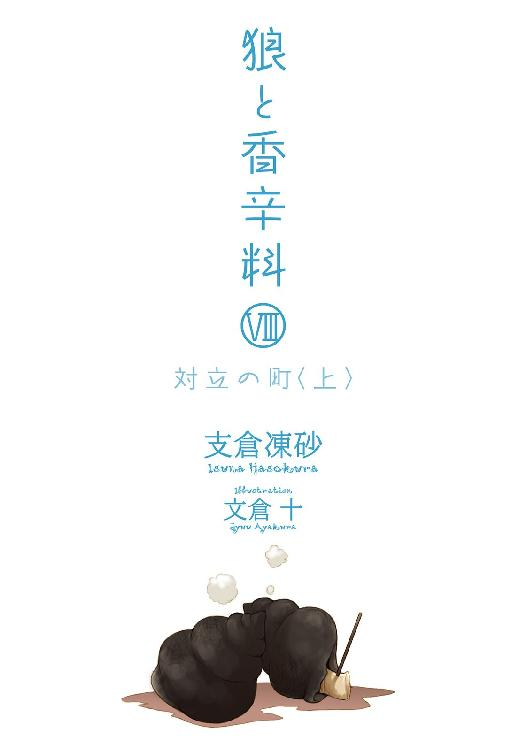
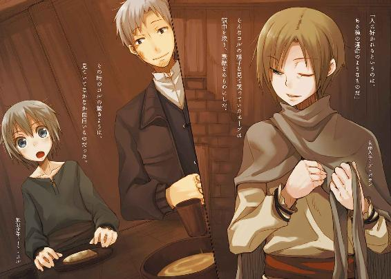
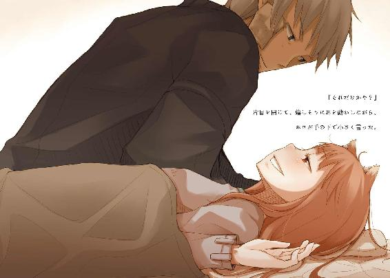
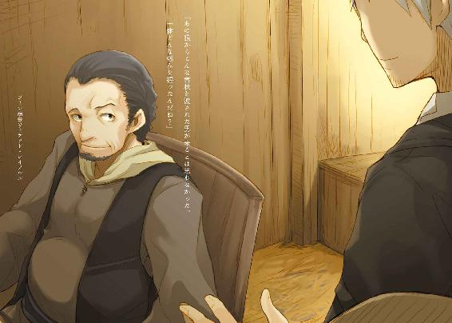
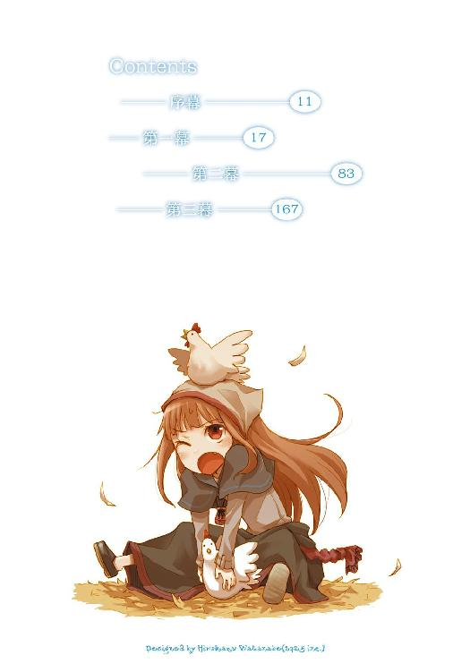
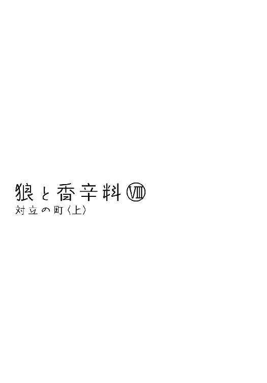
本書（電子版）に掲載されているコンテンツ（ソフトウェア／プログラム／データ／情報を含む）の著作権およびその他の権利は、すべて株式会社アスキー・メディアワークスおよび正当な権利を有する第三者に帰属しています。
法律の定めがある場合または権利者の明示的な承諾がある場合を除き、これらのコンテンツを複製・転載、改変・編集、翻案・翻訳、放送・出版、公衆送信（送信可能化を含む）・再配信、販売・頒布、貸与等に使用することはできません。
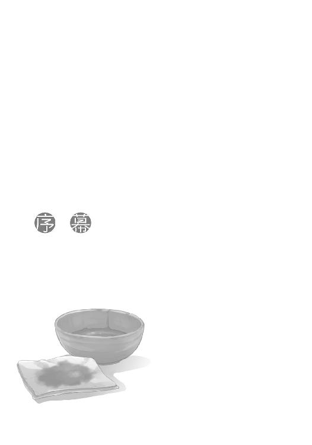
雲が月を隠し、暗闇が辺りを覆った。
時折緩やかに吹く冷たい風が、ゆっくりと前髪を揺らす。
針金を折り曲げて作られたランプの中では、獣脂の炎が不安げに揺れていた。
寒く、恐ろしく冷たい。
積荷を満載した荷馬車が進むごとに、氷を踏みしめるような音がする。
誰も口を開かず、一行はただ黙々と前に行く。
積荷の横でランプの頼りない明かりが揺れ、馬の太い首と、その綱を引いて歩く馬子の後頭部が浮かび上がる。
まるで死人の行列のようだ。
その類の話はいくらでもある。
ただ、違うのは、その一行の中で一人だけ、立ち止まっている者がいたことだ。
手にランプを持たず、馬を叩くためか、あるいは馬子を叱咤するためか、杖を手にしていた。
その一人だけが、足を止め、こちらを見ていた。
死人のような無表情の行列の中で、ただ一人、驚きをあらわにした顔をして。
「こんばんは」
短い単語は、空気が冷たいせいか、よく響いた。
その場にしゃがみ込んで足元の砂利を手に取れば、砕いた氷と言われてもわかりはしないだろう。
暗闇と冬の空気と沈黙の中、どれくらい対峙していたのかはわからない。
相手は予想外の出来事に出会っても平然としていられる歴戦の商人。
それでも、現実を理解するには時間がかかったらしい。
「早馬か？」
そうではない、ということを自分で結論づけている聞き方だ。
もちろん、手の内の全てを見せる商人はいないので、その質問に答えは返さない。
暗闇の中で首を横に振った。
風が吹く。
荷馬車の一行は暗闇の中、市壁の入り口に掲げられた松明の明かりの下を、絞首台に向かうように静かに進んでいった。
本当ならば、優位に立てたことを最大限利用したいところだった。
しかし、事実は戯曲よりも矮小だ。いざという時に残された体力がない、ということはままあること。
なにかの魔法でこうなったわけではないのだから。
「とりあえず、暖かい宿で話をどうでしょうか」
口も聞けないほど疲れている他の者たちを代弁して、言った。
「エーブさん」
相手は歴戦の商人。
現実的な提案には、現実的な返事を返してきたのだった。
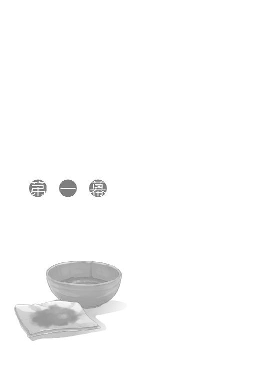
「むぐ......んむ......」
もくもくと口を動かし、ひとしきり咀嚼するとさっさと嚥下して、また口を開く。
そこに匙ですくった粥を運んでやると、ぱくりと口が閉じる。
時折、歯がかゆいのか匙を嚙むことがある。いい年をして歯が生えたての仔犬のようだった。
そんな仔犬はパン屑がたっぷり入った重い粥を木の椀に二杯食べて、ようやく満足したらしい。唇にくっついた残りを綺麗に舌でぺろりとなめ、ため息を一つ。羊毛を詰めた立派な枕を二つも並べ、その上に横になっている様は療養中のお姫様に見えなくもない。
ただ、いかんせん姫と呼ぶには体格が貧相すぎる。
光栄なことにその体を抱きしめたことのある身としての感想は、そこまで貧相ではないにしても、少なくとも見た目は筋張っていることが否めない。
いや、今日に限って妙にみすぼらしく見えるのは、きっと珍しく髪の毛に寝癖がついているからだろう、と思いなおした。
あとは、顔がむくんでいるせいで恐ろしく不機嫌に見えるからだろうか。
そんな貧相な姫の名はホロ。
もちろんホロは姫などではないが、もしかしたら女王ということはあったかもしれない。
それも、雪深き北の森の中で、だ。
ホロの頭には凛々しく尖った狼の耳が、その腰からは威風堂々とした尻尾が生えている。
見た目が齢十余の少女というのは仮の姿で、その真の姿は大の男を丸飲みにできる巨大な狼だ。自らを賢狼と称し、麦に宿りその豊作を司る、何百年と生きてきた狼だった。
しかし、歴代諸侯の肩書き並みにご立派なその出自を持っていても、こんな姿を見たら麦の豊作を祈る村の連中もホロを当てにしなくなるわけがわかる。
寝癖をつけたまま飯を食べさせてもらっているのを見れば威厳も権威もどこへやら。
確かに、無様を晒してもいいくらいに心を許してくれている、と言えば聞こえはいい。
ただ、ロレンスはそれに対し、物は言いようだとしか言えない。
大体、ホロに甲斐甲斐しく飯を食べさせてやることはこれが二度目だというのに、礼を言われた記憶は未だにない。
今回もさもそれが当たり前といった様子のホロは、食べ終わるなり大きくげっぷをして、耳をひとしきりひくひくとさせている。視線が遠いので、なにかを思い出しているのだろう。
それからほどなくして、不機嫌そうに眉根に皺を寄せた。
「賢狼が筋肉痛だなんて言って、誰が信じると思う？」
食器を片づけながら言うと、視線が遠くから戻ってきた。
「ぬしはそんなか弱いわっち、が、ぐ......」
と、小首をかしげようとして、ホロは失敗した。
昨日半日、ロレンスともう一人、放浪学生の少年コルを乗せて荒野を走ったホロだ。
日の光の下を思いきり走れることがよほど嬉しかったのか、宿に着いた時にはまともに階段も上れないほど疲弊していたのに、妙に興奮して眠る寸前まで目をぎらぎらとさせていた。
走っている最中にもほとんど休憩を挟まず、背中にくっついているだけのロレンスたちのほうが先に音を上げてしまったくらいに走り通しだった。
それでもまだどこか走り足りないといった感じがしたホロは、思慮深く、冷徹にして勇猛な森の狼というよりも、野に放たれた犬というほうが近かった。ロレンスとしては嫌味のつもりだったのだが、その足の速さと体力を褒めてやったら、今まで見たことないくらいに得意げな顔で胸を張っていた。
一本一本が銀でできた針金のように雄々しい毛皮に包まれた巨大な狼が、座って胸を張る様はなるほど神の名に相応しい威風堂々としたものだった。
ただ、嫌味で褒めたところに嬉々として胸を張ってしまうあたりには、苦笑いを禁じ得ない。
何百年と村の麦の豊作を司る神として崇められていたホロだから、きっとこんなふうに子供のように感情をあらわにするのが楽しくて仕方がないのだろう、と好意的に解釈しないと、ホロが賢狼であるということなど忘れてしまいそうだった。
もちろん、単純に元々の性格がこうなのだ、というのはこれまでの旅からよくわかっている。
だから、ロレンスは存分に褒めちぎってやった。
もう少し褒めたら、きっとわっさわっさと揺れていたホロの尻尾のほうがちぎれてしまったことだろう。
そんなことがあったので、今朝起きた時のホロの顔が二目と見られないひどい有様だったのには、自分の耳で音が聞こえそうなほど血の気が引いた。ロレンスは本気で重い病を想起した。
それが、ただの筋肉痛だとわかった時の安心感といったら、ホロを危うく怒鳴りつけたくなったくらいだ。
もっとも、腕は上がらない、首は回らない、腰は痛くて立ち上がれないでは、病人も同然なのだが。
病人と違うのは、一丁前に腹は減らすことだろうか。
「まあ、人を二人も乗せてあれだけ走れば仕方ないか」
「調子に乗って走りすぎたのは確かじゃな」
まともに動くのは耳と尻尾くらいのもの。
ただ、ひどく辛そうな割には後悔しているふうにも見えない。
ホロはこの少女の姿をいたく気に入っているようではあっても、やはり真の姿である狼のほうがしっくりくるということだろうか。
そう考えると、これまでの旅で妙に不機嫌なことがあったりしたのも、狼の姿で自由に動き回れなかったことからくる不満が原因の一つだったのかもしれない。
「じゃが」
と、ロレンスがそんなことを思っていると、ホロは小さな欠伸を挟んで言葉を続けた。
「体が痛くて起き上がれぬとはまったく格好がつかぬ。これが、わっちの上に乗っておったぬしが朝起き上がれない、というのならまだ格好がつくんじゃが」
体は動かなくとも口は回る。
ホロは意地悪な笑みを浮かべてそう言うが、姿勢が不自然なのでまったく様になっていない。
側にコルがいたら少し慌てたかもしれないが、幸いなことにコルは外に出ている。
「お前がもっと思慮深くて先見の明に満ちあふれ、全てを任せておけば絶対安心、というのなら、俺はなにも考えずお前の尻馬に乗ろう。しかし、昨晩のこと、忘れたわけではないだろう？」
ロレンスが言ってやると、ホロは珍しく反論をしてこない。
それどころか、悔しそうに唇を嚙んで、そっぽを向いた。
昨晩の失態を、きちんと自覚しているらしい。
「まったく。尻馬に乗るどころかお前の手綱を握らなきゃならなかった。お前は一体誰が誰の御者だと言っていたんだっけ？」
ホロを反省させるにはいい機会かもしれない。
ロレンスはそう思って追撃を加える。
昨日、ホロの快走によりロレンスたちはローム川を下る船を降りて半日後には港町のケルーベにたどり着いた。船で下れば二日はかかる距離だ。
その速さは、どんな早馬を乗り継ぐよりも速いものだったはず。
それだけ早く来たのにはもちろん目的がある。
それは、ロレンスたちがローム川を下っている最中に知った、ロエフと呼ばれる地方の山々の村に祭られていたという狼の骨の話を追いかけるため。確証はないが、おそらくはホロのような狼のものだと思われるその骨は、教会勢力が自らの権威を誇示するために、骨を冒瀆する目的で追いかけている可能性があった。
それはホロからすれば我慢できることではないし、見逃せることでもない。
ただ、純粋にそういった理由から当初の予定を変更して川を下り、その話を追いかけるには少々ロレンスたちはへそ曲がりに過ぎるし、本当の理由をはっきり口にするほど正直ではない。ロレンスなどはこの二人の旅を笑顔で終えるために、などという口実を用意しているが、ホロに聞けばホロもまた別の口実を用意しているだろうことは間違いなかった。
そして、そんな狼の骨の話について情報を聞き集めたところ、その骨を追いかけているのはローム川流域の教会勢力を始めとする人間たちらしかった。
そこで、ローム川流域のことに表から裏まで詳しいだろうエーブに話を聞くため、ロレンスたちはケルーベと呼ばれる港町までやってきたのだった。
元貴族でありながら、没落の果てに商人になり、レノスの町で教会と手を組んで不正なことをしていたくらいのエーブだから、その情報網は相当のもののはず。それに、レノスの町での毛皮の件や、その毛皮を周囲を出し抜いて輸出するために、川に船を沈めて妨害工作をしたことなども材料にすれば相当の話が聞けるに違いない、という目論見があった。
そのため、ロレンスたちはラグーサの操る船から降り、ホロの背中に乗ってエーブのあとを追った。
しかし、誤算があった。しばらく下っていった先で追いついた船の上には、エーブの姿が見当たらなかったのだ。
レノスの町でロレンスたちが宿泊した宿の主人、アロルドの姿はあった。そのため、その船がエーブに関係するものであることはわかったのだが、さらにおかしいことに、その船に大量に積まれているはずの毛皮も見当たらなかった。
エーブが毛皮を積んでケルーベに行こうとしていたことは間違いがない。
となれば、途中からは毛皮を陸路で運んだ可能性が高い。そもそも荷を高速で運ぶために船を使っていたとはいっても、距離が長くなければ他に手段がないわけではない。
幸運からか、はたまた計画的にか、とにかく馬を調達できたのだろうと考えれば、途中から陸路という選択肢はそれほど奇異なものではない。
むしろ、船を川に沈めて後続の船を足止めしたとなれば、利害関係から船に毛皮を積んで川を下っている者が犯人として疑いをかけられるのは当然のこと。船でせっせと毛皮を運んでいたら自分が犯人ですと公言するようなもので、途中から陸路で運ぶのはその嫌疑から逃れる有効な方法となる。
ロレンスはそのように考え、エーブはすでに馬で荷を運びケルーベに向かっていると判断した。ホロはアロルドを締め上げて行き先を聞き出せばいいと言い張ったが、それを説き伏せてさらに川下に向かった。
そして、ロレンスは自分の説が正しかったことを、夕暮れ時にホロが遠方に商隊を見つけたことで確信した。
エーブが率いる荷馬の列。
ロレンスたちは先回りし、ローム川の終わりに位置する港町、ケルーベの入り口で、エーブたちの到着を待った。
その時のエーブの顔は、墓から出てきて歩く死人を見た、というようなものだった。
氷の洞窟から吹き出てくるような冷たい風が時折前髪を揺らす中、ロレンスたちはエーブと共にケルーベへと入り、わずかの協議のあと、エーブから紹介された宿に泊まることになった。
エーブとの再会こそ彼女の意表をつくものとなり、優位はこちらにあったが協議の内容はロレンスのため息まじりに語るほかないようなものだった。
狼の姿から少女の姿に戻ったホロは、なお目をぎらぎらとさせ、ろくに喋れないほど疲れていたのに妙に興奮していたのだ。
そんなホロが、レノスの町で一悶着あったエーブと一つ部屋に入ればどうなるか、ロレンスは予想していなかったわけではない。
それでも、危うく摑み合いの喧嘩になるとまでは、思わなかった。
「ぬしが手ぬるいからいかぬ。その顔の傷は、誰につけられたか忘れたのかや」
ホロが自分の正当性を主張する。
「相手を批判することが自分の正しさの証明になるとは、よもや本気で思っていないだろう？」
「む......」
ホロは口をつぐみ、ぐっと顎を引く。
自分が悪いということは理解しているのだ。
それでもなお素直に謝れない理由は、ロレンスにもわかっているのだが。
「その点、エーブはさすがだったな。お前の剣幕を前に、応戦することなく引くことを選んだ。なぜかわかるか」
ホロの目が、ロレンスから外される。
放っておけば本当にエーブに摑みかからんばかりだったホロを、ロレンスはほとんど羽交い締めにするように止めていた。
あの時、エーブの目は蛇のように冷静にロレンスたちのことを見回して、それから、威嚇するでも無視するでもなく、最後に少しだけ微笑んだ。
「俺たちと事を構えると不利益になると判断したからだよ」
「わっちを損得勘定のできぬ子供扱いかや」
短く言って、口を閉じる。喉の奥ではその千倍の言葉が渦巻いているように、その顔がどんどん歪んでいく。
ロレンスは、やれやれと思いながらその様子を見つめていた。
耳を見れば本気で怒っていないのは明々白々。
ならばなぜそんなことをするかといえば。
「エーブは、お前の怒りが理屈じゃないとわかったからだろ。お前は、まさしく、子供のように怒った。それこそ、利益度外視で」
つまり、エーブは自分が踏んではならない尻尾を踏んでいたとすぐに気がついたのだ。
相手が理屈で怒っているのであれば理屈で対応もできるが、感情で怒っているのであれば理屈は逆効果しか生み出さない。だから、エーブは素直に頭をたれた。
そうなれば、感情で怒っていつつ、なおその理屈もわかっているホロは許すほかない。
しかし、それがすんなりと納得できないのだろう。
形式の上では許さなければならないが、いかんとも許しがたい。ホロはこの呪縛を前に、歯嚙みしているのだ。これを断ち切るには、ロレンスが魔法を唱えなければならない。
まったく、面倒くさいお姫様だった。
「まあ、あれだけ感情的な対面を経たあとなら、かえって冷静に話をしやすいからな。こちらの利益を引き出しやすくなった」
「......それで？」
ホロがじろりと視線を向けてくる。
ロレンスは気恥ずかしくて、肩をすくめてから、小さくため息をつく。
それは、諦めのため息だ。
「俺のために怒ってくれたのなら......そう。ありがとうな」
古より、契約は声に出して宣誓するのが慣わしだが、それはどうやら商売だけではないらしい。
こんなあからさまな言葉を口に出すなどロレンスは今もって気恥ずかしさを拭えないが、ホロにそれがないと駄目と言われたなら、仕方がない。
取引は、互いの妥協点を探らなければならないのだから。
「ま、ぬしがそう言うのなら」
と、ようやく毒の抜けた顔をして、ホロは耳をはたはたとさせたのだった。
窓の向こうからは、通りを一本挟んだ市場のざわめきがかすかに入ってくる。
冬の日差しは暖かく、日の光の下にいる分には春が来たようにすら錯覚する。
ロレンスがあまりの馬鹿らしさに耐えきれず苦笑いすると、ホロも釣られて笑い出した。
穏やかで、のんびりとしていて、何物にも代えがたい一時だった。
「さて、それじゃあ食器を片づけて......と」
「うん」
ロレンスの独り言にもホロは一応相槌を打って、耳と共にそこだけは元気な尻尾の毛づくろいをしようと視線を落とす。
これまでの旅でも繰り返してきた風景。
ただ、いつもとは違う要素が一つあったはず。
その要素のコルが外に買い物に出たっきりだった、というのは、部屋の扉がノックされて思い出した。数瞬待ったあとに扉が開けられれば、その先には木の椀のようなものを抱えたコルが立っていた。
さて、コルはなにを買いに行ったんだったか、とロレンスが記憶を探ろうとした瞬間、その強烈な匂いが鼻を突いた。なんと表現すればいいのかわからない、香草をすりつぶして硫黄で煮込んだような独特な匂いだ。
あまりの匂いに体をのけぞらせるが、コルのほうはまったく意に介していないらしい。
「軟膏を作ってきました！」
と、いそいそと部屋に入ってきた。
息せききっているあたり、急いで来たのだろうことが窺える。
ホロはコルを気に入って散々撫で回し、コルはコルでホロに懐いているらしい。
今朝のホロの様子を見たコルは、脱兎のごとく駆け出して、朝の取引に賑わう町へと出ていった。
北の人間はことのほか薬草の知恵が豊富だ。
切り傷から熱病まであらゆることに対処できるだけの薬草を知っていると言っても過言ではない。きっと、筋肉痛に効く軟膏を作ってきたのだろう。
しかし、この匂いはどうにかならないのか。
ロレンスはそこまで思って、はっと気がついた。
ホロ。
ロレンスが振り向くと、耳と鼻が抜群に良いヨイツの賢狼は、文字どおり尻尾を巻いてベッドの上で苦悶していた。
ホロに同情するほかない。
コルが親切心から作ってくれた軟膏を、断ることができるだろうか。
ロレンスは枕の陰から向けられる助けを求めるような視線を無視し、コルとすれ違おうとした、その瞬間。
「あ、この軟膏、ロレンスさんのその怪我にも効くんですよ」
枕に顔を突っ伏しているホロの耳が、少し嬉しそうに動いたのだった。
濃い緑色の、妙な粘り気のある軟膏だった。
ロレンスはそれを布に塗り、右頰の腫れ上がった場所に貼りつけた。途端、鋭い匂いが針のように突き刺さり、頰一帯に強烈な熱さが広がった。しかも目にはしみるし、鼻はひん曲がりそうだ。
それでも、コルはこの軟膏を作るために乏しい路銀を惜しげもなくはたいていた感じだったので、無下になどできるわけがない。
とはいうものの、この強烈な匂い。
ホロの肩や腰に塗る時も、心底怯えたような目を向けられた。鼻の良いホロのことだから、本当に辛いのだろう。
それでも、自分だけがこの匂いに苦しめられるわけにはいかない、とそんなことを思わないわけではなかったが、少なくとも効き目はありそうなのでホロに軟膏を塗ってやった。
軟膏を塗りつけるたびにホロがなんとも言えない声を上げていたが、少しも魅力的ではなかった。
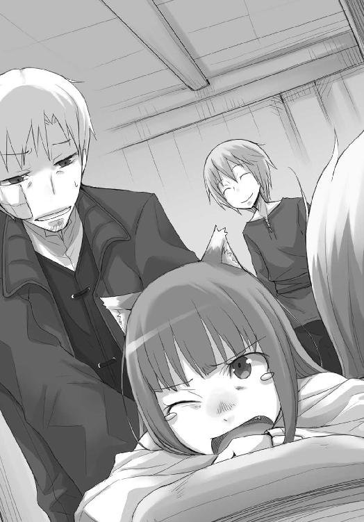
服はあとで買い換えてやらないとならないかもしれない。あるいは、うまい酒か。
一通り塗り終わってから、恨みのこもった一瞥を貰い、そう思わざるを得なかった。
「あ、そうだ、さっきここに戻ってくる途中、昨日の商人の方がロレンスさんとお会いしたいと言ってましたよ」
ホロが特に痛がっていた部分に重ねて軟膏を塗り終わり、手についたものを拭き取る。
強力な薬ということに間違いはないらしいので、もしかしたら本当に効くのかもしれない。
ロレンスは、おそらくは軟膏の匂いのせいだろうが、ベッドの上でうんうん唸っているホロを横目に、コルに聞き返した。
「昨日のというと、エーブか？」
「そうです」
「兵は拙速を尊ぶ、か。今日、明日にはいなくなりそうだからな」
没落貴族の身でありながら、商人として破竹の勢いで出世しているエーブ。
材木と毛皮の町レノスでは、ロレンスを罠に嵌める形で信じられないような毛皮の取引を企んでいた。その大博打を打って手に入れた毛皮をこの町に運ぶ際にも、他の連中が毛皮を運べないように川に船を沈めたりとやりたい放題だ。
狡猾な知恵と据わった肝で万全を期してはいるのだろうが、この町でまごまごしていればひょんなところから危ない取引で構築された堤が決壊するかもしれない。さっさと遠いところに逃げるのが定石だ。
それに、レノスの町から運んできた毛皮をここからさらに次の町へ輸送しなければならない。
まだ町は動き出したばかりといっても、そんなエーブには遅すぎる時間かもしれなかった。
「どこに行けばいいとか言われたか？」
「えっと、もう少ししたらこの宿に迎えに来ると」
「......そうか」
エーブは忙しい身であろうから、わざわざここに来るというのはなにか含みがあるはずだ。
すぐに思いつくこととしては、ローム川に船を沈めた犯人として告発されたくない、ということなのだが。
「で、お前朝飯は食べたのか？」
「え？ あ......は、はい」
ホロほどではないにせよ、ロレンスも商売で人の噓を見抜く目を鍛えてある。
コルの頭を軽く小突いてやってから、なにも言わずパンの詰まった麻袋を押しつけた。
大方、自分の朝飯を買う金も使って、軟膏を作るための薬草を買ったのだろう。
異教の村を守るために教会権力を利用しようと、そんな不穏な理由で教会法学を学びに南の町の学校に通っていたのに、本物の正教徒よりもよほど正教徒らしい。
コルは麻袋を受け取ってやや戸惑っていたが、ロレンスは気がつかないふりをして、毛布の下で唸っているホロに歩み寄った。
少し外出する旨を告げると、顔は上げてくれなかったが、耳だけで返事をされた。
匂いのせいで気絶でもしやしないかと思ったが、意外にそういうわけでもないらしい。
ロレンス自身もいつの間にか匂いは気にならなくなっている。代わりに、軟膏を塗った右頰が熱を持ち、いかにも打ち身が治っていく、という感じがしていた。
狼たるホロになら、もっと明確に体に効いているということがわかるのかもしれない。
ベッドから離れ際、「負けたら承知せん」と言葉を向けてきたあたり、その予想は間違っていないはずだ。
ロレンスがひとまず安心して振り向くと、しばらく麻袋を手にしたまままごついていたコルが、パンを二つ手に取って立っていた。
袋の中には普通のライ麦パンとクルミをまぜて焼いたライ麦パンがあったが、手に持たれていたのはどちらも普通のライ麦パン。その慎み深さには苦笑いが出てしまう。
ホロも少しは見習って欲しいものだと思った。
「で、お前も来るか？」
とは、エーブと話すところに来るか、ということ。
コルはしばし目を泳がせてから、うなずいた。
エーブから聞こうとしている話は、ホロのような神や精霊と呼ばれる類の狼の足の骨の話で、それはコルの生まれ故郷のすぐ近くの村に祭られていた神様のものだ。
そして、コルはその神様である狼の足の骨を巡る話が真実かどうか確かめたくて、ロレンスたちと共に旅をすることを望んだ。
だとすれば、来たがらないわけがない。
それでも敢えてそう聞いたのは、聞いてやらなければついてこないような気がしたからだ。
若いうちから気苦労の多そうな性格だった。
ホロに懐いているのも、もしかしたら傍若無人なその雰囲気が新鮮なのかもしれない。
「なら、さっさとそれを食べておくことだ」
部屋から出る時にそう言うと、コルは慌ててパンを口に詰め込んだ。
「は、ふぁい」
それから、ロレンスはこのように言葉を続けてやった。
「もちろん食べ終わったあとは、小麦パンを食べましたという顔を忘れるなよ？」
立ち居振る舞いは修道院でよく躾けられたような上品なそれなのに、こと食事に関しては赤貧の旅が災いしてか、ちょっと野性味にあふれている。
今も栗鼠のようにパンを頰張ったまま、コルはきょとんとした。
それから、ロレンスの言葉の意味がわかったらしく、笑いながらパンを飲み下して、答えた。
「物を食べる時は口元を隠せ、というのは教会でも教えられます」
「それは逆にいいものを食べていることを隠すためだろう？」
ロレンスが扉を閉めて歩き出すと、コルは忠実な弟子のように一歩後ろをついてくる。
「頂いたパンは、とてもおいしかったです」
これをちょっとした笑顔で言ってくるのだから、賢い少年だった。
宿の一階は食堂になっている。
朝食という贅沢をするのは旅人と相場が決まっているので、テーブルについている者たちはほとんどがこれから旅立つ服装だった。
そんな中にエーブが相変わらずの格好でテーブルについていたので、一見すると彼女もまた今日ここから旅立とうとしている旅人に見えなくもない。
もしかしたらその見立ては間違いではないのかもしれないが、ロレンスの目下の関心事は、エーブが素顔を隠すために顔を布でぐるぐる巻きにしているのに、それでもなお鼻を押さえたことだ。
「......ひどい匂いだな」
カウンターの奥では店主が迷惑そうにこちらを睨んでいるし、他の客などは怒ることも忘れて何事かとびっくりしている。
ロレンスは開きなおって平然としていて、コルに至っては本気で気にしていないらしい。
土地によってその地域に住む人たちが好む匂いというのは異なるといっても、きっとこれは極端な例だろう。
ロレンスがそんなことを思いながらエーブの対面の椅子に腰を下ろすと、エーブは思いがけないことを言った。
「だが、久しぶりに嗅ぐ匂いだ。その傷、夜には綺麗さっぱり消えるだろう」
コルの作ってくれた軟膏を塗った布を当てている右頰は、エーブと争った時に鉈の柄で思いきり殴られた右頰だ。
その口ぶりは、少しばかり冗談めかしていた。
「彼が調達してくれたのですが、さすが、博識ですね」
ロレンスは後ろに立つコルを示しながら、少し大袈裟に言ってやる。
「ふん？ ロエフの人間か」
エーブは静かにコルを見つめ、それから、一度瞼を閉じた。
なにを考えているのかまでは、わからない。
「まあ、オレはローム川沿いのことなら表から裏まで知っているからな。その知識を目当てに、この町までオレを追いかけてきたのだろう？ どんな方法を使ったのかはわからないが、信じられない速度でな」
顔に巻きつけた布の奥で目が細められる。
商人のよいところは、たとえ殺し合いに近いことをしたあとだって、利害が一致すればすぐに手を握り合えること。契約の関係になければ感情的なわだかまりなど残さないこと。
レノスの町であれほどのことを経たあとなのに、まるで旧知の間柄のようだった。
「昨晩の驚きは近年まれに見るものだ。てっきり、契約書に不備でもあったのかと」
ホロの遠回しな物言いにはいつも混乱させられるが、こういう類のものならロレンスにもわかりすぎるほどにわかる。
胸の内がざわついてしまうのは、もしかしたら恋に近い感情かもしれない。
商人の腹の探り合いは、それこそ、腹をくすぐられるかのように、楽しいからだ。
「ええ、私はあなたの知識のみを求めています。あなたと私の間には、商売の契約は一つも結ばれていませんからね」
この際だから、エーブの毛皮を狙っているわけではない、としっかりと告げておく。
エーブは小さくうなずき、椅子から腰を上げた。
「場所を替えよう。他の客と店主から恨みを買うことになる」
その言葉はいたずらっぽく。
しかし、あながち冗談でもなさそうだったので、ロレンスはコルと連れ立ってエーブのあとに従った。
「で、連れはどうしたんだ」
宿を出ると、そこは狭い通りになっている。どちらかというと広めの路地といったほうがよいかもしれない。
ケルーベの港町は川を挟んで北と南に分かれていて、ロレンスたちが宿を取ったのは北側の町だった。
北側の町は綺麗な建物が少なく、川沿いの市場こそ賑やかなものの、そこから少し離れると路地と傾いた建物が多く、どこか荒んだ印象を受けた。
建物の高さが統一されていないのも、町の景観に対する参事会の心が寛大なのか、または、その統制力が低いかのどちらかだ。
町の様子を見る限り、後者かもしれない。
ロレンスがそんなことを思っていると、エーブは迷うこともなく市場とは反対側に歩き出した。
「連れは旅の疲れが出ましてね。体中にこの軟膏を塗って、ベッドの上です」
「そいつは......」
と、言葉を切って振り向くと、コルのほうを窺って、布の奥で小さく笑ったのがわかった。
「きっと、すぐによくなるだろう」
ホロでなくとも、ご愁傷様、という言葉を飲み込んだのはわかる。
コルだけが、少し誇らしげに笑っていた。
「ただ、それはオレにとっては幸運なのかな。いや、あんた方にも幸運というべきか」
「両方でしょうね」
ロレンスは肩をすくめて苦笑いをする。
昨晩のうちにエーブが知っている知識を聞き出せなかったのは、ホロの剣幕がそれほどにすごかったからだ。
「なんにせよ、自分のために怒ってくれる他人は尊い財産だ。大事にしたほうがいい」
「私を自分の財産だと思っているから、傷つけられたことに対して怒ったのかもしれません」
外套の下で、エーブの肩が揺れる。
そんな折、ひょいと道の脇にそれたのは、冬でも取れる葉野菜を籠一杯に積んだ女が向かいから歩いてきたからだ。
これから市場に売りに行くのだろうそれは、夏場のものと比べると深い緑色をしていて冷たそうな感じがする。それでも、酢漬けや生で食べるには向かないかもしれないが、スープに入れたらさぞうまいに違いない。
「もしもあんたがあの連れの所有物なら、その時は賠償を求めるはずだ。ところが、あんたの連れは、復讐を求めた」
エーブの薄い青の瞳が、一瞬寂しげに見えたような気もした。
家が没落し、貴族の称号を金で得ようとした成金商人に家名ごとその身を買われたエーブ。
金でエーブの主人に納まった商人は、エーブが傷つけられれば相手になにを求めただろうか。
金か。それとも、復讐か。
考えるのは、それだけでエーブを傷つけることのような気がした。
自分が軽口の選択を間違えたことに、少しだけ後悔した。
「くっく。こうやって相手に罪悪感を抱かせ同情心を煽るとな、あとで商談が進めやすくなる」
エーブの言葉に、ロレンスはハッと我に返った。
色仕掛け、泣き落としはいつだってまともな取引を飛び越える。
警戒してはいても、つい引っかかってしまう。
がしがしと頭を搔いて、それでも顔が笑ってしまったのには、もちろん理由がある。
「ただ、それを敢えて言うということは？」
ロレンスは謎かけを楽しむように言って、必死に会話についてこようとするコルを見ながら言葉を続けた。
「そうやって自らの罠をさらけ出すことにより、あなたは私が抱く警戒心を解こうとしている」
「そう。さらに深く、ずぶりと牙を沈めるためにな」
頭に巻いている布を取ったら、その下ではきっと牙が見える笑みを浮かべているに違いない。
エーブを狐と呼んだホロの真意がわかるような気がする。
この商人はあまりにも狼らしすぎるから、同じ狼だとホロは認めたくないのだ。
「さて、到着だ」
「ここは？」
立ち止まるやコルが背中にぶつかってきた。きっと、少しでもこのやり取りからなにかを学ぼうとするために、ロレンスとエーブが交わした言葉を反芻していたのだろう。
ロレンスも師匠に対して同じことをしていたのを思い出すと、少し懐かしくなる。
「この町でのオレの拠点さ。看板を掲げていない商会といえば、察しはつくだろう？」
辺りの建物に比べ、壁は黒ずみ屋根は今にも通りに向かって滑り落ちそうな雰囲気だったが、土台の部分の石組みはしっかりしていた。
エーブの芝居がかった物言いに、コルは不穏なものを感じ取ったらしく固唾を飲む。
しかし、もちろん冗談に違いない。よくよく見れば黒い壁にはなにかを外したような痕があった。
要するに、つぶれたか廃業した商会なのだ。
「あまりからかわないでやって欲しいですね」
扉に手をかけたエーブの背中にそう言うと、それを聞いたコルが「え」と声を漏らした。
それから、ようやく自分だけがわかっていなかったのだと気がついたようだった。
エーブは、それを確認するためではないだろうが、振り返って、少し楽しそうにこう答えた。
「可愛い弟子だからか？」
「残念ながら弟子ではありませんし、こいつは商人でもありません。なので、ひねくれて育って欲しくないんですよ」
その言葉には、エーブらしくもなく、声を上げて大笑いする。
「はっはっは。そうだな。確かにそうだ。商人はひねくれすぎだからな」
自分の頭の上を飛び交う会話に悔しそうに口を引き結ぶコルをよそに、ひねくれた商人二人は建物の中に入っていく。
ロレンスが後ろを振り向くと、少し不機嫌そうな顔でコルも入ってきた。
馬鹿にされた、とでも思っているのかもしれない。
ロレンスは苦笑いと共に、やれやれとため息をつく。
商人の側にいたら、せっかく素直なコルの性格も捻じ曲がってしまうかもしれないと、そんなことを思ったからだった。
山羊の乳にバターと蜂蜜酒をまぜたものが出された。
コルだけは蜂蜜酒の代わりに単なる蜂蜜を。
バターの質がいいのか、少し苦めのライ麦パンが欲しくなった。
「アロルドさんはまだ到着していないのですか」
ロレンスたちが建物の中に入ると、中はしんと静まり返っていた。
居間には暖炉で火をたたえている炭の音と、その側に置かれていた鍋の中で緩やかに山羊の乳が煮えている音だけが小さく聞こえていた。
暖炉の前に座り、意外な手際のよさで飲み物を用意してくれているエーブを眺めている最中も、他には物音一つしなかった。
「おそらく今日の夕方頃だろう。食べるか？」
と、エーブはナイフでざくざくと切っていた小麦パンを手にしながら聞いてきた。
木の皿には鍋の縁についていたものだろう、煮詰まってチーズのようになった山羊の乳が盛られていた。
これに塩と油で漬け込んだ鰊の切り身を載せればさぞうまいに違いない。
「そんなものを食べたら今後の旅が辛くなりそうですね」
「そのとおりだ。舌が肥えると一気に旅費が跳ね上がる。だが、商人でなければそんなことを気にする必要もないだろう？」
エーブは言って、コルの前に切り分けたパンを置いた。
コルは驚いたようにエーブを見て、それから困ったようにロレンスのほうを見た。
「人に好かれるというのは、ある種の運命のようなものだ」
そんなコルの様子を見て笑っていたエーブは頭巾を取り、素顔をあらわにした。
その時のコルの驚きようは、見ていてなかなか面白いものだった。
「こんなオレにも母性とやらが残っているのかもしれないな」
そう言って自嘲気味に笑うと、どこか憂いを秘めたエーブははっとするほどに美しい。
ロレンスは常々思うのだが、男より女のほうがよほど商人に向いているような気がしてならない。
こんなにもあれこれ意外な一面を見せられたら、いかに器用な男であってもそう簡単に太刀打ちなどできはしないだろうからだ。
「で、なにを聞きたいと？」
ロレンスから貰ったライ麦パンのようにではなく、今度はゆっくりと味わうように小麦パンを食べているコルを見ながら、エーブはそう話を切り出した。
「罰当たりな話を」
「この川沿いの商会が異教の神の聖遺物を......異教でも聖というのかわからないが、それを探している話だったか」
ロレンスはうなずき、エーブは少し視線を遠くして山羊の乳に口をつける。
「その噂は二年ほど前にローム川一帯の町にまことしやかに流れてな。一時は汚い商売に手を染めている連中は色めき立ったものさ」
「真相は？」
遠くから子供の泣き声が聞こえてきた。
町の中では、鳥の鳴き声よりも子供のそれのほうをよく耳にする。
「例のごとく、というやつだ。骨が見つかったという話が出ないまま、噂は広がったのと同じ速度でしぼんでいった。酒の肴だよ」
エーブが噓を言っているとも思えないし、なにより噓をつく理由がない。
しかし、火のないところに煙は立たないものだ。
「噂の出所は、ローム川に流れ込む支流、ロエフ川の上流の町レスコの商会で合っていますか？」
そのレスコの町の商会と、この町のジーン商会が銅貨の取引をしていた。
しかも、その銅貨の取引には妙な点があった。輸入した銅貨の箱の量と、輸出した銅貨の箱の量が釣り合わないのだ。
ロレンスは結局わからないままなのだが、隣でエーブすらが目を細めて笑ってしまうくらいおいしそうにパンを食べるコルはその原因に気がついたらしい。
早急に知る必要もないので未だ解答は聞いていないが、自力で解決できないとなれば悔しくないわけがない。
「そう。確か、デバウ商会とかいったな。レスコの町の鉱山利権をがっちり握っている景気のいいところだ」
「この町だと、ジーン商会が主な取引先？」
「ほう。そんな話をいつの間に集めたんだ、と聞きたいくらいだな。よく調べているじゃないか」
エーブはパンを山羊の乳に浸して頰張った。
ロレンスはそれを見て、ホロを連れてきても大丈夫だったかもしれないな、と思った。
こんなうまそうなものであれば、ホロはあっさりと懐柔されてしまうだろう。
「レスコの町のデバウ商会と、オレたちが毛皮を巡って大騒ぎしたレノスの町の教会。それに、この町のジーン商会が銅製品の流れを司る要になっている。もっとも、レノスの町の教会は単に睨みを利かせて税をふんだくろうといった程度だがな。デバウ商会とジーン商会は互いに懇意のはずだ」
「それは、どんな理由で？」
ロレンスが間髪いれずに訊ねると、エーブが苦笑いするように唇を片方だけつり上げた。
コルもそれに気がついて、顔を上げた。
「すまない。悪気はない」
つい笑ってしまった、というように、エーブは目を伏せて口元を手で撫で、そう言った。
そして、片目だけを開き、ロレンスに向けてくる。
「オレの印象では、あんたはそこそこ慎重な商人だったがな。なぜ、こんな戯言にそんなに真剣になる？」
商人という連中が質問をする時は、基本的に答えがわかっている時だ。
エーブは穏やかに、しかし、楽しむように笑っていた。
「お察しのとおり。連れが北の生まれだからですよ」
ロレンスが答えると、だろうな、という顔をして、エーブは手元のコップの中を覗き込んだ。
「あの可愛らしいお嬢さんのためでなければ、あんたは非合理なことはしないだろうからな」
「それは、わかりませんよ」
苦しいが、つい言い訳してしまった。
エーブはほんの少し目元で笑っただけで、追撃はしてこなかった。
「まあ、生まれ故郷で崇め奉られているご神体が金で売買されているとあっては、それはいてもたってもいられないことだろう。だが、そうなると気になることがある」
「というと？」
手元のコップを覗いていた姿勢のまま、エーブは上目遣いにロレンスを見た。
その楽しそうな様子は、まるで相手の弱みにつけ込んで商品を買い叩こうとしている商人のようだった。
「あんたは物を金で買う商人だろう？ すると、あんたはあんたの連れの味方なのか、敵なのか。あるいは、善なのか。それとも......悪なのか」
コルが少しびっくりするように体をすくませた。
確かにロレンスは金を稼ぎ、物事を金で解決する商人だ。
それは神と呼ばれる狼の骨を金で買おうとし、なんらかの目的に使おうとする連中と同質ということになる。商人はいつだってあらゆる扉を金の鍵でこじ開けるからだ。
もしも狼の骨の話が真実で、万が一その行方がわかった時、ロレンスはきっとその骨を取り戻すために商人としての技能で挑むことになるだろう。
だとするならば、それに対してホロやコルはどう思うだろうか。
狼の骨を金で買おうとすることに間違いはない。
その時、ロレンスはホロやコルの味方なのか？ あるいは、その行為そのものは悪なのか善なのか？
ロレンスは、山羊の乳で唇を湿らせて、こう答えた。
「金で物を買うことは悪ではありません。物以外のなにかを買う時に、大抵悪だといわれるのです」
「と、いうと？」
「権威や権力のため、あるいは私の連れの気を引くために狼の骨を買うのなら、連れは私を軽蔑するでしょうね。金はあくまで物を買うための道具です。それ以外のなにかを買う時に悪となるのです。それこそ、木を切るための斧で人を切る時のように。そして、連れはもちろんそれを理解してくれるでしょう」
エーブの目が細まり、一層唇がつり上がる。
金で一切のことを取り扱う商人たちは、とかくその正義を問われることが多い。
また、商人に大切なことの一つに、信用がある。
だとすれば、正義を問われた時にどう答えられるかで、商人としての格が決まるようなものといえる。
正義の質は、人の質。そして、それは天秤にかければ信用と釣り合うものだからだ。
エーブがそこまで思っていたかどうかは定かではないが、少なくとも重要な判断材料に使おうとしていた、ということは間違いない。
ロレンスの答えを聞いてすごみのある笑みを浮かべたエーブは、ふっと表情を緩めて手にしたコップを差し出してきた。
「またあんたとは商売をしたいところだ。妙なことを聞いて悪かった」
ロレンスも無事な左頰を軽く緩めて、差し出されたコップに自分のそれを合わせた。
ぎりぎりのところでぶつけないのは、万が一にも傷をつけられない高級な銀食器を使っている時の作法であり、そうするのは、この挨拶が高価な銀食器を使ってなされるに相応しいものであるということを示すためだ。
「オレはあんたとあんたの連れを見て羨ましいと言ったな。今ほど、そう思ったことはないよ」
「では、私はそれを誇りとしておきます」
エーブは声なく、肩だけを揺らして笑った。
そして、視線をロレンスからコルに向けると、商人の顔に戻って言葉をかけた。
「お前はこのクラフト・ロレンスの弟子ではないそうだが、オレは心の底から、それをもったいないことだと伝えておこう」
コルはその言葉に目を白黒させ、それから、困ったようにうつむいてしまった。
ロレンスはそれを笑いつつも、残念に思う。
困るということは、その判断は採用できないという意味だからだ。
エーブもそのことがわかったらしく、笑顔のまま目を閉じて、再び目を開けた時にはロレンスのほうを向いていた。
「あんたのことだからわかってはいると思うが、デバウ商会が探していたという狼の骨の話は、リュミオーネ金貨で百枚程度の話じゃない。下手に近づけば人の命がいかに安いかを思い知るような話だ。それでもな、オレは自分の商人としての目を信用して、あんたをそれと同じくらい信用しようと思う」
ゆるゆるとコップを回して、ロレンスは軽くその中身を口にした。
ここで大見得を切らなければ、ホロにきっと怒られる。
「私は金の前に命を取りました。ですが、連れは命より大事です。私も、『期待』していますので」
エーブと命のやり取りをした中で交わした本音。
狼姿のホロが笑った時のように、エーブがぞろりと歯を見せた。
「たまには宝の地図に書かれた宝を追いかけるのもいいかもしれないな。いいぜ。あんたらの目的はデバウ商会と懇意のジーン商会からすんなりと情報を引き出すことだろう？ ジーン商会に紹介状を書いてやる。そのあとのことは......」
片目を閉じて小首をかしげたのは、エーブなりに自信のある仕草だったのかもしれない。
「あんたの才覚しだいだ」
思わず惚れそうになった、とホロに言ったらきっと喉笛を嚙みちぎられるかもしれないが、それは噓ではない。
エーブは生粋の商人だ。
自分の表情がどんな意味を持つのかを、完全に把握しきった天賦の才にあふれている。
ロレンスは恭しく頭をたれた。
黄金の道を駆け上がる商人は、なるほど、こういうものなのだなと、思ったのだった。
高価な羊皮紙をナイフで裁断し、内容をしたためると砂をかけてインクを乾かし、それを待つ間に馬の尻尾の毛で作った紐と、赤く染色された蠟を用意する。
インクが乾いたのを見計らい、羊皮紙を丸め、蠟を溶かして封をすると、馬の尻尾の毛を縒り合わせた紐でくくって親書の完成となる。
これだけのものとなれば、たった一通の手紙といえど商人ならば無視できない金額になる。
ロレンスともう一度商売をしたいと言ってくれたエーブの言葉は、それなりに信じてもよさそうな気がした。
「オレは問題がなければ明日の昼過ぎにはこの町を離れる。海路で南に下るからな。しばらくこの寒い地方ともお別れだ」
「では、このお礼もかねて今一度お見送りに来ます。大商人になられる前の姿の見納めですからね」
受け取った親書を軽く掲げると、エーブは苦笑いしながらうなずいた。
「旅立ち前の休養で一日のんびりしている。夜に来れば使用人が用意した料理も馳走できるだろう」
「では、日の出ているうちに来れば？」
もしかしたら、エーブの微笑は普通の人間の驚きの顔なのかもしれない。
しばらく笑みが固まっていたが、やがて腕を組みなおしてため息をついた。
「邸にオレしかいなければ......そうね。私が腕を振るおうかしら」
レノスの町でエーブと最初にまともに言葉を交わした時、冗談まじりに愛想には自信があると言っていた。
そして、どうやらそれは噓ではなかったらしい。
元貴族に相応しい柔らかな声音でエーブがそんなことを言うと、かすれた声が高貴な雰囲気をまとって耳をくすぐってくる。
コルなどは、ぽかんと口を開けてそんなエーブのことを見つめていた。
それなりの格好をしていれば、なるほど、まさしく女貴族だった。
「料理されるのはなにも牛や豚だけではないでしょうから、注意が必要ですね」
「くっく。ま、あんたの連れの機嫌がよければ、次は三人で来ればいい」
「そうします。紹介状、ありがとうございました」
ロレンスがそう答えると、エーブはうなずいて、小さく手を振ってから、ゆっくりと扉を閉めた。
別れ際に相手に手を振る商人はいない。
最後のそれは、ロレンスの斜め後ろにいたコルに向けてのものだろう。
ロレンスは紹介状を丁寧に上着の内側にしまいながら、ちらりと後ろに目を向ける。
予想どおりというか、どこか名残惜しそうに閉められた扉を見つめているコルの姿があった。
「面白い人だろ？」
ロレンスが歩き出すとコルは我に返ったようで、慌てて後ろについてくる。
「えっと......ええ、はい......」
「だが、この怪我はあの人にやられたものだ」
コル特製の軟膏を塗ってある右頰を指差して言うと、コルはしばし言葉の意味がわからなかったようで、じっとロレンスのことを見つめていた。
ようやく言葉の意味が頭に届くと、まさか、という顔で後ろの屋敷を振り返った。
「言い争いになってな、鉈の柄で、がつんと一撃だ」
「......そうなん......ですか？」
「意外な一面もあるみたいだが、だからこそ、油断するなよ。顔に巻きつけている頭巾の下にあの美貌が隠れているように、あの美貌の下には恐ろしいものが隠れている」
コルの眉毛が少し波打っているのは、そう言われてもいまいちぴんとこないからか。
「昨晩のホロの剣幕を見ただろう？ 実際のところ、俺はエーブに殺されかけたんだ」
「え！」
コルは声を上げて驚いた。
確かに初対面であれだけ優しげな面を見せられたら、よもやエーブがそこいらの盗賊顔負けの度胸と冷徹さを備えているというのは想像できないことかもしれない。
ただ、人というものはさまざまな一面を持っているものだから気をつけろよ、とロレンスは言おうとしたのだが、コルはえらく真剣な顔つきのまま黙り込んでしまった。
素直なコルであるから、人を疑うことにはそもそも抵抗があるのかもしれない。
そんなことを思っていると、ふと顔を上げたコルが、ものすごく困ったような顔をしていたのでロレンスは思わず聞き返してしまった。
「どうした？」
どうもコルにはこういうところが多いらしい。
頭が良くても、顔に出る表情と、口から出る言葉を自在に操れないようでは良い商人にはなれない。
その代わりに、良き聖職者にはなれそうなので、問題はないのかもしれないが。
「や、やっぱり、世の中を渡っていくためには、それくらいじゃないと、駄目なんですね......」
コルはそんなことを言って、どこか悔しそうにうつむいた。
それも、自分を責めるような、まるで自分の努力が足りなかったと嘆く槍試合に出た若い騎士のようだ。
ただ、ロレンスにはなぜコルがそんな表情をするのかがわからない。
エーブに殺されかけるのと、世の中を渡っていくこととどうつながるのか。
殺されかけてもなお生き延びるための術を手に入れないと駄目ということだろうか。
ロレンスはそんなことをあれこれ考えていたのだが、コルが言葉を続けたのでひとまず聞くことにした。
「僕は、もちろん、教会の教えを受け入れるわけではありませんし、その、村でもそういうことは時折ありました......。確かに、一つのことだけを見ていては駄目なんだなと思う時はありますし、世界というのは、僕が言うのもなんですけど、厳しいものだとわかりました。ですが......」
コルは歩きながら、ほとんど足元しか見ないで喋っている。
対して、ロレンスはよく晴れた空を見ながら歩いていた。
それくらい、コルの言っていることがわからなかったのだ。
「えっとな」
だから、ロレンスがそう口を開くと、突然コルは顔を上げた。
「あ、あの！ 別に、ロレンスさんのことを悪いと思っているわけではありません！」
その大慌てするような剣幕にロレンスは目を見開いてしまった。
「......い、いや？ 俺は、単にお前がなにを言っているのかわからないから、そこのところを聞きたいだけなんだが」
そして、そう言うとコルは途端に表情を消して、それから、突然顔を真っ赤にしてうつむいた。
ロレンスは自分の頭に手をやって、「？」と首を捻ってみる。
よくわからない。
わからないが、コル自身もなんとなく触れて欲しくなさそうなので、話題を変えることにした。
「とりあえず、ジーン商会に行く前にいったん宿に戻るか」
ロレンスの言葉に、コルは無言でうなずいたのだった。
「ということがあったんだが」
体を毛布から出していると軟膏の匂いが立ち上ってきて鼻がもげると言って、ホロは体を毛布の中に押し込んで顔だけを出していた。
「そうかや」
「お前ならわかるか？」
ロレンスたちが部屋に戻ると、うたた寝をしていたらしいホロはすぐに目を覚ました。それから、いつものように体を起こし「おや？」という顔をして首を捻っていたりする。なにか体に違和感があるようなふうで、ロレンスはその理由にすぐさま気がついた。
朝はろくに起き上がることすらできなかったのに、それを忘れるくらい痛みが消えているらしかった。
「すごい薬じゃな」
そういうわけで、ジーン商会にはホロも連れていくことにした。
ただ、このまますぐに行きましょうというわけにはいかない。あまりにも臭いのでロレンスともども湯で軟膏を流さないとならなかった。
話題に上っているコルは、その湯を一階に行って用意してもらっている。
「まあ、ぬしがわからんでも仕方がないじゃろ。肉屋に魚の話をするようなものじゃからな」
ホロは枕の上で大欠伸をして、そう言った。
ホロがそういう言い方をする時は、決まってその手の話題しかない。
また馬鹿にされるのか、と思うとため息の一つも出そうになったが、今更見栄を張るつもりもなく、さっさと降参することにした。
「俺は、確かに自分が鈍いことを今でははっきりと認める。だが、そう自覚したところでいきなり目が開くわけでもないからな。相変わらずわからない」
ただ、ロレンスがあっさり白旗を掲げると、ホロは目尻に涙をにじませたまま、きょとんとした。
「どうした？」
ロレンスが訊ねると、ホロの顔にじんわりと苦笑いが浮かび上がった。
「ふむ。わっちゃあもしかしたら意外と優しいのかもしれぬ」
耳が片方だけひくひくと動く。
「どういう意味だ？」
「そこまで卑屈になられると、さすがにぬしの無様を笑うことができぬ」
「......」
なんと答えていいのやら、頭痛に似たものを感じて額を押さえると、ホロはそれで満足したらしい。
にーっと歯を見せて笑ってから、ようやくいつもの意地悪そうな笑みを浮かべた。
「ま、確かに事の真相を知っておるぬしからすれば、他の解釈はしづらいかもしれぬがな。ぬしとあの狐になにがあったのかを傍から見た者がどう考えるか、本当にわからぬかや？」
意地悪な笑みを浮かべたということは、この言葉が解決の手がかりになっているということだ。そんなことをされたら、人の立ち位置を正確に理解し、そこから利益を上げていこうとする商人ならばその挑戦を受けて立たなければならない。
なにより、解決の方向は示されている。
ロレンスは、コルの立場に立って自分とエーブのことを考えてみる。
鉈の柄で殴られ、命のやり取りまでしかけ、ホロはそんなエーブを前にものすごい剣幕で怒り、それを聞いた途端に、コルが困って、挙句に顔を真っ赤にして恥じ入るようにしている......。
「あ」
ロレンスは、一つの可能性に気がついて、それから、苦いものが口の中に広がった。
ただ、その苦さはなんというか、ビールのそれに似ている。
つい笑ってしまうような、そんな苦さだ。
「くっく。ぬしは果報者じゃな？」
ホロが楽しそうに笑う。
それは、コルがしたのだろう勘違いが、一片の余地もなく成立しないとわかっているからこその笑みだ。
ロレンスは、もう一度額に手をやってため息をつく。こういう勘違いも世の中にはあるのかと、いや、よもや自分がそういった勘違いをされるような身分になれる日が来るとはと、半ば自嘲気味に笑うほかなかった。
「俺がエーブに浮気して、もめた挙句の痴話喧嘩、か。まったく想像もできなかった。だからコルは、俺のことを悪いと思っているわけではない、などと言っていたのか......」
ホロに浮気して、と答えてみたくもなったが、それはきっと命がけの冗談になってしまう。
「あの狐は雌で、わっちも雌で、ぬしは雄じゃ。それで殴った殴られたの騒ぎとなれば、答えは一つしかあるまい？ どちらかといえば、あんなぴかぴか光るもののために大騒ぎをしておったという真実のほうがおかしなことじゃ。あの金色の貨幣六十枚がわっちの値段じゃろう？ まったく、人の世は訳がわかりんせん」
そう言って呆れるようにするが、まさしくそのために奮闘した自分のことを思い返すと、ロレンスはなんとも居心地が悪くなる。
しかし、もちろんヨイツの賢狼ホロだ。
そこまでとっくに見越していたらしい。
「じゃが、ぬしの行動が一番わけがわからんかった。わっちを迎えに来てくれるなどと、まったく、本当に、たわけじゃ」
顔がくすぐったいかのように、ホロは枕に顔を沈めながら言った。
それでも、決してロレンスから目はそらさない。
こんな言葉と共にそんな仕草をされたら、怒るわけにも顔をそらすわけにもいかない。
ロレンスは、負けました、ということを殊更強調して肩をすくめながら、ホロの頰を軽く撫でた。
「それだけかや？」
片目を閉じて、嬉しそうに耳を動かしながら、ホロが手の下で小さく言った。
冗談か？ と身構えかけて、身構えたらきっとホロは怒るだろうと思った。
それでも、ロレンスは誰もいないはずの部屋の中をほんの少し見回した。
つい、深呼吸をしてしまう。
そして、レノスの町でそうしたように、ホロにゆっくりと顔を近づけた。
ただ、レノスの町との大きな違いは、ホロのまつげの本数まで数えられそうなほどに顔が近づいた直後、扉をノックする音に飛び上がらんばかりに驚いたところだ。
「お湯、持ってきました」
と、コルの声が部屋に響き渡った。
扉を開けて、背中で押さえながら盥を運び込んでくる。結構な重さだろうし、もうもうと湯気が立っているので顔にはびっしりと水滴がついている。それでも二人のためにと一人で一生懸命運んできたに違いない。
一体どういう理由なら、そんなコルを怒ることができるのだろうか？
ロレンスはベッドの脇に立ったまま、「ご苦労様」とすまし顔で答えておいた。
しかし、背中にはじっとりと嫌な汗をかいている。
扉がノックされたあの瞬間、ホロが浮かべていた意地悪そうな顔。
耳を動かしていたのは、コルの足音を聞いていたからなのだろう。
「どうしました？」
完璧なすまし顔でも、空気までもはそう一瞬で変えられないものだ。
コルは少し怪訝な顔をしていたが、ロレンスは思いきりとぼけてやった。
後ろでは、ホロが枕の上でにやにやとしていることだろう。
それでも、一番腹が立つのはホロがこんな罠を張ってロレンスが慌てるのを楽しんでいたことではない。
ロレンスは、かゆいふりをして、自分の左頰を軽く撫でた。
「かなり熱めにいれてもらったので、熱すぎるようでしたら水を貰ってきます」
盥を置いて、手ぬぐいを二つ浸すとコルはそう言った。
こんなに気の利く少年が弟子であったなら、どれほど旅が気楽だろうか。
「わかった。ありがとう」
「いいえ、無理言って旅にご一緒させてもらっているんです。これくらいはしませんと」
下心のない笑顔は、晩飯に一品くらい好きなものを付け加えてやってもいいかなと思わせる。
もしもこんな振る舞いをホロにされたら、それこそロレンスは一月と経たずに破産してしまうはずだ。
「なら、早速わっちゃあ湯を使わせてもらうかや。この軟膏は信じられぬほどよく効くが、わっちの鼻にはちょっと辛い」
ベッドから降りながらのホロの言葉に、コルは少しきょとんとしている。
やはり、コルにはこの軟膏の匂いが臭いという感覚がまったくないのだろう。
「うむ。いい湯じゃ。ぬるくなる前にさっさと拭いてしまうかや」
ホロは盥の中に手を突っ込んでぐるぐるとかき回す。湯気がもうもうと立ち上ってはいるが、部屋が寒いせいであって、見た目ほど熱くはないのかもしれない。
「ああ、そうだな。下手すると風邪を引いてしまう」
ロレンスが言うと、ホロは手ぬぐいを一本引き上げ、絞ってからロレンスのほうに軽く放り投げてくれた。
受け取ると、じんわりと暖かい。ホロの言葉どおりにさっさと拭ったほうがよさそうだ。
ロレンスはそんなことを思いながら、右頰に貼りつけた布を取ろうとして、ふと気がついた。
少し離れたところで、コルが居心地悪そうにうつむいていたからだ。
「どうした？」
と、聞くまでもなく、どこか意を決したような調子で、コルのほうが先に口を開いた。
「あっあの、僕、外に出ていますね」
言葉の最後には、妙に強張った笑顔をつけて。
明らかになにかを気遣っている。
しかも、廊下に出ていく途中、これまた妙な目を向けてきた。とても真剣な、重要な秘密を託された密使のような顔だ。コルがなにを思っているのか、今のロレンスにはわかりすぎるほどにわかる。
ぱたん、と閉じられた扉からホロに視線を向けると、ホロは真剣な顔で手ぬぐいを絞っているところだった。
「あの様子じゃと、ずいぶん狐との対談は和やかなものじゃったらしいな」
真剣な顔つきなのは、こういう理由から。
コルがロレンスとエーブが痴話喧嘩をしたと勘違いをするには、ロレンスとエーブが少なくとも仲がよさそうに見えなければならないからだ。
ただ、まともに相手をしたら負けだということくらいは、ロレンスにもわかる。
「コルの顔つきは、秘密は絶対に守ります、て感じだったからな」
ホロは顔を上げ、頰を緩めた。
「んふっくっくっく。わっちに向けた視線は、ものすごく申し訳なさそうなものじゃった」
そして、ホロはしゃがんだまま膝頭をぴったり合わせ、その膝の上に頰杖をつく。
「ぬしもあれくらいじゃったらもっと可愛いのに」
ロレンスはその言葉にすぐに返事をせず、右頰に貼りつけていた布を取った。
軽く頰を触ってみると腫れはかなり引いているようで、痛みもほとんど感じられなかった。
こんなにも効能があるのなら、この薬で一儲けできるかもしれない。
そんなことを思わせるくらいの素晴らしい効き目だった。
「まあ、朱に交われば赤くなるというくらいだ。お前の側にいたから、俺は可愛げがなくなってしまったんだよ」
思いきって手ぬぐいで頰を拭く。湯に浸した手ぬぐいで顔を拭うことには、なにか言い知れぬ心地よさがある。
ホロもロレンスに倣い、絞り終えた手ぬぐいで首回りを拭いて耳をひくひくさせている。
ただ、一通り首回りを拭いてからの手ぬぐいを見て、その色に少しびっくりしていた。
「確かに、朱に交われば赤くなるという言葉は正しいらしいの。なにせ、ぬしの顔はいつも真っ赤じゃからな」
ロレンスは軟膏のついていない部分で改めて顔を拭き、さっぱりしてからホロのほうを見る。
「最近はそうでもないだろう？」
「どの口がそう言うのかや」
ホロが呆れたようにそう言ってくるので、それが挑発だとわかっていても、ロレンスはちょっとむっとしてしまう。
しかし、直後にホロの唇がつり上がったのを見て、自分は罠に嵌められたのだと気がついた。
「違うと言うのかや？ なら、せっかくあの坊やに気を遣ってもらったんじゃからな」
と、ホロは盥で手ぬぐいをゆすぎ、絞りなおすと立ち上がった。
そして、その手ぬぐいをロレンスのほうに放り投げるや、一息で上着を脱ぎ捨てた。
不意をつかれるとどうしてもどきりとしてしまう。
ホロはそんなロレンスに向かって腰に手を当てながら、しなを作ってこう言った。
「背中、拭いてくりゃれ？」
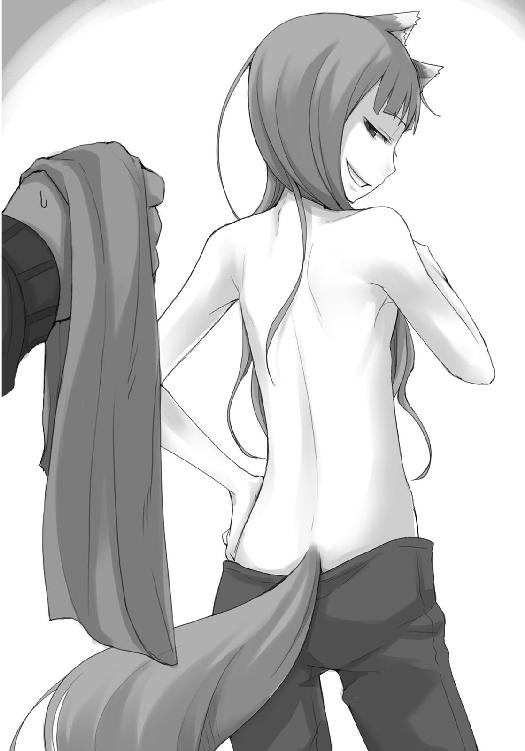
ホロにすれば裸を見せることなどなんともないのだろうが、ロレンスがそうは思わないことを熟知しているのでたちが悪い。
人が紳士たらんとするところにつけ込むなど言語道断。
ロレンスは動揺してしまったことにそんな言い訳をつけ、受け取った手ぬぐいを無言で丸めると、子供のようにホロに向かって投げつけたのだった。
コルの作った薬は、やはり奇跡かと思うほどの効き目だった。
ホロはまだ多少体にぎこちなさが残っているらしいが、軟膏を塗ってほんのわずかな時間しか経っていないことを考えれば信じられない効き目だろう。
ロレンスの顔の怪我もほとんど腫れが引いていた。
ただ、「ぬしのほうはどんなものかや？」と手を伸ばしてきたホロに突然つねられたせいで、幾分赤みが増しているような気がしないでもない。
目から火が出るかとも思ったが、そんな意地悪をしておきながら、なおホロの顔が不満げに怒っていたので反撃はしなかった。
手ぬぐいを丸めて投げつけたのが、かなり腹に据えかねていたらしい。
ただ、それがどうやら演技には見えないので、もしかしたら本心から拭いてもらいたかったのかもしれない。
そう考えると悪いのは自分のような気もするので、ロレンスはなんともしがたい気分だった。
「で、今から行く商会がたわけたことを企んでおるのじゃったかや」
とりあえずわかりやすい道に出ようと、川沿いの市場のほうへと歩いていく。市場ともなれば露天商は必ずあるし、なにかねだられることはもちろん覚悟していた。
しかし、ホロが鼻をひくひくとさせるや、一目散に一軒目の露天商に足を向けるとは思わなかった。
軽い頭痛に似たなにかを感じながらそんなホロを目で追いかければ、その先にあるのは焼いた石の上でぶくぶくと泡を立てて火あぶりになっている巻貝だった。
「企んでいたかどうかを今から確かめに行くんだが、エーブの話では、企んでいたという可能性は高そうだ」
ホロは話を聞いているのかいないのか、目を輝かせて無言の催促。
駄目だ、と言ったところで聞く耳など持たないだろうから、無駄な労力は省くことにした。
ナイフで楊枝を削っていた店主に黒ずんだ銅貨を一枚渡すと、その削りたての楊枝で器用に貝から身をほじくり出し、あっという間に三つほど串刺しにしてしまう。
そして、それを三人分。
やけに安いなと思ったら、貝に魅力的な味をつける塩が有料だった。
ロレンスは抜け目のない店主に笑顔で恨み言を言いながら、ジーン商会の場所を聞いておく。
情報料で元を取っておかなければならない。
「行って、話してもらえるでしょうか」
貝の身を受け取って礼を言ったのはコルだけだ。
もちろん、エーブとの関係の誤解はすでに解いてある。
「それは、エーブの言ったとおり。俺の才覚しだいだろう」
「当てにならなそうじゃな」
ホロに茶化されるが、コルが困ったように笑っているので、ロレンスは道化になっておいた。
「じゃが、それにしても同じ町でこうも違うのかや」
と、対岸の様子を見ながらホロは言った。
ロレンスたちが宿を取ったのは、ローム川の河口に位置し、川を挟んで北と南に分かれた港町ケルーベの北側の町だ。
市場や立派な建物はやはり川沿いに集中しているようで、さすがにこの辺りはそこそこに賑やかだったが、それも宿の周りと比べると、という意味に過ぎない。
川沿いの大通りから少し行くと石ころの目立つ川岸がある。河口ということで岸辺はかなり広く、水はかなり先にあった。視線を右手に向けると、その先は海になっていて、ロレンスの鼻でも潮の匂いを感じ取ることができる。川を挟んだ向こう側には南の町があり、その手前には、大きな三角洲の上に築かれたケルーベの港町最大の市場があった。
三つに分かれた町の中でどれが一番賑やかかというと、言うまでもなく三角洲。では、立派な建物が立ち並んでいるところはどこかというと、南側の町。
ロレンスたちが立つ北側の町は、やはりどこかくすんだ印象を受ける。
南側の川岸に停泊している船の数や、市場に積み上げられている商品の数も、かなり距離を開けているのでぼんやりとしか見えなかったが、それでも川を渡った向こう岸のほうがはるかに多いような気がする。
一つの町の中でも場所によってはまったく空気が違うということはままある。川を挟んでしまうと、それこそ別の町になるのかもしれない。
「あっち側に渡ればローエン商業組合の商館があるはずなんだ」
「ぬしの故郷の商人連中が集まる場所だったかや」
「ああ。ただ、その別館みたいなものが三角洲にもあるから、本館には行ったことがないんだけどな」
ロレンスが指を差した、川が海へと流れる際にある三角洲の町。
町という表現が正確かどうかはわからないが、商人からするとそこは完全に一つの町だった。
今ここから見てみても、二階から三階建ての、潮風に晒され灰色がかった色合いの建物が猥雑に乱立しているのがわかる。
風の具合によっては、それこそそこの喧騒が風に乗って聞こえてきそうな感じだ。
ホロならば、フードを取ればそこでどんな騒ぎが起こっているかわかるかもしれない。
「あっちのほうが賑やかそうじゃな。行ってみんかや」
「食い物目当てだろう？」
ロレンスが言うと、ホロは子供のようにふくれっ面をした。
どうせあとで連れていってもらえると確信しているわざとらしさだ。
ロレンスは、わかってますよとばかりに肩をすくめて歩き出そうとして、ふと足を止めた。
さっきから静かだったコルが、貝を食べるのも忘れて洲のほうを見ていたからだ。
「どうした？」
そう声をかけると、コルは弾かれたように振り向いた。
「あっ......いえ、なんでも──」
「なんでも？」
ホロは言いながらコルの手から楊枝を奪い、二つ残っていた貝のうちの一つを食べてしまった。
「噓が下手な罰じゃ」
そして、残る一つに牙を突き立てようとして、視線をコルに向ける。
「なにか言うことはないかや？」
仔に過酷な試練を与える獣は多いと聞くが、狼もそうなのかもしれない。
つい、そんなことを思ってしまった。
ただ、素直に物をねだれなかったのはホロだって同じだ。
出会ってすぐに立ち寄った町での、ホロの無様な林檎のねだりようは今でもはっきりと覚えている。今ではすっかりあんな様子を見せてくれなくなったが、コルに有無を言わせない勢いなのは、幾分かはそんな以前の自分を思い出しているからかもしれなかった。
「あ......あの」
そして、コルは年若いながらも、少年だった。
「三角洲に行きたいです」
ホロとは違い、きりっとロレンスのことを見て言うのだから立派なものだ。
ロレンスはホロの手から楊枝を奪って、コルに渡してやる。
ついでに、「お前より立派だったな」と言ってやると、足を蹴られた。
「お前は俺の弟子じゃない。だから、お前が俺たちに軟膏を作ってきてくれた分のお礼はきっちりさせてもらう。覚悟して、ずうずうしく振る舞うことだ」
妙な言葉だが、コルにはそんな表現がぴったりだろう。
生来の素直さと性格からか、放っておいたら弟子よりも弟子らしくしかねない。
世の中お人好しばかりではないとわかっている分、そんなコルを見ていると心配になってしまう。足元を見てつけ込もうと思えば、いくらでもつけ込めそうだからだ。
「......わかりました」
コルは困ったように笑いながら返事をする。
きっと、ロレンスとホロが心配していることも理解したうえで、そう答えているのだろう。
笑い話でよくあるものだ。
心優しい主人が、従順にして誠実な奴隷に自由を与え、お前は今後は誰に仕えることもなく自由に生きていくのだ、と言いつける。すると奴隷は主人の言いつけをいつまでもきっちりと守り、その後誰に仕えることもなく生きていった。
最後まで主人の言いつけを守ったこの奴隷は、果たして本当に自由だったのだろうか？
もしかしたらコルが困ったように笑っているのは、まさしく自分がこの笑い話の奴隷と同じだから、と思っているのかもしれない。
「だが、こう言っておいてなんだが、今すぐにというわけにはいかない。商人はせっかちだから、先に用事をすませないと気が気じゃないんだ」
「はい。でも......」
コルは答えて、それから恥ずかしそうに頭を搔いた。
「楽しみにしています」
もしもホロがこんなふうに素直だったら、と思ったが、ホロのほうは見なかった。
視界の隅で、笑っていない笑顔のホロがよく見えたからだ。
「この町に来るのは三度目ですが、実は、一度も行ったことがなかったんです」
「渡し賃がかかるからか」
こくり、とうなずいた。
三角洲に上がる渡し賃も払えないのに、どうやってコルはローム川を渡ったのかと聞きたいくらいだ。
妙なところで思いきりの良いコルのことだから、きっと服を頭にくくりつけ、この寒い中泳いで渡ったのだろう。
「で、俺は南のほうに行ったことはないんだが、そっちはどうなんだ？」
三人で歩き出し、コルが残った貝を食べ終わってから、ロレンスはそう訊ねた。
「南のほうが......町は綺麗です」
やや間をあけたのは、少し辺りを窺っていたからで、その声も小声だった。
やはり、川べりだけとってみても南と北では歴然とした差が存在する。
北側は異教の地の者が多く、南は南から来る商人や正教徒たちが多い、というのも関係しているのかもしれない。
商人の中では南の連中のほうが圧倒的に金持ちが多く、また金は金のある場所により多く集まる仕組みになっている。
「でも、施しを多くくれるのは、こちら側です」
「ほう。北側のほうは北の生まれの人間が多いと聞くが、そういうことなのかな」
「だと思います。ロエフの生まれの人も多いですし。でも、そうでなくとも、こちらの人たちのほうが優しいような気がします」
ロレンスは鼻の頭を搔いて、少し返答を考える。
北と南の対立は、人と狼と同じくらい微妙なことだ。
「気候の厳しいところは、人が優しくなるからな」
ロレンスが答えると、コルは笑顔で大きくうなずいた。
必要とあらば南の地に一人旅をして教会法学を学びに行くような、そんな柔軟な発想をできるコルであっても、南の人間たちと比べられて北の人間を褒められれば無邪気に喜ぶのだ。
ロレンスは、それを改めて実感して、どうしてこの町最大にして貿易の中心である市場が三角洲の上にあるのかわかるような気がした。
あそこは北と南の緩衝材。
あるいは、中立の場所なのかもしれない。
「でも」
と、ロレンスが歩きながら三角洲に目を向けていると、コルがそう言葉を向けてきた。
「南の人たちは、いつも楽しそうです」
コルに気を遣われてしまった。
ロレンスはやや驚きながら、ゆっくりとその顔を笑みに変えた。
「暖かいと酒が作りやすいからな」
「あ、なるほど」
もう少し年を経れば、コルはさぞ清々しい好青年になるに違いない。
ロレンスはそんな安易な予想を否定することができない。
それに、それはきっとホロも同じことだ。
にこにこしながらコルの手を取って歩いているのは、もしかしたら将来を見越しての投資活動かもしれない。
そんな冗談とも嫉妬ともとれる痛がゆいことを思っていると、ホロがフードの下からちらりと流し目を向けてきた。
うかうかしていると本当に乗り換えるぞ、と言いたげな意地悪な笑みをまぜた目だ。
ロレンスは顎鬚を撫で、小さくため息をつく。
ついたため息は、喉から一瞬出そうになって、危うく飲み込んだ言葉だ。
釣った魚には餌をやらないつもりだったのに。
そんな憎まれ口をホロに向けたかったが、やめておいた。
そんな憎まれ口を叩くようでは、まさしくコルに負けかねないと思ったからだ。
一回りも年が離れている少年相手になにをやっているのだか、とロレンスは冷たい空気を肺一杯に吸って、一人無言で笑ったのだった。
ロエフと呼ばれる山々から流れ出たロエフ川が注ぎ込むローム川と、そのローム川が流れ込むウィンフィール海峡。
ロエフ川の最上流に鉱山の町レスコが、ロエフ川とローム川との合流地点にはレノスが、そして海との境目には港町ケルーベがある。
そんな川の流れの最下流に位置するケルーベにあり、上流から運ばれてくる銅製品についての取引を任されている商会となればそれ相応の規模の商会に違いない。
そんな先入観と、ある種の気負いがあったからかもしれない。
ジーン商会の前に到着し、少し拍子抜けしてしまったのは。
「ここかや？」
ホロも、なんとなく肩透かしを食らったような顔をしている。
吹けば飛びそうな店構えじゃな、とでも言いたげな顔なのは、実際に気に食わなければ狼の姿に戻って店ごとぶち壊してやる、とでも思っていたからかもしれない。
鉄で作られた長方形の板に、ジーン商会と打刻された看板が軒先にぶら下がっているそこは、通りに面した場所が荷揚げ場になっていて、一応商品がうずたかく積まれていたりはする。
しかし、そこで荷を積まれたり、つながれたりしているのは、どれほど雪深い山であっても少しも怯まずに前に突き進めるといった毛の長い馬でもなく、小さな村であれば全ての世帯の家財道具を一切合財運び出せそうな大きな荷馬車でもない。
軒先では、冬場の飼料用なのだろう、燕麦の藁束を積まれたやせ細ったラバが、出発を待って暇そうに欠伸をしていた。
商会と名がつくだけでそこに金と権力を見てしまうらしいコルだけが、そんなのんびりとした店構えのジーン商会を前に、今まさに戦いに臨まんとするような顔をしていた。
「どちらさんかね」
と、荷揚げ場の奥にある帳場でなにか書き物をしていた小太りの初老の男が、軒先に立つロレンスたちに気がついて顔を上げた。商会の中にはその男以外には他に誰もおらず、放し飼いになっている鶏が床の落穂をついばんでいるくらいだった。
「買い付けならば大歓迎。ただ、なにかを売り付けに来たのなら......無駄足だったかもしれない」
椅子から立ち上がりもせず、少したるんだ頰をつり上げて自嘲気味に笑う様が、なんとも疲れた印象を与えてくる。
ホロはその様子に、えらく不満げな視線をロレンスに向けてきた。
自分の仲間かもしれない狼の骨を、信じられないような目的のために金銭で売買しようとする連中の一派であるジーン商会。
彼らは牙を剝いて憎むべき相手であり、そして、それほどの憎むべき相手であるのだからその憎しみに見合った強大な商会でなければならない、といった感じだ。
コルだけが相変わらず、そんなどこか疲れきった男の様子を、威厳と勘違いしているらしかった。
ただ、もちろん商会の大きさと中に収まる人間の質はいつも比例するわけではない。
蛇穴に手を突っ込んだら、竜が出てきた話はいくらでもある。
「そんなに景気がよろしくないですか」
ロレンスは答えて、一歩荷揚げ場に踏み込んだ。
おそらくはここを行き交った大量の麦藁の残りなのだろうが、藁が床にちらばっている様子はどことなく田舎の村の軒先を思わせる。商会らしく一応あれこれ品が置かれてはいるが、どれもぱっとしないものばかりだ。
「んっふ。お前さんは南の商人さんかな。南は景気が良いかね」
隅のほうに武具が折り重なって置かれていた。
もう長いこと在庫として放置されているらしいのを見て、武具で失敗した身としては、ちょっとした慰めになる。
「良くもあり、悪くもあり」
「ここは悪いよ。最悪だ」
お手上げだ、といった感じで両手を上げ、男はそう言った。
ロレンスに続いてホロとコルも荷揚げ場に入り、きょろきょろとあちこちを見回している。
そして、ホロが不意に床に積もっていた藁をひょいと足で持ち上げると、下から鶏の卵が二つ出てきた。
「おや、そんなところにも卵があったか。あっちこっちに卵を産むから探しきれなくてね。あとで拾っておかないと......。そう。今年はこの地方の鶏の数が激減してね。まったく静かなもんだ。毎年この時期になれば雄鶏と雌鳥がそりゃあ賑やかだったんだが」
「北の大遠征の中止ですね？」
「そう。人が来なければ金も来ないし、人は動かなければ腹も減らさない。農作物の値は下がり、樽や桶を始めとした加工品、それに毎年飛ぶように売れる武具も売れず、そんな塩梅だから酒の値段だけは上がりに上がる」
「ふむ？」
ホロが不思議そうな声を上げた。
帳場の机の向こうで、太り気味の男は不器用に肩をすくめる。
「やることがなければ飲んだくれるしかないだろう？」
ホロはその言葉に大いに納得したようだった。
「で、二つもこぶをつけた商人さんは、どんな儲け話をここに持ってきてくれたのかな」
「こぶ？」
ホロが少し不満そうにフードの下で呟いた。いつものように修道女然とはしていられないのかもしれない。事前によく言い含めておくべきだったかもしれないなと思いつつ、ロレンスはそれをそっけない顔で制した。
「ジーン商会の主の方にお会いしたいんですが」
「ん、そりゃあ私のことだ」
もちろんそうだろうと思っていたので、特に驚くこともなくロレンスはうなずき、前に進み出るとエーブから預かった親書を帳場の机の上に置いた。
「おっと、こりゃあ失礼。ボラン商会のお知り合いか」
「ボラン商会？」
エーブが商会を構えているというのは知らなかったし、ちょっと意外な気もした。
一匹狼という言葉があれ以上あてはまる者もいないだろう、という思い込みもあった。
ただ、その言葉にジーン商会の主はおかしな顔をしなかった。
代わりに、つい軽口が出てしまった、といったばつの悪そうな顔をした。
「看板も掲げず一人で商売を営んじゃいるが、あれだけあちこちに網を張り巡らせていれば、もう立派な商会だろう？」
ジーン商会の主はエーブからの親書を開けながらそう同意を求めてくる。
ロレンスはエーブがどこまで影響力を持つ人物なのか量りかねているが、つい最近エーブと知り合ったばかりということを相手に知られてもいいことは一つもない。
曖昧な笑みを浮かべてうなずくと、相手は勝手にその先を想像して、笑っていた。
「ん......クラフト・ロレンスさん、か。ほっほう。あの狼からこんな書状を渡された男が来るとは思わなかった。一体どんな弱みを握ったんだね？」
ついさっきまで冴えない商会の腑抜けの主といった風情だったのに、左眉だけを異常につり上げて睨み上げてくるその様はなかなか堂に入っている。
ただ、その顔は、ロレンスを脅そうとか、自分の威厳を増して見せようとか、そういったことでは決してないのだろう。純粋に面白そうな顔をしているだけで、その顔が、おそらくはもっともこの商人を手ごわい商人に見せる顔なのだ。
ロレンスは、相手の評価を付けなおして、こちらも純粋に面白い商人に出会えた喜びを顔に出して、肩をすくめた。
「秘密です」
「ふはっはっは。そうかいそうかい......それで、どんなご用かなと......」
喋りながら視線を紙の上に滑らせていく。
ロレンスは、直後に主の頰がびくりと引きつるのを見逃さなかった。
そこに書かれているのは神と崇められた狼の骨を巡る話に関するもので、まともな商人であれば大笑いしながらぶどう酒を用意する類のものだ。
ただ、ジーン商会の主は思い出し笑いをするように肩を揺らしながら、丁寧に親書を丸めて馬の毛で封をしなおした。
「なるほど。この話に興味を示す者は久方ぶりだ。それもエーブ・ボランを通してわざわざ聞きに来るのだから......まあ、遊びではないのだろう」
「恥ずかしながら」
ロレンスが笑顔で答えると、男は再び笑い、その笑顔には二つの表情がまざっているように思えた。
一つは、こんな馬鹿な話を大真面目に聞きに来る商人がいるのかというもの。もう一つは、以前は自分がしたくても誰も聞いてくれなかった昔話を、今になってせがまれて困惑している老人の顔だ。
ロレンスは、後者のそれに気がついて胸の内に妙なものを感じた。
ただ、男の顔からそんな笑顔はすぐに消えた。
「しかし、こんな戯言を聞きに来るために、わざわざあの狼に親書を書かせるような男は偉大な男に違いない。脇に連れているこぶ二つも、なるほど、よく見ればなかなか油断がなさそうだ」
「我々は参事会の席に座りたいわけではありませんので、どのように見えるかよりも、なにができるかに重きを置いています」
「我が商会に訪れた商人クラフト・ロレンス。それは正しい言葉だ。私はきちんと名乗らねばなるまい。私がジーン商会の主、テッド・レイノルズだ」
その名は、ロレンスたちがローム川を下る途中、あれこれ頭を悩ませた紙に書かれていたジーン商会の帳簿をつけていた人間の名前だ。
名前からしてもっと若い男を想像していたのだが、実物は想像していた年齢を倍にしたくらいだった。
「ジーンとは私の父親の妻の名でね。愛妻家だったのだ」
「それはそれは」
「いや、その名を冠することで他の取引相手が震え上がったのだから、恐妻家だったのかもしれないな」
指を一本立て、気障な貴族のように片目を閉じて笑って見せる。
その様はなんとも不釣り合いでありながら、奇妙な愛嬌を持っていた。
油断ならない商人だと思った。
「それで、私に聞きたいことというのが、またおかしなことだが」
「ええ。世の中にはおかしなことをする人がいますから」
「ああ、まったくだ。よっ......こらせと」
レイノルズは相変わらず億劫そうに体を持ち上げると、「待っていたまえ」とだけ告げて帳場から奥に引っ込んでしまった。
あとには放し飼いの鶏だけが残り、ココッココッと鳴きながらコルの草履の毛羽立った場所を突ついている。
コルは必死に追い払おうとするが鶏は容赦しない。
ホロはしばらくコルと鶏のやり取りを楽しそうに眺めたのち、鶏に向けて牙を見せた。
すると、飛べない鶏がそれこそ飛んで逃げていった。
「お待たせした......おや」
逃げ出した鶏が飛び散らせた細かい羽が床に落ちる間もなく、奥から木箱を抱えたレイノルズが戻ってきた。
目端の利く商人でなくとも、なにがあったのかは楽に想像できる。
「悪いね。うちの鶏はどういうわけか毛羽立ったものに目がないんだ」
「この寒い時期ですから。指先を隠しておきませんと」
ロレンスが答えると、レイノルズは大声で笑い出した。
「うはっはっは。ちょっと想像すらしたくないな。指のささくれをついばまれたら、明日産む予定の卵もろとも鍋にぶち込んでやらなければ」
コルがさりげなく自分の指先をさすっているのに笑いながら、ロレンスはレイノルズが帳場の机の上に置いた木箱に遠慮のない視線を向けた。
「それは？」
「うむ。これはだな」
と、ためらいもせずに蓋を開けると、ロレンスはさすがに一瞬身構えた。
その箱の中には、動物の骨がびっしりと詰まっていたのだ。
「うちが山奥の寒村の神の骨を、信じられない高値で探しているという噂にありがたくも協力を示してくれた親切な人たちの努力の結晶だ」
もったいぶった言い回しは、ほとほとうんざりしているといった様子を表現するにはぴったりだったが、どこまで本気かはわからない。
もっとも、噓をついているのであれば、あとでホロに訊ねればいい。
「それらは、本物で？」
「だったらいいのにな。この商会の有様を見てわかるだろう？ 別にこの私が欲を搔いてこれらの骨を買い漁ったわけでもないのに、今にも店は傾きそうだ」
店が傾きそうだというのは噓に違いない。この店は少なくともローム川の上流から流れてくる銅貨の中継を請け負っているから、見た目以上には儲かっているはずだ。
しかし、その投げやりな様子までもが噓とは思えない。
その目には純粋な子供のように疑問の色を浮かべていた。
「なぜ、今更こんな戯言を？」
確かに、戯言と言われても仕方のないことだ。
「エーブさんにも同じことを言われましたが、実は、この二人が北の生まれでして」
「ん......」
と、レイノルズは軽く目を見開いた。
自分はひどい思い違いをしていたというような、そんな顔だ。
「なるほど、そうか......。うん......それは、私が軽率だった。悪く思わないでくれ。私は別にこの馬鹿げた話に対する軽蔑の気持ちを、君たちの神にまで向けるつもりはない」
鼻をこすり、掌を広げたレイノルズは、教会で神に宣告するかのように、そう言った。
二人が北の生まれである、というだけで全て合点がいくくらい、この地はロエフの山に近い、というわけだ。
そして、レイノルズが北の人間を尊重していることもよくわかった。
「そういうことなら、私は協力するのにやぶさかではない。この話は実際、馬鹿げた話なのだ」
レイノルズは目まぐるしく雰囲気の変わる男だ。
そう言って話し出した途端、ここが傾きかけている商会の荷揚げ場であることを忘れ、町の参事会の議事堂ではないかと錯覚しそうだった。
「ロエフの山奥には、教会が見過ごせない伝説がいくつも残っている。そのうちのいくつかはあまりにも信憑性がなく、そのうちのいくつかは疑うのが難しい。君たちがどの辺りの生まれなのかはわからないが、少なくとも、とある村にいた狼の神の骨と言われて、それに心当たりがあるような場所に住んでいたわけだ」
「ルピの村、ですよね？」
コルが口を挟む。
その真剣な様子は、つい今しがたまで、鶏に草履をついばまれて泣きそうになっていた少年と同じとはとても思えない。
「そう。その村の名を知っていて、この話を追いかけてきたということは、君は運良く命を失わずにすんだ少年か、あるいは、世の理不尽を見聞きした少年に違いない」
ルピの村は剣を携えた宣教師によって制圧され、数多の人間が殺されたとコルは言っていた。
レイノルズの言葉に、コルは、ぎゅっと拳を握り締めながら、うなずいた。
「その隣のお嬢さんが、北の生まれだというのに教会の修道女に見える格好をしている理由も、私は聞きたくない。商人は金を墓の中に持っていくことはできないが、思い出は持っていくことができてしまうからね」
そう言って、レイノルズはなんとも皮肉な笑みで顔半分を引きつらせた。
ホロも少しだけ笑う。
できることなら墓の中に行くまでずっと美しく清らかなことだけ見聞きしていたいと思うのは、それこそ軽く笑ってしまうような願望だとわかっているからだ。
「それで、ルピの村の神様の話だ。一昨年の夏も終わる頃だったろうか。あの頃は宣教師と傭兵の集団が北の山や平野を元気に駆け回っていた。どこの村がどうなった、とかいう話は珍しくなかった。そんな中で、うちと懇意にしている商会が嚙んだ話が一つだけあった。いや、嚙まざるを得なかったというべきか」
「デバウ商会、ですか」
こちらがなにも知らないで話を聞きに来た、と思わせておくと、話を面白くするために、あるいは大きく誤魔化すために噓をつかれるかもしれない。
だから、牽制として、まったくの無知ではないことを知らしめておく。
レイノルズは、その牽制に気がついて、少しだけ笑った。
「んっふ。ボラン家の女狼から親書を持たされるような商人に噓はつかない。私はあの女狼を尊敬している。だから、あれが信用した商人であるクラフト・ロレンスにも敬意を払う」
笑っていない笑顔は、怒っているようにも見える。
しかし、ロレンスは自分が失言をしたとは思わない。
これは、二人の商人の間で遊びの規則を決めるような儀式に近いからだ。
「お話に口を挟んで失礼しました」
「いや、私も一人だけ喋らされると、ついつい長広舌になってしまうからね。あなた方がまったくの無知でないのなら、要点のみを話すべきだ」
レイノルズは咳払いをし、少し居住まいを正す。
その目は壁に向けられ、目の焦点は記憶の中に向けられた。
「デバウ商会はあれこれの関係のせいで逆らいがたい教会のとある一派から、こんな相談を持ちかけられたという。我々が北の山に確認しに行った異教徒の伝説の中に、他の荒唐無稽なものとは違うものがあった。そこには形があり、実があった。だとすれば、世に存在するあらゆるものを商う諸君らであれば、その形ある実を探し出すことができるのではないだろうか、と」
実際は相談というよりも、命令に近いものだったに違いない。
それを敢えてこういう言い方にするのは、暗に教会に反感を持っていることを示そうとしているからだろう。
「我々が錬金術師に不可解な印象を持ち、怪しげな彼らならなんでもできるだろうと思ってしまうように、我々が行っている商売を怪しげで不徳ななにかだと思っている教会の方々は、我々がなんでもできるものだと勘違いしているらしい。だが、商売をしていれば断りきれない依頼というものは多々あるものだ。そして、そんな依頼は、常に川上から川下へと降りてくる」
「まったくそのとおりです」
ロレンスが相槌を打つと、レイノルズは満足そうにうなずいた。
皇帝が宮廷の商人に、宮廷の商人が彼の支配する商会に、商会がその支店に、その支店の責任者が市井の商人に。
恭しく皇帝の謁見の間に献上される品々だって、元をたどれば銅貨一枚のやり取りにしのぎを削る商人がもたらしたものであることなど珍しくはない。
ただ、命令は上から下に、品物は下から上に行くが、その逆はないというだけのことだ。
「そして、我が商会は偉大なる川の精霊ロームが治めるローム川の最下流に位置する。上からどんぶらこと流れてきた命令には是が非でも応えなければならない。それこそ」
たるんだレイノルズの頰が、今日この日のこの瞬間のためにその頰をたるませてきたとでも言わんばかりに、ぶるん、と揺れた。
「金に糸目をつけないくらいに」
ロレンスはうなずき、机の上に置かれた木箱の中にぎっしり詰まっている、たくさんの骨に目をやった。
普通、どこかの商会がどの商品を探しているといっても、こんなにたくさんの商品が送りつけられることなどない。
それが、おそらくは犬や猫や羊や牛や豚の骨だろうが、こんなにもたくさんこの商会に骨が集まってきたのは、ジーン商会がこの町でこの骨を探すという行為がまともな商売上のことではないと皆わかっていたからだ。
まともな商売であれば、まともな商品でなければ対価は支払われない。
しかし、まともな商売でなければ、まともでないものにだって対価が支払われるかもしれない。
それこそ、ジーン商会と、その上にいるデバウ商会が、元々の命を下してきた教会の連中を納得させられるような代物であれば、万が一に金を支払ってくれる可能性がある。
骨などいくらだってどこにだってある。
ちょっとしたその可能性に賭けるのは、悪い賭けではないだろう。
いい迷惑なのは、その賭けの臨時の胴元である、ジーン商会だ。
「ま、当時はこんなお祭り騒ぎになったわけだ。もしも本物を見つけたら、支払われる対価はリュミオーネ金貨にして千枚とも二千枚とも言われていたからね」
「それで」
と、レイノルズが自嘲気味に笑ったところに言葉をつないだのは、コルだ。
「それで、骨は、見つかったのでしょうか」
レイノルズの目が、たるんだ瞼の下で純粋なガラス玉のように感情を込めないものに一瞬だけ変わった。
その質問の仕方は、商人のやり取りの規則から逸脱する無粋なものだ。
ただ、すぐにそのガラス玉は、帳場の机の前でのんびりと客が来るのを待ち、鶏が落穂をついばむのを眺めるのに相応しいものに変わった。
商人ならば、無粋な発言に怒ることはしない。怒る代わりに、それに相応しい対応をするだけのこと。
要するに、商人としての話はここで終わりだ、ということだ。
「んっふ。もしも見つかっていたら、私は今頃金の机に座っているよ。もちろん、当時は私がとっくに骨を見つけ出して大儲けしたという話が乱れ飛び、何度か脅迫されもしたがね。しかし、少し考えればわかりそうなものだ。一体どこの誰が、そんな大量の金貨を、どんなふうにして人目につかず払ってくれたのだろうね？」
からかうような物言いなのは、実際に馬鹿げたことだからだ。
金貨で千枚もこの商会に支払われたら、商売をしている者であればたちどころに金の動きに気がつくはずだ。
山を動かせば、たとえ深夜にこっそり動かしたとしても翌朝に皆が気がつくのと同じこと。
隠しようのないことといえる。
コルはなんとなくだろうが、そのあたりのことを察したらしい。
残念そうに、うなだれるようにうなずき、質問に答えてくれた礼を言った。
その瞬間、レイノルズの目がぱちくりと開いたのには、ロレンスも笑ってしまった。
質問の仕方そのものは商人として最低な無粋なものであっても、質問したあとにきちんと礼が言える礼儀正しさは、鞭で尻をひっぱたいてもなかなか弟子が覚えないことの一つだからだ。
商会の帳場に億劫そうに座ってはいるが、レイノルズの商人としての目利きはなかなかのものに違いない。
だから、商人の視線をロレンスに向けてきた。
「ロレンスさんはよいお弟子さんをお持ちのようだ」
獲物を狙う鷹の目。
大袈裟な物言いではないはずだ。
「弟子ではありません」
「なんと」
レイノルズは信じられない、といったふうに大仰に驚くと、視線をコルに向けたのでロレンスはすかさずこう言った。
「未来の教会法学博士です。商人の弟子などと言ったら、私は天の国の門をくぐり抜けることができなくなってしまいます」
その時のレイノルズの顔を、なんと表現したらいいだろう。
こんな顔をするくらいホロの意表をつくことができれば、きっとロレンスはたちどころにホロの手綱を握れるに違いない。
それくらいレイノルズは驚いた顔をして、してやられたとばかりに自分の額をぴしゃりと叩いた。
「うむむむむむむ。北の地の生まれであり、教会法学博士の卵であり、そして故郷の神の話を追いかける......。なるほど、さすが女狼から信頼を勝ち得た商人だ。なかなか複雑そうにして、そして、なによりも羨ましい旅をしていらっしゃる」
人脈や権力の構図に聡い商人には、教会法学博士の卵というのは金の卵に見えるに違いない。しかも、それが将来有望であるかどうかも立ち居振る舞いからある程度判断できるもの。
眼鏡に適った者であればいつでも投資したい。
そんな感じがひしひしと伝わってきたが、ふとレイノルズは視線をホロに向けて、それから、ロレンスに向けてきた。
「それでは、こちらも、どこか名のある修道院の？」
獲物を狙う鷹のような目でコルのことを見ていたことにもちろんホロも気がついていたはず。
しかし、レイノルズはそんな目をホロには向けなかった。
ロレンスにこんなことを聞いてきたのは、ホロを無視するのが悪いと思ったか、あるいは、ちょっとした世間話のつもりだろう。
そして、ホロがそんなないがしろな扱いで満足するはずがない。
では、自分の価値をどのように高めればいいか。
そんな計算だけは、本当に商人顔負けに速い。
ホロはレイノルズの言葉を聞くや否や、すっとロレンスの後ろに隠れ、ぎゅっと服を摑んできたのだ。
まるで、人見知りをする少女のように。自分の庇護者はロレンスであると主張するように。
神が所有しているものですら手に入れようとするのが商人だから、人が所有しているものであればなおさら欲しくなるのが商人の本能といえる。
効果は抜群だった。
「んはっはっはっは」
レイノルズは大笑いし、ロレンスは、それでホロがロレンスの陰から少し顔を覗かせ、意地悪そうに笑っていたのだと気がついた。
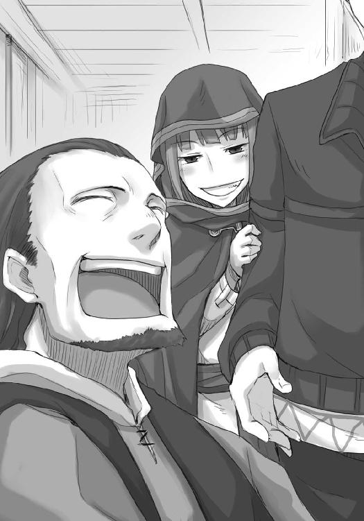
言葉に出さない二重三重の心理戦。
レイノルズが大笑いしたのは、自分が一杯食わされたと即座に気がついたからだ。
「素晴らしいお客さん方だ。いかがだろう。もうすぐ昼時だから、我々が出会えたことを祝って食事でも」
ロレンスとしても、その提案は嬉しい限りだ。
レイノルズとの会話は、とても刺激に満ちている。
「よろしければ是非」
「素晴らしい幸運だ。ではさっそく使用人を呼んで料理でも作らせよう。ただ......」
と、レイノルズは視線をロレンスたちの背後、ジーン商会の荷揚げ場に向けて、こう言った。
「そのためには元気な鶏が一羽必要なのだが、ところが今日に限って鶏が一羽もいないらしい」
「あ！」
コルが声を上げ、ホロが目をそらした。
コルの草履をついばんでいたところを、ホロが狼すら尻込みする強烈な視線で追い払ったので、荷揚げ場から鶏が一羽もいなくなっていたのだ。
「もしよろしければ、我が隣人を食事に呼んできて欲しい」
いたずらを楽しむ子供のように笑うレイノルズに、コルは慌てて、ホロは渋々と鶏を追いかけたのだった。
鶏とぶどう酒。
生きるのに必要なものがパンと塩であるのなら、こちらは人生を楽しむのに必要なもののうちの二つかもしれない。
それも思いがけずありつけたご馳走であればなおのこと。
ホロはレイノルズの「遠慮なく」という言葉を聞くまでもなく食らいつき、コルは教会法学博士の卵らしく教会流の礼儀正しさでご馳走に与っていた。
狼の骨の話をすんなりと聞き出せた挙句、こんなご馳走を振る舞ってくれるなどずいぶん豪気な人なのだな、と思っているのはコルだけだろう。
食事の席では、他愛のない世間話に織りまぜて、二年前の狼の骨を巡る騒ぎが最高潮だった時の笑い話や、その後の話がしぼんでいく過程まで詳しく聞けた。
ただ、商人はいつだって対価を求めるものだ。
ロレンスはその対価が気になっていたが、それは別れ際にわかることになった。
レイノルズから、握手を求められたのだ。
「エーブ・ボラン氏によろしく」
ロレンスは右手を、がっしりと両手で握られた。
しかも、その目は明らかに商人のそれ。
きっちりと狼の骨の話をして、なおかつご馳走まで振る舞ったのだからしっかりと客人はもてなしましたとエーブに伝えてくれ、ということなのだろう。
その目的は、エーブと懇意になって、商売をさらに拡大させることだろう。
しかし、レイノルズが構えるジーン商会は見た目こそよくないが、鉱山の利権をがっちりと握っているデバウ商会と懇意のはずだ。
そんなレイノルズがエーブの覚えをめでたくしたところでそれほど益はないように思える。
それとも、エーブがそれほどの人物なのだろうか。
気になるところは多々ありつつも、受けたもてなしに対する返礼はしなければならない。
ロレンスはレイノルズにしっかりと返事をして、ジーン商会をあとにした。
ロレンスたちが商会に来た当初は少しだって椅子から立ち上がりたくなさそうだったレイノルズが、軒先にまで出て見送ってくれた。
「さて」
と、ロレンスは一人ごちる。
目的はあっさりと達成できた。
ただ、レイノルズとのやり取りの中、要所要所でなにかがちぐはぐな気がしたのは否めない。
ジーン商会の店構えも、ロレンスがエーブから受け取った親書をレイノルズに渡した時も、また、つい今しがたの別れ際のレイノルズの行動も。
それが直接狼の骨の話に続いている、というわけでもないのだが、商人の行動はいつだって意外なところにつながっている。
ロレンスは、黙考しながら軽く顎鬚をつまんでいた。
「で、どうするのかや」
しかし、ロレンスの物思いはホロのそんな言葉で中断された。
そして、ホロの顔を見た瞬間に、先ほど振る舞われた鳥料理のことを思い出してしまった。
振る舞われたご馳走は、鶏の腿肉をゆでたあと、酢に香草のみじん切りと芥子種をすりつぶしたものをまぜたソースをかけた逸品だった。
それがどれくらい素晴らしかったかというと、ホロの口の端にみじん切りにされた香草のかけらがくっついていたくらいだ。
ロレンスが指で香草のかけらを取ってやると、ホロは少しうるさそうに片目を閉じる。
ただ、それが自分を子供扱いするな、と照れ隠しに怒っているものではないことがすぐにわかった。
ホロは、そんなふうに顔を背けるや、コルに軽く目配せしていたのだ。
コルが驚きながら、どこか感心するようにうなずき、それを見てロレンスはため息をついた。
ロレンスがホロの口についた香草を取るかどうか、ホロはコルと賭けのようなことをしていたらしい。
「さて......どうするかな」
相手をしたら負け。
そんな二人の目配せには気がつかないふりをして、ロレンスは呟いた。
「思っていたよりもすんなりと話が聞けたので、拍子抜けですよね」
「うん？」
「もっと隠し事をされるかと思ってました」
コルの言葉に、今度はロレンスがホロに軽く視線を向ける。
ホロと一瞬目が合って、互いにすぐにそらした。
その様子は、ホロもさっきの話の中でなにか気になったことがあるということだろう。
ロレンスは、言葉を選んで口にした。
「......そうだな。教会の連中がルピの村の話を本物だと信じていた、ということは確認ができた。だとすれば、連中の信じたなにかがあったってことだ。これは大きな前進だ」
コルは何度もうなずきながら、真剣な顔をしている。
しかし、ホロもレイノルズの言動になにか違和感のようなものを感じているとすれば、話はそれほど単純ではないかもしれない。
それをコルに言わなかったのは、問題がややこしくなりそうだからだ。
コルは素直すぎる。
ホロくらい根性がひん曲がっていても、故郷に関する話は十分危険な要素となった。
折を見て、ゆっくりと説明すればいい。
「しかし、残念なことが一つある」
「？」
コルがロレンスのほうを向いて小首をかしげてくる。
裏表がないとわかっている分、そんな仕草はホロより可愛いかもしれない。
「すんなり話が聞けてしまったからな、奥の手を出す必要がなさそうだ」
「あ......。銅貨の話ですね？」
川上から運ばれてくる時には五十八個の箱に詰められている銅貨が、ジーン商会から海を越えて運ばれる時には六十個の箱に増えている不思議。
ロレンスはこれをジーン商会の一つの泣き所ではないかと疑っている。
もしもジーン商会があくまでも狼の骨の話を隠すようであれば、揺さぶりに使えるはずだし、その旨はコルにも伝えてある。
ただ、箱の数が合わないというその事実だけで揺さぶりには十分使えると思っていたので、未だに箱の数が合わない理由をロレンスはコルから聞いていなかった。
もちろん、ロレンスは自力での解決には至っていない。
「まあ、使う必要がなければ、旅の終わりに礼として教えてくれればそれでいい」
ただ一人その理由を解決しているコルはうなずいてから、くすぐったそうに笑った。
「というわけで、この件についてはとりあえず、礼を言いにエーブのところに行きがてら情報をさらに集める、という選択肢くらいになる。それにしたって、急ぎすぎるのも問題だしな。なにか変なことを勘ぐられたら困る」
「......えっと......それは、誰かが真剣に追いかけているとなれば、それなりのことがある、と相手に思わせてしまうということですね？」
いつ何時でも勉強を忘れない姿勢は見上げたものだ。
ロレンスはうなずいた。
「レイノルズやエーブが狼の骨の話をすんなりしてくれるのは、連中がこの話は散々吟味して与太話だと判断しているからだ。もしも少しでも現実味を帯びているのなら、全員貝のように口を閉じているだろう」
「そんな中、僕たちがその話をあまりに真剣に探っていたら、あの人たちは、僕たちがその話を本物とみなすに足るなにか重大な鍵を手に入れたのではないかと疑ってくる」
ロレンスたちが狼の骨の話を本物だと信じるに足る重大な鍵は、もちろんのこと、ホロの存在に他ならない。
それをきちんと理解しているコルは、右手の人差し指を一本立て、この料理の隠し味はほんのわずかな香草なのです、と得意げに語る料理人のような顔をして話している。
あるいは、覚えたての芸が上手にできたことを誇る仔犬だろうか。
その様子が生意気に見えないのは、コル自身が、わざと得意げに喋っていると自覚しているからだろう。
生来が人懐っこい性格なのだ。
「ただ、誰も信じていないからこそ容易に話を聞ける、というのは皮肉なことですよね。その真偽を確かめたいから話を聞いているというのに」
「あとは信仰の問題だ。周りが皆間違っているという中で、それは正しいと信じる勇気」
コルは神妙にうなずいた。
「で、それを応用するとこうも言える。聖職者が神に人々は救われるのでしょうかと訊ねてもなんの返事もないのは、神の怠慢ではなく、むしろその問いが？」
教会法学博士の卵は、軽く叩けば鋳造したての鐘のようによく鳴った。
「当たり前だから、という解釈ですよね」
ホロとはまたちょっと違う、素直で安心できる知的な会話。
学者と名のつく連中は日がな一日こうして対話を繰り返しているというが、その理由がわかるような気がした。
二人は話しながらぶらぶらと歩いていたので、いつの間にかロレンスの隣にコルがいる形になっていたが、こういう形も悪くない。
十年後もこんなふうに歩けたとしたら、きっとコルは素晴らしい友人になっているに違いない。
それを思うと今から楽しみになってしまう。
ただ、そんな二人の間に割って入ってきた者がいた。
ずっとのけ者にされていた、ホロだ。
「わっちを前にして楽しそうな会話じゃな？」
少し不機嫌そうな顔をしている。
それがどういう意味なのかは、敢えて分析しないほうが身のためだ。
「あの狐のところにすぐに行く必要がないのなら、わっちゃあ行きたいところがありんす」
「というと？」
ロレンスの問いに、ホロは河口のほうを指差した。
「あの賑やかなところじゃ」
言うまでもなく三角洲の上の市場だろう。
ローブの下で尻尾がわさわさいっているので、なにかうまい食べ物を期待しているのかもしれない。
コルとの知的な会話から、わかりやすい会話に逆戻りだ。
ロレンスはホロの頭を通り越してコルのほうに視線を向ける。
コルは、少し遠慮がちに、うなずいた。
ホロは半分は自分のために三角洲のことを言ったのだろうが、もう半分はコルのために違いない。
コルとの知的な会話と、ホロのわかりやすい会話の優劣がつけがたいのは、ホロはいつもわかりやすい会話の裏にこういうなにかを隠しているからだ。
だから、ロレンスもホロの言葉になにかを隠して返事をした。
「お前は食い物のことばっかりだな」
ロレンスが呆れ気味に言うと、ホロは琥珀色の瞳をくるりと動かして、上唇を尖らせるように小さく笑った。
「わっちゃあぬしのこともいつも考えていんす」
少し声音が高めの、甘えるような声でそう言って、ホロはロレンスの腕に抱きついてくる。
ロレンスは自分の口の端に香草をつけ忘れていたので、これでおあいこだ。
ただ、隣ではコルがやや顔を赤くしながら目のやり場に困っていた。
ロレンスはどうしてもちょっとした優越感を感じてしまうが、それを素直には喜べない。
なぜなら、ホロはそうする代わりに、見返りを要求しているからだ。
「俺はお前の食い物だからな」
ロレンスが代価を支払うと、ホロはにんまりと笑って、フードが外れそうなくらい耳を大きく動かした。
「なら、財布の紐をよろしく緩めてくりゃれ？」
ロレンスはコルに視線を向ける。
どう思う？ という疑問を視線に込めて。
そして、こういった言葉遊びの質問になら、コルはホロ並みに答えることができる。
「ご馳走様です、というらしいですね」
「まったく、食後酒が欲しいところだ」
コルが上手に落としてくれたところで、ロレンスはそう締めくくったのだった。
ケルーベの町の三角洲は、中心地に大きなため池がある。
そこには大小さまざまな魚が入れられており、時折、亀や水鳥も群れをなしていることがある。
ただ、その水辺で言葉を紡ぐのは金色の巻き毛をした詩人ではなく、そこで語られる言葉も世俗から超越した美しい文法の詩句ではなかった。
ため池を泳ぐ魚は網の中でぐるぐると回り、亀や水鳥は手足か口のいずれかを縛られていた。
水辺で交わされる言葉は単刀直入な数字と値切りの言葉で、それを吐き出す喉は太く、魚を摑む腕もまた太かった。
市場を行き交う人間たちはこのため池を金の泉と呼んでいた。
三角洲の上に建つケルーベの市場は、このため池から北に二百歩、南に二百歩の幅を持ち、東に三百歩、西に四百歩の長さを持っていた。
この広さははるか昔から決められているようで、三角洲にはまだ十分市場を広げるだけの余裕があるように見えたが、少なくともロレンスが見聞きした中では市場は拡大されたことがなかった。
とすれば、当然建物は土地を節約して建てられることになる。
隣の帳簿が見えるくらい、とはその密集加減を皮肉って言われる言葉だ。
そんな三角洲にロレンスたちが上がるや否や、ホロは真っ先に耳を押さえていた。
それはちょっとした冗談だったにしても、あながち演技でもないような気がした。
ケルーベの港町最大の市場は、いつ来ても信じられないような大騒ぎだったからだ。
「今日はお祭りかなにかでしょうか？」
ロレンスが船頭に料金を払い終わって桟橋から三角洲に上がると、先に上がっていたコルが呆気に取られながら隣のホロに訊ねていた。
三角洲には三つ船着き場があり、ロレンスたちが降りたのはもっぱら北側の町と行き来する船が着く場所だ。なのでこの三角洲の市場の名物ともいえる、座礁した船で作られた門の代わりに、陸揚げしたまま放置されている切り出された石があった。
市場はそのすぐ奥から始まっていて、肩と肩が触れ合うほどの人ごみだというのに誰もがろくに前も見ず、店の軒先をなめるように見て歩いていた。
「ふむ？ このくらいの人手はままあることじゃろう。わっちゃあ町全体がこんな具合のところにも行ったことがありんす」
ホロは訳知り顔に言って、コルと見た目が大して変わらない胸を張る。
「そ、そうなのですか......。僕は実は賑やかな町はアケントくらいしか知らなくて......」
「うむ。なに、若いうちは知らないことのほうが多いものじゃ。おいおい見て学んでいけばよい」
「まったくそのとおりだな。なにせ、お前も俺と初めて川沿いの港町に行ったら、まったく同じことを俺に言ったくらいだからな」
ロレンスは後ろからホロの頭の上に手を置いて、言ってやった。
ホロがパスロエの村に何百年といるうちに、世界は神様ですら年老いるくらいに変わっている。世間知らずの度合いでいえば、ホロのほうがきっとひどいだろう。
ただ、自慢したがりの度合いでいっても、同様だ。
ロレンスが頭の上に置いた手をうるさそうに振り払ってから、ホロは威嚇するような目を向けてくる。
「ぬしは懐の入れ物が小さいからの。わっちより物知りじゃと自慢できてさぞ嬉しいじゃろうな？」
「そっくりそのまま言葉をお返しするよ。お前が行ったことのある大きな都市といえばリュビンハイゲンくらいだろうが」
ホロは顎を引いて頰を膨らませる。
コルはちょっとはらはらしているようだが、これはあからさますぎる、ホロの「遊んでほしい」という仕草だ。
「ぬしは日々の食い物にすらねちねちと節約を謳う行商人様じゃからな。囚われの身のわっちはあちこち見て回ることができぬ。それとも、ぬしはわっちをあちこちに連れていってくれるのかや？」
これまで旅してきたこと全てを試験するような、一つでも解釈を間違えば尻を蹴飛ばされかねないほど含蓄に富んだ複雑な言葉だ。
コルなどはどこまで冗談かわからないといった様子で、不安げな表情を隠しきれない。
もちろん、ロレンスとホロはそんなコルを観客にして、舞台の上に立っているようなもの。
だから、ロレンスは慇懃に、そしてきっちりと答えてやる。
「商人は全てを金で解決しますから、金がかからないのであれば、いくらでもご協力いたしますよ」
「例えばどんな場合かや？」
そう聞き返すホロは、珍しくフードの下で顔が半分笑っている。
自分の演技の馬鹿らしさに我慢できないらしい。
「例えば？ そうだなあ......」
と、ロレンスが少し頭を巡らせると、ホロはじれったそうにロレンスのことを叩いて、そして、服を摑んで引き寄せた。
「ならば寝物語に聞かせてくりゃれ？ とみなまで言わせるつもりかや」
全部言っているじゃないか、とは言い返さない。
喧嘩をしていると思ったら突然成り行きが変わって、コルはやや顔を赤くしながら固唾を飲んでこのやり取りを見つめている。
ロレンスは、役者というのも悪くはないかもしれない、と思ったりした。
「寝物語なら確かに金はかからないが、俺がお前をベッドに運ぶ時は、例外なく酔っ払っているんだがな」
ホロがロレンスからすっと離れて、その顔に意地悪そうな笑みを浮かべた。
なんて言ってくるのかはよくわかっている。
だから、ロレンスはしてやられたという顔をできるように、心の準備をした。
「仕方ないじゃろ？ ぬしの話は素面ではとても聞けぬほどつまらないのじゃから」
こんないつものやり取りにも白々しく演技ができるようになったのだから、成長していると褒めてもらいたいくらいだ。
「さて、それでは早速見て回るかや」
ひとしきりじゃれて満足したのか、ホロは腕まくりの代わりに舌なめずりをしてそう言った。
見て回るのは、市場の様子ではなく、そこに並ぶ食べ物の味だろう。
つい先ほどつぶしたての鶏をたらふく食べたばかりだというのに、早速腹が減っているらしい。
「え、えーと、この町だとなにが名物なのでしょうか」
目まぐるしく変わる虚々実々のやり取りについていききれない感じのコルが、それでも気を遣うようにホロにそんな言葉を向けた。
「む。それだとまるでわっちが食い気しかないように聞こえるの」
「え？ い、いえ、そんなつもりじゃ......」
などと、意地悪げな笑顔でコルを弄ぶホロのローブをめくったら、さぞ尻尾がぱったぱったと揺れていることだろう。なにせホロにからかわれてもごもごと口ごもったコルの言葉など聞いていやしないのだ。
一人でさっさと歩き出して、門代わりに放置されている石を越えて、振り返った。
「ほれ、早く！」
大騒ぎの市場とはいえ、そこに澄んだ少女の声がまざれば多少は気を引くというものだ。
石の上に座って書き物をしていた商人がちらりとホロに視線を向け、一瞬、石盤の上の手が乱れた。細身で禁欲的な顔つきは、逆説的だが、金儲けのために節制をしているのだと一目でわかる。だから、全ての欲を絶った隠者となるにはあまりにも業が深い。
ホロの視線の先を追って、視線をロレンスに向けてきた時のそれは、少なくとも、好意的なものではなかった。
それでも、商人はすぐに興味なさそうに手元の石盤にまた目を落として書き物の続きを再開したが、視線が石盤の上を滑っているのがよくわかり、ロレンスは苦笑いを隠すのに一苦労だった。
「なにをぼやっとしておる！ さっさと──」
と、自分に向けられる視線の意味に気がついているのかいないのか、ローブの下から尻尾の先をちょろりと覗かせるほど気がせいているホロは、そう怒鳴りかけて急に口をつぐんだ。
「？」
いくらホロの演技がうまくても、ずっとかぶりつきで見ていれば大概は見抜けるようになるものだ。
それが、今回はとても演技とは思えず、つい今しがたの若い商人のように、ホロの視線の先を追った。
そして、目に入ったもの。
同じように後ろを振り向いたコルが、口元を手で押さえて、盗み見るようにこちらを見ているのがわかった。
ホロの視線の先には、今まさしく船から下りたばかりの、見なれた商人の姿があった。
「ん？ おや......」
相変わらずの格好で、ともすると眠たそうに見える半開きの瞼の下から、この世のなにもかもを貨幣の枚数で数えてみせるといった、不敵な自信の窺える視線を向けられた。
ただ、その鈍い驚き具合は決してエーブ一流の演技ではなく、きっと本気だったに違いない。
なにせ、エーブの周りには身なりもよければ恰幅もよいといった男が二人と、身なりはよいが目つきがよくない男が二人つき従っていたので、出会いは偶然だったに違いない。
石の上に座ってなにか商売のことを考えていたらしい若い商人は、エーブたちに気がつくと慌てて立ち上がり、逃げるように市場の奥へと小走りに駆けていった。
仲買人を待っているのか、魚の入った籠の横で暇そうにしていた年かさの漁師は、海で精霊に出会ったかのように恭しく頭をたれた。
エーブの周りにいる男たちは、若い商人と漁師の振る舞いは至極当然のことであり、むしろ異常なのはロレンスであるといった感じで、遠慮なくロレンスたちを見つめ、品定めをしてきた。
そして、すぐに取るに足りない小物とばかりに鼻で小さくため息をつく。
この小僧がどうかしたか？ と言いたげな顔で、エーブのほうに向きなおった。
「てっきり南のほうに行っているのだと思ったんだが......観光を優先かな」
渡し船の代金は、四人の男の中で一番若い男がまとめて払っていた。
エーブは一度もそちらを見ずに、ロレンスに向かって楽しげに言った。
視線を向けたとすれば、ずっと敵意に満ち満ちた目を向けている、ホロのほうを一瞬だけ。
周りの男たちは、ロレンスたちを見ながら、互いに耳元で囁き合っている。
「ええ。しばらく開店休業です。まだ、少し傷がうずくもので」
ホロの視線を痛いくらい後頭部に感じているので、ロレンスは少し嫌味をまぜておく。
エーブもそこのところはきっとわかってくれるだろう。
目を少しだけ細めると、右手を軽く掲げ、二、三、男たちに指示を出した。
すると、恰幅のよい者二人は笑っていない笑顔を向けて、目つきのよくない者二人は丸っきり無視するように、ロレンスたちの側を通り抜け、市場の中に入っていった。
聖典の中にある伝説のように、彼らが歩くと人の波が左右に割れたような気がした。
おそらく、この町の有力者なのだろう。
彼らと入れ違いに、ホロがこちらに歩み寄ってきた。
「オレのほうは休養中だと言っているのに狩り出されてしまってね。あいつらはケルーベの北側の有力者さ」
「商人ですか？」
ロレンスが訊ねると、エーブは首を横に振った。
「連中は物の売買には携わらない。だが、銭勘定だけは得意中の得意だ」
エーブの目に嫌悪の色が浮かび、彼らがどんな身分なのか一瞬で理解できた。この町で特別な権利を持っている者たちだろう。
土地持ちか、あるいは、漁業権や関税徴収権などの権利持ちか。少なくとも、椅子の上にふんぞり返っているだけで金が入ってくる世界の住人であることだけは確かなようだ。
そんな彼らがエーブの前で多少なりとも腰を低くしていたのは、エーブの利用価値を知っているからか。
はたまた、力はあっても貴族の称号を持たないからか。
そこまではわからないが、なんとも楽しそうな匂いはした。
「気になるなら金の泉に来ればいい。それでは、失礼するよ」
エーブは立ち去り際、軽くホロを一瞥していった。
その姿はあっという間に市場の人ごみの中に紛れ込み、見えなくなる。
人ごみの中で目立つのも目立たないのもお手の物、という感じだ。
ロレンスが少し感心してその後ろ姿を見送っていると、ホロに足を蹴られて我に返った。
「わっちを前に他の雌のほうを見ておるとはよい度胸じゃな」
いつかどこかで聞いた台詞だが、ロレンスはまともに返事をせず肩をすくめるだけだ。
「なら、これからはずっとお前だけを見つめていようか？」
ロレンスがそう切り返し、茶目っ気たっぷりにホロに顔を近づけると、遠慮会釈なくホロに頰を張られた。
そして、ふくれっ面のホロは一人市場のほうへと歩いていってしまった。
「あ、ホロさん！」
コルがそんなホロを反射的に追いかけようとして、踏み出した一歩を止める。
そして、遠慮がちに振り向いた。
「あ、あの」
「ん？」
「行かなくて、いいんですか？」
とは、もちろんホロを追いかけに、だ。
コルが足を止めたのは、その役目はロレンスのもので自分が取ってはいけない、とでも思ったからだろう。
「俺は行かない。ホロはお前に来てもらいたがってるだろうからな」
「そんなことは」
「ないと思うか？」
ロレンスは言って、コルの頭を軽く搔き回す。
手を離しても、コルはぐしゃぐしゃになった髪の毛を少しも直そうとはしない。
考えることに忙しくて、それどころではないらしい。
「お前の頭の良さは認めるが、さすがに少し考えるだけで今のやり取りの正解を導かれたら俺の立つ瀬がない」
ロレンスは笑い、コルの髪の毛を軽く直してやった。
「あいつが怒っているのは本当だ。だが、俺と喧嘩のようになっているのは噓だ」
腰にくくりつけてある皮袋を手に取って、ロレンスはトレニー銀貨を一枚取り出した。
それをコルの鼻の頭に押し当てた。
「これだけあれば十分すぎるくらい飲み食いできるだろ。ホロが酒を飲みすぎないようにだけ、注意しておいてくれ」
「......」
ロレンスがホロを追いかけない理由がわからないらしいコルは、銀貨を受け取りながら実に不思議そうな顔をしていた。
「あいつは俺の胸中を本当にお見通しだからな。エーブの言葉に心を惹かれているのがわかったんだよ。でも、あいつはエーブが大嫌いで顔も見たくない」
コルは「それで？」という顔を向けてくるが、ロレンスはそれ以上説明せず、コルの背中を押した。
知りたければホロに聞け、と言葉をつけて。
コルはしばし躊躇していたが、賢い少年だから、言われたとおりに歩き出した。
人ごみの中に紛れ込んでしまっても、ホロのほうがコルを見つけることだろう。
「さて」
エーブは、金の泉に来ればわかる、と言った。
その言葉の意味はロレンスにも理解できた。
ケルーベの港町では、町に関わる重要な話し合いは、この三角洲の金の泉のほとりでなされるのが慣わしだ。
町の北側で会議を開けば北の人間たちが、南でやればその逆で、どちらかに有利に事が運んでしまいかねないための措置だろう。
町の有力者と、没落貴族にして将来の大商人と目される女がそんな場所に行くとなれば、およそ商人と名のつく人間は皆がそこに行きたがるに違いない。
その前には、どんな娯楽であっても、太刀打ちはできない。
もちろんホロの手腕ならロレンスの首根っこを摑んで自分のほうを向かせることくらい容易だろうが、賢い狼はその代償を心得ている。
そんなことをするくらいなら、自分が身を引いて、ロレンスからなにかを引き出したほうがよい。
ロレンスは、その取引に応じた。
くしゃりと前髪を摑んだのは、こういう取引の話ならば自分もホロの胸中を簡単に読めるのに、という自嘲の意味だ。
ホロも呆れているに違いない。
「見物料はトレニー銀貨一枚か」
腕を組んで首を捻ってしまうあたり、ちょっと景気よく渡しすぎたかもしれない、と反省する。
しかし、その分文句は言われまい。
ロレンスは歩き出し、久しぶりの市場の中に分け入っていった。
自分でも、上手に溶け込めたと思っている。
あとに残されたのは、蟻の群れのようにざわめく市場の、猥雑な雑踏だけだった。
市場の中はちょっとした異世界だ。
噓か実か、三角洲の上にあるこの市場は、砂地に深く打ち込んだ無数の杭の上に築かれているらしい。
そして、杭の上に乗っている市場が川の流れに流されないようにと、建物の大半が石造りになっているという。木で作ると釘があっという間に錆びついて脆くなるからその点では理解できるが、砂の上に石の建物を置いたら沈んでしまわないかと心配になってしまう。
もちろん、今までそんな話は聞いたことないので、きっと大丈夫なのだろう。
また、そんな具合であるから、石造りの建物の間に風で砂が運ばれてきて積もるせいで市場の様子ははるか南の砂漠の国を思わせた。
風に乗って聞こえてくる言葉も多種多様な市場の中を進んでいき、迷うことなく金の泉へとたどり着いた。
泉の周りは円形の広場になっていて、東西南北に四本の道が泉から伸びている。
また、泉の真ん中辺りにはその中心を示す一本の長い杭が立っていた。
黒ずみ、なにかのおまじないなのか、干からびた魚が三尾くくりつけられているそれには、今は天辺に海鳥が一羽止まっていた。
そんな泉のほとりの一角には三組のテーブルと椅子が用意されていて、周りには革の胸当てをして身長の倍近くはありそうな長い柄の槍を持っている兵士が三名いる。
ぐるりと視線を巡らせてみれば、泉を取り囲むように建てられている宿や旅籠の二階部分の窓は全てが開け放たれていた。顔を覗かせているのは身なりのよさそうな商人ばかりで、中には女を侍らせている者もいるのでやはりちょっとした娯楽なのだろう。
ロレンスはもちろん宿からのんびり観戦できるほど裕福ではないので、便乗商売に勤しんでいる露天商からビールを買って、テーブルでのやり取りが十分聞こえそうな距離の適当なところに陣取った。
エーブの姿は見えないが、すでに椅子にはすぐにそれとわかる身なりの者たちが座り、それぞれの陣営の者同士と耳元で囁き合っていた。
さて、今回の議題はなんなのだろうか、とわざわざ誰かに教えを請う必要はない。
娯楽を前にした時の商人ほど口の軽い者もいないからだ。
儲け話には口の堅い商人も、噂話を前にすれば舌が滑る。隣で強い蒸留酒を片手に大声で喋っている商人たちの会話に聞き耳を立てているだけで、十分に把握できた。
船旅の途中で立ち寄った商人なのか、ひどく酔っ払っているせいでなかなか聞き取りづらかったが、要約するとこの三角洲の上の市場を拡張するかしないかの議論らしかった。
ロレンスが過去に訪れた時もそんな話を耳にしたが、もしかしたらたびたび議論していることなのかもしれない。
ただ、単純に考えるのならば三角洲の上の市場を拡張すればそれだけ商人や商品が多く行き交い、町に落ちる税も増えるのだから、特に話し合うこともなく意見の一致を見そうなものだ。
もちろんそう簡単にはいかないからたびたび議論しているのだろうが、そういう時は大抵権力者同士の利害が対立している。
ロレンスはビールに口をつけながら、さてどんな欲にまみれた劇が繰り広げられるのだろうかと、少し意地悪な気持ちでテーブルに着く者たちのことを眺めていた。
そんな折、ふっと視線がなにかに釣られたかと思うと、それはちょうど杭の上に止まっていた海鳥が飛び立った瞬間だった。
その直後だったのか、はたまた直前だったのか、甲高い鐘の音が市場に響き渡ると、周辺のざわめきが波が引くように静まっていった。
泉のほとりに用意された椅子とテーブルのほうを見れば、話し合いの参加者たちがそれぞれ立ち上がり、互いに右手を差し出し合いながら会議の開始を宣言しているところだった。
「偉大なる川の精霊、ロームの名の下に！」
そして、彼らは着席し、三人の兵士が空に向けて三度槍を振った。
まるで大昔の帝国の賢人会議さながらに儀式めいた開始の仕方だが、会議に権威を持たせるにはこれくらいのことが必要なのかもしれない。
そこからは過去に何度も会議の権威を貶めるようなことがあったのだろうと予測ができる。
町の政策の決定機関である会議に権威がないと、町はあっという間に紛争状態に陥ってしまう。それは指揮官のいない傭兵集団と同じだからだ。
もちろん国を治める時も同じことで、だから国王などは王権は神から授かったもの、などと称するのだ。
ロレンスはビールに口をつけ、皮肉な笑みを口元に浮かべながら「どこも大変だな」という素直な感想を呟かざるを得なかった。
「やはりそう思うだろう？」
だから、突然そんな独り言に相槌を打たれて、危うくビールを吹き出しそうになった。
慌てて声のほうを振り向けば、会議の場に姿の見えなかったエーブだ。
「そんなに慌てるとは、なにか隠し事でも？」
顔に巻いた布の下から向けられる目は、薄く笑っていた。
「......商人は秘密と共に金貨を財布の中にしまい込みますからね」
「できれば墓の下まで持っていきたいものだ」
「ええ。まったくです」
ロレンスが大仰に肩をすくめると、エーブは町娘のように屈託なく笑った。
「それで、私のような市井の行商人にどんなご用件でしょうか」
「言うじゃないか。オレはあんたに首を絞められたことを生涯忘れないだろうな」
それを言われると辛い。
だが、どんな偉大な将軍も、子供時代には誰かと喧嘩して泣いていたに違いない。
「私はてっきり、あちらの席に座るものだとばかり思っていたものですから」
「あの儀式に？ あんなところからなにか得られるのなら、オレももう少し神とやらに祈っているさ」
エーブはそう言って細めた目を泉のほとりに向ける。
ロレンスはそんなエーブの横顔を無遠慮に見つめるが、その真意がよくわからない。
口数がずいぶん多いのは機嫌がいいからか悪いからか。
もしもエーブがホロと同じ狼なのだとしたら、多分後者だろうと胸中で呟いておく。
泉のほとりからは大きなしわぶきの音が聞こえ、次いで格式ばった議題の宣言が行われていた。
「会議、始まりましたよ」
すぐ側で蒸留酒を飲んでいた商人たちの喋っていた話のとおり、宣言の内容は三角洲の上の市場の拡張問題についてだった。
その宣言を行っているのはエーブと共に同じ船に乗っていた身なりのよい男で、人前で演説するのに慣れたふうだった。
「茶番とまでは言わないが、いつだって会議の結論は会議の場所以外から得られるものだと思わないか？」
エーブの言葉にロレンスの返事が一瞬遅れてしまったのは、嫉妬に近い感情に邪魔されたから。
「......では、エーブさんは机の下でのやり取りを任せられたと」
ロレンスの感情に気がついたかどうか。
エーブは肩をすくめて、ため息をついた。
「有体に言えば」
「そんなエーブさんが私の側で油を売っている理由が気になりますが」
言ってから、必要以上に嫉妬がまじってしまったかなとも思ったが、これくらいのひがみは許されるだろうと思いなおす。
どこかの町の有力者の信頼を得ることは、根無し草の行商人には眩しいくらいの栄光だからだ。
ただ、ロレンスの言葉を聞いて、エーブが途端にぽかんとしたのにはちょっとびっくりした。
そんなに驚かれるほどのことだったか、と思った直後、エーブは視線を再び会議のほうに向けた。
そこでは北と南の代表者と思しき者同士の言葉の応酬になっているが、見た目ほどの覇気は感じられず、どことなく馬鹿馬鹿しささえあった。
ロレンスがそこから視線を戻したのは、エーブがそうした一拍あとのこと。
そして、エーブを見ればその顔はコルを見ていた時のような、笑顔。
ロレンスはそう思って、いや、と思いなおした。
その顔は、毛皮と材木の町レノスで、互いに命のやり取りをした時に見せたものだ。
「素直にひがんでくれて嬉しい、と言ったら笑うか」
エーブが直前に会議のほうに目を向けた理由がわかった。
狼と呼ばれる連中は、どいつもこいつも素直ではないのかもしれない。
「ええ、大笑いしますね」
商人と商人は、どこまで本音を隠して自分の利益を引き出せるかの化かし合いに明け暮れる。
その本能にも似たものに従うのならば、ロレンスはエーブの機嫌を取り、その机の下のやり取りにまぜてもらおうとすることが正しい行為である。ひがむのは二の次で、それを表に出すなどもってのほかだ。
それでも、商人の知人は商人しかいないのだとすれば、利益を出す商人の周りにいる全ての人間は、本音を隠して自分の機嫌を取ろうとするということに他ならない。
そして、どんな伝説の勇者であっても、時には休憩というものが必要だ。
だから、ロレンスが大した気配りもせずエーブへの嫉妬心をあらわにしたことが、この狼には逆に嬉しかったのだろう。
エーブは自嘲するようにうつむいて視線を落とし、顔を上げるとその目元は雪解け水で洗ったように澄んでいた。
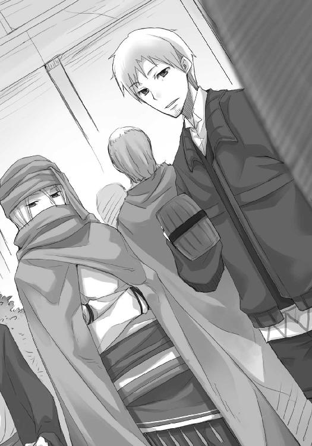
「あんたを見つけて声をかけたのは正解だったな。正直あそこの連中に声をかけられて憂鬱で仕方がなかったんだ」
エーブはうんざりといった様子で会議の場を示す。
「金にならないから？」
ロレンスが言うと、エーブは顔に布を巻きつけていてもわかるくらいに口を歪めた。
それから、伸ばした手でロレンスの手からビールを奪っていった。
「レノスの町とローム川で火遊びをしたオレが、この町に入っただけで一安心、とほっとしていられる理由の一つだからな」
政治的な庇護者。あるいは、地方の領主程度では逮捕権の及ばない財力を持つ出資者かもしれない。
どちらにせよ、エーブと対等な立場ではないのだろう。
独立独歩と胸を張る行商人にだって、その類の人間はいる。
没落しているとはいえ、貴族の称号を持ち、どん底から這い上がってきたエーブには、傍からは窺い知れぬしがらみが数多あるに違いなかった。
市場の入り口で出会った時はエーブは彼らに敬意を払われているふうだったが、エーブの様子からそんな単純なものではないのかもしれないと思いなおした。
「オレは連中の用心棒みたいなもんだがな、土台無理なことを命令されてるんだ。あんた、この市場のできた経緯、知ってるか？」
そんな話を振られ、ロレンスは見栄を張ることもなく首を横に振った。
「何十年か前にこの市場を作る時、その話を持ってきたのは北との貿易拠点が欲しい南の商人連中だった。当然、商人たちは三角洲を買い上げて、そこに市場を作りたいと地主たちに申し出た。だが、少しばかり知恵の足りなかった地主たちは、土地を売ったら大損すると考え、自分たちで市場を建設すると言い張った。莫大な借金をしてまでもな」
「地主が北側の人間。金を貸したのが南側の人間」
エーブは顔に巻いている布を少しずらし、ビールを二口ほど飲んでから、ジョッキを返してきた。
「そう。あそこにいる連中は、金を借りた側と、貸した側のその息子たちだ。金を借りた地主側は土地を失わずにすみ、毎年莫大な金額の土地の使用料を得る代わりに、それと同じくらいの借金の利子を支払わなければならなくなった。もちろん、そのことに苛立ちを隠せない地主たちは必死に解決策を探そうとした」
「でも、見つからなかった」
エーブはうなずいて、その目を、人の命すら銀貨の枚数で数える冷たいものに変える。
「では、その二世たちは次になにを探す？ 答えは簡単だ。八つ当たり先さ」
「無理難題を押しつけて、ですか」
もう、エーブの顔は静かな湖面のように微動だにしなかった。
エーブは確かに大商人に手が届きそうな存在だが、今はまだ小金持ちの商人に過ぎない。
利用する側ではなく、される側。
エーブは誰もが不可能だとわかりきっている、北側と南側の市場を巡る問題をひっくり返せと言われているのだ。
しかも、それは実際に解決を期待されているのではなく、解決できないことを責め、自分たちの苛立ちを紛らわすための、哀れな羊を作ろうという目的のため。
エーブに負けた身としては、自分よりも強い者は、せめて世の覇者であって欲しいと願ってしまう。
「ま、不幸はオレの専売特許じゃないけどな。レイノルズのところを見ただろう？」
エーブはあっけらかんとそう言った。エーブの強さがロレンスとは別種のものであるのは、きっと泳いできた海の種類が違うからだ。
「ええ......予想外に貧相でしたね」
「くっく。もう少し遠回しに言ってやれよ。だが、銅の輸出を一手に担っているようなところですら権力者に利益を吸い上げられる。ここはそういう場所なんだよ」
金がなく、権力だけがあるところほど悲惨な場所はない。
金持ち喧嘩せずというのは世の真実だ。
「ま、あんたに迷惑がかかっちゃいけないからな。話し合いとやらに行ってくるよ」
ビールご馳走様、という言葉を付け足して、エーブは歩き出した。
ロレンスは、その背中に思わず声をかけていた。
「狼の骨の話......無事聞けましたよ」
振り向いたエーブは表情に変化を見せず、そのまま前に向きなおって歩いていってしまった。
しかし、その顔に巻いた布の下でうっすらと笑っていたのでは、と思うのは間違いではない気がする。
今のエーブの振る舞いは少しわざとらしかった。
いかにも声をかけてもらいたそうな、そんな感じだった。
ロレンスは他の商人たちのように会議のほうを見ることはなく、ずっとエーブの背中を追いかけていた。
やがて、エーブは人垣から離れた場所で固まっていた、一癖も二癖もありそうな商人たちに声をかけた。
服装からして南の商人たちだろう。
エーブが北側のそれであるように、彼らは南側の町の金袋の用心棒に違いない。
きっと名前と所属を聞けばロレンスは彼らのほうにより大きい親近感を抱くに違いないが、胸中で応援していたのはエーブのほうだった。
毛皮と材木の町レノスでは、エーブの周到さと命を賭けることすらいとわない強固な意志を目の当たりにし、ローム川では目的の完遂のためには手段を選ばない徹底さに帽子を脱ぐ思いだった。
それがところ変われば使われる側なのだ。
もちろん、エーブは利用される代わりに自分も利用してきたのだろう。
ただ、教会権力に深く食い込んでいたレノスの町や、有力者と面識のあるこのケルーベの町をあっさりとあとにして、毛皮と共に南に下ろうというエーブの考えもわかる気がした。
剣一つ、身一つで世界を切り開ける英雄ではなく、時には泥をすすらなければならないごく普通の生身の商人なのだ。
商人は決して世の主役になれない、とは偉大な商人の言葉である。
側にホロがいなくてよかったと思ったのは、少ししてからのこと。
そして、ぶどう酒ではなくビールにしておいてよかった、と思ったのはジョッキの中を覗き込んでからだった。
きっと自分の顔は情けないものになっているだろう。
ホロは狼の神の骨が教会の布教のためにひどい扱いをされているかもしれない、ということに怒りをあらわにしたが、そんな話は珍しいことではないのかもしれない。
ジーン商会のレイノルズではないが、綺麗な思い出だけを墓の下に持っていきたいものだ。
ロレンスはそう胸中で呟いて、相変わらずわざとらしいやり取りを繰り返す会議の場に視線を向けて、苦いため息をビールで飲み込んだのだった。
三角洲上の市場は、話に聞くとこの広い世の縮図かと思われるほどにあちこちの国々の商品が集まり、そこに吹く風には数十の国の言語がまざっている魅惑の場所、というふうに聞こえたりする。
しかし、聞くと見るとは大違い、という言葉が侮れないように、実際にこの市場に降り立った時の感覚は、多分、ジーン商会を目の当たりにした時に近い印象かもしれない。
年に数回だけ開かれる大市のように天にも届かんばかりに品物が並ぶわけでもなく、商売のために訪れた者と、旅の途中に立ち寄った者たちから小銭をせしめようと芸を披露している者たちもいない。
人出こそむせ返るような量だが、よくよく立ち並ぶ商店を見てみれば、実際に商品が並ぶことはとても少なく、そこに置かれているのは普通に生活している分には決して使わない大きな単位で示された商品の量と値段が書かれた木札だけで、見本の品は店主に一声かけないと見られなかったりする。
異国の食べ物を楽しもうにも、とにかく狭い市場であるから往来で気軽に飲んで騒げる場所というのは存在しない。せいぜいがビールとぶどう酒を量り売りする露天商くらいだ。
それに、商売が行われる場所に必要なのは活気であって、混乱と暴力ではない。
そのために酒場の数は制限され、腰に長剣を提げた兵が待機していることも珍しくない。
となると、ロレンスが足を向ける場所というのは限られていたし、それは賢い者ならさして広くもない市場をぐるりと一周しただけで気がついたことだろう。
だから、ロレンスが相手を見つけたというよりも、相手に見つけられたといったほうが正しかった。
どうせホロたちはホロたちで楽しんでいるだろうからと、白々しくはあったがそれそのものは興味深いやり取りの権力者たちの寸劇をひとしきり堪能したのち、ロレンスはホロたちの姿を探しに一軒目の酒場にたどり着いた。
頭上から声をかけられたのは、扉に手をかけるかかけないかの瞬間だった。
「ぬしよ」
ロレンスはその場では返事をせず、やれやれと酒場の中に入っていった。
頭上からかけられた陽気な声の持ち主が陣取る酒場の二階の小部屋に入った直後、ロレンスが言った言葉はまったくの嫌味、というわけでもなかった。
「ずいぶんなご身分だな？」
「そうかや？ わっちゃあぬしがくれた銀貨しか使っておらぬがな」
窓際に椅子とテーブルが置かれていて、ホロは窓枠の上に腰掛けて酒を飲んでいた。
通りからはその姿が丸見えなのに、酔っているのか、はたまたばれないという自信があるのか、尻尾も耳もさらけ出していた。
「トレニー銀貨を一枚、なんのためらいもなく酒を飲むことに使えるというのがどれほどのことか......近いうちにお前に教えないといけないかもしれない」
床に転がっている小さな樽を拾い上げ、空っぽの中身の匂いを嗅いで、ロレンスはため息をつく。
大酒飲みで大飯喰らいのくせに舌が肥えているからたちが悪い。
「コルは？」
テーブルの上には肉料理が載っかっていたとだけわかる皿が置かれているあたり、買い出しに行かされているのだろう。
「ぬしが思っておるとおり」
酒で体が温まっているらしく、ホロは外から入ってくる冷たい風に涼しげな顔をしている。
「まったく......あんまりこき使うなよ」
ロレンスはテーブルの上にある中身の入った酒樽を手に取って、狭い部屋に備えつけられているベッドに腰掛けた。
つくりの悪い粗末なそれだが、豚か鶏かといった扱いに等しい船旅から解放された者たちには王宮の天蓋つきベッドに匹敵する。
もっとも、ぎゅうぎゅうに船蔵に押し込められてようやく陸に上がった者たちが、酒を片手にこんな部屋に閉じこもってのんびり昼寝、などという平和な世の中であれば教会の説教は要りはしない。
もちろんホロはそんなこと知らずに借りたのだろうが、一度意識してしまうとなんとなくそわそわしてしまう。
「で、ぬしはなにか新しい話を摑んできたのかや？」
顔を外に向けてはいるが、ホロは木窓の窓枠に頭をつけて目を閉じて、風に頰を撫でさせている。
その様子は外から聞こえてくるリュートの音色に耳を澄ましているようにも、なにか考え事をしているようにも見える。
よくよく見ると音に合わせて耳が小さく動いているので、きっと前者だろう。
「そう見えるか」
のんびりする時にはぴったりの甘いぶどう酒を一口飲んで、ロレンスは言った。
「見える。楽しそうな顔じゃ」
目を閉じているというのに、だからこそなんでも見透かされているような雰囲気がある。
ロレンスは自分の顔を撫でて、苦笑した。
「楽しそうな？」
エーブと話をしたあとの顔はとっくに消せているという自信があっても、億劫そうに目を開けてこちらを見たホロの目は意地悪く笑っていた。
「わっちに噓をつくなど百年早い」
まさかここから泉のほとりでのやり取りが聞こえたのか、と思った直後、そうではないと気がついた。
かまかけ。
ロレンスは額に手を当てて、楽しそうに尻尾を揺らすホロの前でため息をついた。
「ま、楽しそうな顔をしておるというのは本当に気がついておったがな。この程度のものに引っかかっておってはまだまだじゃ」
「......肝に銘じておく」
「その小さい肝に、果たして銘じきれるかどうか怪しいものじゃがな」
ホロはくすぐったそうに首をすくめながら言って、楽しそうに笑った。
「......ったく。だが、楽しそうだ、というのは間違いだ。はっきり言えば、甘い酒ではなく辛い酒が欲しくなるような話だからな」
「ふむ？」
ホロは胡坐を解いて立ち上がる。
ちょっとふらふらしているので、だいぶ酔いが回っているのかもしれない。
「よっ......と。少し寒くなりんす」
そんなことを言って隣に座り、ぴったりと寄り添ってくる。
過酷な船旅から解放されるその一瞬に、多くの者がつかの間の逢瀬を楽しむ場所でこんな格好になれば、ロレンスとてそれなりに色々考えてしまう。
しかし、そこはホロのこと。
ベッドの上に足を上げると、ロレンスに背中を向ける形で寄りかかり、尻尾は自分で抱きかかえてしまった。
ちょっとだけ拍子抜け。
そう思わせる手口なのかもしれないが。
「それで、ぬしはどんな話を聞いてきたんじゃ？」
そんなことを胸中であれこれ考えるロレンスとは裏腹に、ホロはいつもどおりの調子だった。
これでは意識するだけ間抜けになる。
ロレンスは、小さくため息を挟んでから答えた。
「この町の暗い部分かな」
「ふむ」
「要約すれば単なる金の貸し借りなんだが、金額が少しでかい」
ホロは起き抜けの水のようにごくりごくりとぶどう酒を飲んでいる。
それほどきつくないやつを飲んでいるのだろうが、ちょっと止めたほうがいいかもしれない。
そう思ってホロが手に持つ樽に手を伸ばそうとした時だった。
「今、酒と共にどれだけの言葉を飲み込んだかわかるかや？」
ロレンスがホロのほうに手を伸ばしたあとだったので、ホロはロレンスの腕の下にいる格好になる。
懐に、牙を持つ狼。
「ぬし自身に関係のない金の話ならば、ぬしは尻尾をぶんぶん振っておるはずじゃ。それがそうでもないのはなぜじゃろうな？」
ホロはまたごくりと酒を飲んで、げっぷを一つ。
それから、ロレンスの伸ばしかけたまま止まっていた手を取ると、そこに樽を押しつけた。
「で、牝狐とどんな話をしてきたんじゃ？」
ホロに隠し事は、不可能なようだった。
ロレンスは押しつけられた樽を摑み、口に運ぶ。
直後に、やられた、と思った。
ホロは腕の下で笑っている。
樽の中身は、酒ではなくおそらくはコル用の蜂蜜入りの山羊の乳だった。
これだけ周到に罠を張っていたのだから、洗いざらい喋っても怒りはしないだろう。
ロレンスは、ゆっくりと口を開いた。
「......俺たちを散々巻き込んで利用していたエーブがな、この町では小娘扱いだった」
「ふむ」
「この町の権力者連中に、利用されるどころか八つ当たりのために使われている感じだった。レノスの町でも、ローム川でも、脱帽せざるを得なかったくらいの商人が、ところ変われば八つ当たりの対象だ。それで、なんというかな......」
これ以上のことを言ったら怒り出すかとも思ったが、ここまで言って本音を隠したほうがホロはきっともっと怒るだろうと思いなおした。
一言で、続ける。
「寂しくなった」
ホロはなにも言わず、振り向きもしない。
沈黙が嫌で、もう少し紡いだ。
「エーブほどの商人でもそうなんだ。翻れば、ではそれに負けた俺は？ となるだろう。自分に勝った相手には......せめて世の覇者であって欲しい、と思いたくならないか」
上には上がいるのは当然だし、広い世の中で自分だけが特別だと思うような年頃はとっくにすぎた。こんな弱音はもう何年も抱いていなかった。
しかし、それは別に自分が年を取ったり強くなったから、というわけではない。
こんなことを思い悩んで一人落ち込んでも、行商の一人旅では励ましてくれる人は側にいないという現実を学んだからだ。
ただ、今ならば。
ロレンスは自嘲気味に笑った。
今ならば、呆れられるか、軽蔑されるか、少なくともなにかしらの反応は返ってくる。
今までは見てみぬふりをしてきたものに向き合って、なお前に進んでいくにはそれだけで十分すぎる糧だった。
「ぬしよ」
「ん」
ホロは、しばしの沈黙を経て、顔を上げた。
「わっちゃあぬしの話を聞いて、二つ腹が立っておった」
「......そうか」
「じゃが、今ぬしの顔を見て、三つ目の腹が立った」
「お前は五人分は飯を食うからな。立つ腹もあと二つくらいはあるだろうな」
ロレンスの軽口に、ホロは脇腹に肘打ちをして体を起こした。
「一つはな、ぬしの話では、ぬしを連れにしておるこのわっちまでもが、へたれになってしまいんす」
確かにそうなるので、黙っておく。
「もう一つは、そんなたわけたことにしょげておるなど、ぬしは仔かということじゃ」
「返す言葉もない」
「そして最後の一つじゃ」
ホロはベッドの上に膝立ちになり、両手を腰に当ててロレンスを見下ろしている。
不機嫌そうな顔をしているが、どことなくその様子が間抜けに見えてしまったのはなぜだろうか。
ただ、それは気のせいではなかったのだと、すぐにわかることになった。
「......そんな、とても一人前の雄とは思えぬたわけたことに尻尾を丸めておきながら、なんじゃその面は......」
「......顔？」
ロレンスが聞き返すと、ホロはためらったあとに、小さくうなずいた。
「そんな弱音を吐いておるくせに......」
そして、ホロはそっぽを向いた。
「いつでも一人で歩き出せるというような顔をしていんす」
笑ってはいけない。
そう思った時にはすでに遅く、酒以外のなにかで少し頰を染めたホロが、耳をいきり立たせて牙を剝いた。
しかし、ロレンスは落ち着いてこう訊ねた。
「これで、一人じゃ歩き出せない、なんて顔をしていたらお前は散々罵倒するだろう？」
ホロは不満そうだ。
それでも、しばらく不満そうに唸ってから、うなずきがてらにすとんと腰を下ろす。
尻尾が左右に大きく振られ、不機嫌そうなため息がつかれた。
「当然じゃ。それで罵倒してからかって弄んで、それでもなおわっちのあとをついてくるぬしを見て悦に浸るんじゃ」
「それは......ちょっとごめんこうむるな」
「たわけ」
ホロは言う。
ロレンスがその頃合を見計らって手を引くと、その体は綿毛のように軽く、こちらに倒れてきた。
ホロが怒った理由はもちろんわかっている。
腕の中のホロは、相変わらずむくれている。
「悪かった、と言うべきなのか？」
「悪いのはいつもぬしじゃ」
「......」
ホロはロレンスの旅の連れであり、ロレンスはホロの旅の連れ。
どちらがどうというわけではなく、互いに支え合うのが理想といえる。
相手を怒らせるのはいつもロレンスでも、ホロはいつも怒るのが役目ではない。
それならば、なんともおかしな言い方ではあるが、ロレンスは勇気を振り絞って腑抜けになるべきだった。
お前の支えがなければ駄目なんだと。
たとえホロに罵られても。
「だが、おかしいと思わないか」
「んむ？」
腕の中のホロは、顔を上げずに聞き返してくる。
「それで、なんで俺がお前を慰めるような格好になってるんだ？」
耳がひくひくと動き、ロレンスの頰をくすぐってくる。
ホロは顔を上げ、心底楽しそうに意地悪げな笑みを浮かべてこう言った。
「それがわっちの特権じゃからな」
「まったく......だが、どうせそんなのが好みの俺だからな」
「くふ」
ホロは笑って、それから一度こちらにしがみついてきた。
しかし、ロレンスにだってさすがに予測ができる。
「おい、またコルを使ってからかう、つもり............？」
ロレンスの言葉は、そのまま消えてしまった。
「人は強く、強い者は後ろを顧みぬ。わっちゃあ長いこと顧みられなかった。もうそれは嫌なんじゃ」
泣きながらでも、言葉に詰まるでもなく、はっきりとホロはそう言った。
ヨイツの賢狼たる、実に堂々とした弱音の吐き方だと思った。
それがどんなに場違いな言い方であっても、ロレンスはそう思った。
だから、敬意を込めて、その小さな頭を撫でてやった。
「俺が臆病なのは知ってるだろう？ いつも恐る恐る後ろを振り返らなきゃならない。だからそのへんは、大丈夫だ」
ロレンスが言うと、ホロは涙を拭うかのように顔を胸に押し当てながら、首を横に振った。
「それは、それで嫌じゃ」
この期に及んでもわがままを忘れないその姿勢には敬服する。
ロレンスは苦笑いしつつ、ホロの耳の付け根を軽く搔いてやった。
「なにかを決める時にはお前に相談する。そういうことだろう？」
「わっちへの供え物なのに、わっちに意見も聞かずあれこれ変えられるのはもう嫌じゃ」
わざと卑近なたとえを出したのだろうが、それだとロレンスがホロに向ける気持ちは供え物だということになってしまう。
「俺の気持ちは供え物か」
「お祈りするには必要なものじゃと思いんす」
ホロの耳がひくひくと動き、ロレンスは笑う。
ロレンスは、こう言った。
「なにを祈るんだ？」
少し体を起こしたホロが、短く答える。
「コル坊が来んように」
「......ったく」
悔しいが、敵わない。
ホロは笑って、目を閉じた。
ただ、ホロがこんなにもわかりやすく本音を言ってくれたのだから、大事なことに違いない。
確かに、自分の頭越しになにかを決められるというのは商売の上でも一番嫌なこと。
ホロは村で豊作を司る神として過ごしていた時も、その長い年月に渡ってそんな感じだったのだ。
挙句、月を狩る熊とホロの故郷を巡る話でも、ホロは蚊帳の外にいた。
自分に関わることなのに、自分の外で決まってしまう寂寥感。
もう、うんざりなのだろう。
本当ならロレンスがきちんと察しなければいけなかったことなのだろうが、それを待っているといつになるかわからない。
ホロに聞いたら、きっとそう答えられたことだろう。
「ま、頃合をはかってぬしを罠に嵌めるのも結構骨じゃからな。たまにはいいじゃろ？」
すぐ側にあるホロの顔が底意地悪く微笑み、同時に狼の耳が獲物を見つけたように廊下のほうを向く。
その意味するところは明白だが、賢狼は二度同じ罠を仕掛けるほどつまらない狩人ではないらしい。
「そういつもいつも嵌まると思うなよ？」
ホロは無言の笑みで牙だけ見せて、ロレンスからさっさと離れると窓枠に腰掛ける。
ロレンスの口にはたっぷりと蜂蜜の甘さが残っていても、そんなあっさり離れられたらどうしたって苦笑いだ。
ただ、その直後に計ったように扉がノックされるのを見れば、確かに簡単に罠に嵌まってしまうかもしれない。
「お待たせしました」
扉を開けてそこにいたのは、もちろんのこと、コル。
「まったくじゃ。待ちくたびれてしまいんす。酒はどれじゃ酒は」
「えーと、こちらに......あ、ロレンスさんの分もありますよ」
「なんじゃそんなものは買ってこんでもよかったのに。もったいないっ」
ホロとコルのやり取りに、ロレンスはついつい笑ってしまう。
もっとも、笑ってしまった最大の理由は、こんなにもあっさり態度と表情を変えられたら、自分ごときなどそれは簡単に罠に嵌まってしまうだろう、ということだ。
本当に、恐ろしい。
恐ろしいから、ロレンスは塩っ辛い干し肉を選んで、嚙みちぎったのだった。
「それで、ぬしが耳にしてきた話というのはなにかに使えそうなのかや」
使い走りをさせたコルにはねぎらいの言葉一つなかったので、代わりにロレンスが言っておいた。
もっとも、感心してしまったというのもある。
コルはぼろぼろの外套を上手に袋状にして肩に提げられるようにして使っていた。ホロは意地悪してたくさんの酒と食べ物を買ってこいと言っていたのだろうが、難なくこなしていた。
ねぎらいの言葉がなかったのは悔しさもあったのかもしれない。
なんにせよ、コルはつくづく商人の弟子になったら競りにかけたいくらいの逸材だった。
「聞いておるのかや？」
食べ物や酒をテーブルの上に並べるコルの手際のよさを眺めていたら、ホロに嫌味ったらしい口調でそう言われた。
「聞いている」
「どうかや」
「調べる価値はあるだろう。ここの市場を建てるのに北側の有力者たちは金を借りて、その支払いに汲々としているらしい。で、俺たちがてっきり大きくて悪辣な大商会だと思っていたジーン商会は軒先でラバが欠伸をし、鶏が暢気に卵を産み散らかしているようなところだった」
ホロは焼いた巻貝の身を口の中でもぐもぐさせている。
代わりに、コルが口を開いた。
「利益を、横取りされている？」
「そう。ジーン商会はローム川流域の銅の取引を一手に担っているが、その利益は北の権力者に横取りされている。だとすれば」
ホロは貝をぶどう酒で流し込んで、げっぷを一つ。
「腹立ち紛れにでかい儲け話に手を出してもおかしくはありんせん、ということかや」
「まあ、そうだ。それに......」
なんの魚かはわからないが、銀色の鱗をつけたまま油で揚げられている魚の切り身をつまんで、口に運ぶ。
油の質もいいのか、柔らかくて甘い。
以前にトレニー銀貨を一枚渡したら全て使いきって林檎を買い込んだホロだ。
遠慮の二文字など相変わらず忘れているのだろう。
「レイノルズには、ちょっと怪しいところがあったしな」
「ふむ。まあ、隠し事をしておるじゃろうな」
コルだけが、「え」といった顔でロレンスとホロの二人を見る。
「内容を推測するのは難しくない。狼の骨の話をしに行って隠し事をされたとしたら？」
「耳隠して尻尾隠さず、じゃな」
ホロは耳と尻尾をはたはたとさせてそんなことを言う。
しかし、相手は商人だ。
「世の中には能ある鷹は爪を隠すなんて言葉もあるからな。隠したのは耳ではなく角かもしれない」
「それに、ぬしは別れ際にずいぶん熱烈な握手を貰っておったな？」
さすがによく見ている。
ロレンスはうなずき、歯に挟まった鱗を取った。
「エーブ・ボラン氏によろしく、と言いたいのは、エーブの金にか、商才にか、はたまた人脈にか」
「あの牝狐は有り金はたいて毛皮を買った直後。まあ、牝狐の懐具合を知らなかったのだとしても、金を借りに行く場所は他にもたくさんありそうなものじゃしな？」
ホロは言いながら、からかうような笑みを向けてくる。
ロレンスが以前に破産しかけて金策に走り回ったことを突いているのだ。
「......となると、商才か人脈か。どちらにしろ、役者と台本が揃いすぎじゃないか？」
ホロはうっすらと笑うだけで、のんびりと外のほうを向いている。
ロレンスはロレンスでテーブルの上の食べ物をちびちびとつまみ、コルだけが一人、小さな樽を抱えるようにして両手で持って、二人のことを見比べている。
別に意地悪をしているわけではない。
コルは賢い少年だ。
人を疑うということをほとんど知らなくとも、そういう見方もあるのかと教えられたらきちんとそれについて考えることのできる頭を持っている。
つまり、ホロとロレンスはそれぞれの印象から、それぞれすでに絵を描いている。
その断片をコルに聞かせて、どんな絵になるのか照らし合わせたいのだ。
「あ、あの！」
コルは手を挙げて、起立した。
どんなに厳しく偏屈な学者であっても、こんなに真剣になられたら可愛がらざるを得ない。
コルが騙されたのは、もしかしたら先輩による嫉妬からだったのではないかと思うほどだ。
「レイノルズ、さんは、今でも骨を探しているのでしょうか？」
ホロは返事をしない。
しかし、コルはきっと意地悪な博士から講義を受けていたに違いなく、少しも怯むことはなかった。
「もしもレイノルズさんの隠し事が今でも骨を探していることだとするのなら、本当なら、僕たちのことなど適当にあしらって話を隠すはず。それでも僕たちを歓待したのはエーブさんの親書を持っていたから？ だとすれば、ロレンスさんが別れ際に握手を求められたというその理由は......」
コルは考える。
コルにはエーブがどの程度の商才を持つ人間なのかについての知識がない。
とすれば、その印象からあれこれ判断することになる。
コルの目からは、この絵はどう見えているのか。
「その理由は、狼の骨を探す際に手を貸して欲しいから、ですね？」
同じ疑問符をつけた発言でも、こんなにも印象が変わるものだ。
ホロは樽の中の酒を飲んで、コルに目を向ける。
そして、軽く笑ってから、ロレンスのほうを向いた。
「どうじゃ？」
ロレンスは、聞かなくてもわかるだろう、と手を振った。
それが真か偽かはともかくとして、そのように考えるとすんなりいくのだ。
「それに、そう考えるとエーブがあっさりと親書を書いてくれたのもわかる気がする。エーブのことだから、レイノルズがこの話で自分と協力したがっていることを前々から知っていたはずだ。それでも話が話だから慎重になり、はぐらかしていた。あるいは、信じるに足らなかったのかもしれない。どちらにせよ、当然レイノルズはエーブの協力が欲しくてやきもきしている。そこに現れた三人組。エーブはどう考える？ 狼のように狡猾なエーブだからな、当初はレイノルズの話を荒唐無稽と一蹴しておきながら、そこに俺たちまで現れたら、もしや、と思う。しかし、自分からレイノルズに声をかけて話を聞くのは得策ではない。では、どうするか。なんとちょうど利用し甲斐のある奴らが目の前にいるじゃないか......」
「しめしめ」
ホロは老婆のような声音でそう言って、くすくすと笑う。
もしもこんな構図なら、レイノルズはレイノルズでエーブがなんらかの興味を示してくれている、と思ったに違いない。
だからこそ、コルが「骨は見つかったのですか？」と聞いた時に対応を一変させたのだろう。
いくら偵察といってもこんな半人前を寄越しやがって、と怒ったのか、あるいはロレンスたちのことをエーブの指示を受けた斥候だと考えたのは思い過ごしか、という拍子抜けをした。
話のあとにロレンスたちにご馳走してくれたのは、少なくともロレンスたちがエーブの指示を受けてやってきた連中ではなく、体よくエーブに利用されている間抜けな羊だと考えたからかもしれない。
それならば、言葉の端々にそれとなく伝えたいことをまぜるようなまどろっこしいことではなく、わかりやすくご馳走したほうがよい。
と、ひとまずはこのようにあの商会での出来事を解体することができる。
筋張った山羊でも、上手に刃を入れると簡単にばらばらに捌けるものだ。
「ではどうするかや、ぬしよ」
ホロは至極あっさりとした口調で訊ねてくる。
ただ、その琥珀色の目の赤みはいつもよりも強くなっている気がする。
一時は貧相なたたずまいから肩透かしを喰らったジーン商会だが、狼の骨を未だに追いかけているという話に肉づけがなされた途端、怒りがぶり返したのかもしれない。
それに、ホロには「今度こそ」という思いがあるに違いない。
今度こそ、腹の立つ事件には自分自身が、自分の牙と爪と頭脳をもって対処したい。決して素通りだけはさせはしない。
そう思っているのかもしれない。
だとすれば、その連れであるロレンスの答えなど。
「決まっている」
ロレンスは続けようとして、もう一つの視線に気がついた。
じっと口をつぐんではいるが、コルだって気持ちのうえではホロと大差ないのだ。
「調べてみよう。なにもなければ、それはそれでよし、だ」
一人で行く行商の旅ではなかったこと。
二人で行く行商の旅でもなかったこと。
意見の一致を見て行動を決めるというのは、なるほどなかなかに心地よいものだった。
これを軍勢相手にやれるのだとしたら、確かに貴族連中が競って騎士団を率いたがるのもわかる気がする。
ただ、いつもいつもこんなことをしていたら気疲れしてしまいそうだ。
ホロは同じことでも村丸ごとという重責を背負っていたのだから、それは苦しくなるだろう。
挙句、感謝もなにもされはしない。
自分がこんな立場になってみて初めて、出会った直後は泣いたりしょげたりするホロをその場しのぎで慰めていただけなのだ、ということに気がつく。
だというのにまるで自分がホロの保護者だというふうに思い込んでいたのだから、ホロに簡単に足元をすくわれてしまうわけだ。
ロレンスは、コルと大して変わらない年齢に見えるホロに隠れて小さく笑う。
そして、すぐに笑みを消して深呼吸をすると、指揮官らしくこう言った。
「では、各々の役目を伝えよう」
コルは真剣に、ホロはもちろん真剣に演技をして、ロレンスの話に耳を傾けたのだった。
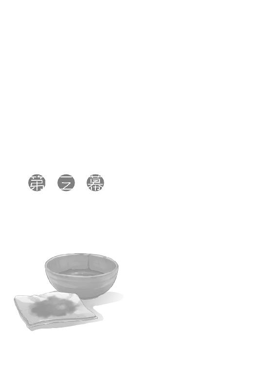
ロレンスが酒場の追加の精算を終えて外に出ると、コルとホロが互いの足を踏み合って遊んでいた。
コルがロレンスに気がついて足を止めると、容赦のないホロはそこを狙って思いきりコルの足を踏む。
「わっちの勝ちじゃな」
そう言って胸を張るホロに、下手に出て「負けました」という顔をするのがコルなのだから、どちらが子供かわかったものではない。
もっとも、人間も歳を取ると子供に戻るというので、あながち間違いでもないのかもしれなかったが。
「さて」
無邪気に遊んでいるのを見ると、背丈が似通っているのもあって双子の兄妹のようなホロとコルが、揃ってこちらを振り向いた。
「それじゃあ、各自役割は心得ているな？」
「はい」
「んむ」
返事の速さではコルのほうが上だ。
学びの都アケントでの勉強風景が目に浮かぶ。
対するホロは、ふてぶてしく返事をして暢気に欠伸などしていた。
「ただ、ちょっとどきどきしますけど」
「大丈夫。まあ、一つ助言をしておけば、噓をつく最大のコツは、これは考えようによっては噓ではないと自分に言い聞かせることだ。それに、実際に噓をつくわけじゃないだろう？」
コルが不安そうに笑うので、ロレンスはそう言ってやる。
「ええ......いえ、大丈夫です。きちんと話を集めてきます」
初陣に赴く騎士のように気負って答えるコルの肩を軽く叩いて、「期待している」と付け加える。
ロレンスの見立てでは、コルは仕事を任されればそれだけ成長すると思えた。
アケントで石盤を抱きかかえながら石灰まみれになっていただけの少年ではない。
騙され追い出され、着の身着のままの旅でもなんとか生きながらえてきた実績がある。
期待している、というのは噓ではなかった。
「じゃあ、晩に」
「はい」
ホロと足を踏み合って遊んでいた時とはまったく違う顔でうなずいて、思いきりよく歩き出した。
その背中は小さいながらも、ちょっとした貫禄があった。
さて自分があの歳の時、自分の背中はどんなふうだったろうか、と思う間もなく、袖を引っ張られた。
商売女の客引きというわけではないが、ある意味それよりももっとたちの悪い、ホロだった。
「ではわっちらも行くかや」
「あ、ああ」
ホロもまた、あっさりと歩き出し、足が出るのが遅れてしまったロレンスのことを振り向いて「うん？」と言った。
慌ててホロに追いついて、やれやれと思う。
あれだけコルを可愛がっておきながら、試練に出す時はこんなにもあっさりとしているのだ。
それとも、それだけコルを買っているということなのだろうか。
ロレンスだってコルのことを買っていないわけではないが、こんなにもあっさりと信頼することはできない。
「お前、本当に一人で大丈夫か？」
だから、ロレンスは我慢できずにそう訊ねた。
三角洲から、南側の岸辺に行く渡し船の乗り場に向かう途中のこと。
せっかく三人もいるのだから一緒に行動するのは愚の骨頂、ということで、情報を集めるために手分けすることにした。
コルは旅をする物乞いのふりをして、北側で物乞いたちからジーン商会の羽振りやその内実を。
ホロは北へ向かう修道女のふりをして、南側で教会からロエフやローム川上流での教会の権勢と動向について。
そしてロレンスは、三角洲にあるローエン商業組合の別館からジーン商会の商売と狼の骨の話にまつわる話を。
ホロもコルも自分よりよほど優秀なので、普通に考えれば心配はない。
ただ、特にホロについては狼の耳と尻尾が生える異教の体現者だ。
口と頭の回り方は三人の中で一番とはいえ、一人で行かせるにはどうしても不安があった。
「やはり、俺と一緒に──」
人ごみが切れ、少し先を歩いていたホロがロレンスよりも数歩先に出る。
ロレンスの言葉は、先に人ごみを抜けていたホロが振り向いたことで途切れた。
「コル坊には大丈夫と請け合って、わっちは一人でお使いもできぬ半人前扱いかや？」
琥珀色の目が細められ、その赤みが強くなった気がする。
その向こう側には船着き場が見えていて、北側の岸に向かうそこよりも賑わっていた。
「そういうわけじゃないが......」
「なら、どういうわけかや？」
ホロを心配することにあれやこれや理屈をつけられても、その根っこのところは理屈ではない。
しかし、ホロが怒るのももっともだった。
「悪かった」
そう答えると、その瞬間にホロに胸を突かれた。
「たわけ」
「っ？」
ホロはますます怒ったようにロレンスのことを睨み、ぷいと横を向いてしまう。
まったく訳がわからずに突かれた胸を押さえていると、ホロはしばらくしてからため息まじりにこちらを振り向いた。
「ぬしは本当に政治が下手くそじゃな」
「政、治？」
「ぬしは本当に下手くそじゃ」
もう一度言われて、ロレンスは頭を搔いた。
「大体じゃな、この状況でわっちを一人で行かせぬ理由がわかりんせん」
ロレンスには相変わらずその言葉の意味がわからない。
「いや......もし万が一のことがあれば......」
「そんなことはコル坊にだってありんす。あのな、ぬしよ」
「あ、ああ......」
突然居住まいを正し、言いにくいことを言うような顔になったホロに、ロレンスも釣られて背筋を伸ばしてしまう。
そして、川べりに向けていた視線をロレンスに向けるや、ホロのそれはどことなくロレンスを責めるようなそれ。
記憶を漁るならば、それは照れ隠しだ。
「ぬしはわっちらの報告を待つ大将じゃろう？ そしてわっちとコル坊はその手先。なら、それぞれ競い合わせたほうがより容易にわっちらの手綱を握れるじゃろうが」
船着き場が近づいてきて、忙しく川を横断する船の様子も見えてきた。
と同時に、ロレンスもおぼろげながらホロの言葉の行き着く先が見えてきた。
「手柄を得て、俺に褒めてもらいたいのはどっちも一緒だから？」
ホロが思いきり苦い顔をしてそっぽを向いたのは、それが正解だから。
確かにそうかもしれない。
ホロがコルよりも手柄を立てられればそれを存分に褒めてやり、失敗したら存分に慰めてやればいい。
これで、ホロを手伝ってしまったら、褒められるのも慰められるのもコルだけの特権になる。
確かにそのとおりなのだが、ロレンスにはさらにわからないところがある。
ホロが演技ではなく恥ずかしがりながらもこんなことを教えてくれたその理由だ。
川岸の桟橋に到着したが、人が多いせいで順番待ちになった。
ホロは、周りに人がいるのでローブの下で耳と尻尾が暴れないように必死にこらえるような面持ちで、こう言った。
「ぬしはいつか店を持つんじゃろう？ なら、他人を使うということをもう少し学びんす」
「あっ」
思わず口を押さえてしまった。
確かにそのとおりだった。
店を持てば人を使わなければならない。
陰に陽に人心を掌握し、時には彼らの忠誠心を必要とすることもあるだろう。
ただ、ロレンスは一対一でならそういうことに慣れていても、多人数となるとまったく考えが及ばなかった。
「よくもまあそれでわっちの手綱を握ろうと頑張るの」
ホロは腰に片手を当てて、呆れるように小首をかしげている。
動き出した列を横目に、ロレンスは負け惜しみでこう言った。
「そんな俺が可愛いんだろう？」
むっつりとした顔で言ってやると、ホロは大喜びするわけでもなく、小首をかしげたまま「まあまあじゃな」と言ったのだった。
「なら、任せた」
「心配が顔に出ておるが、まあ、ぬしの言葉のほうを受け取っておきんす」
帰りの船代を渡し、事情を話して船頭には先に乗り賃を支払っておく。
「晩飯は小麦パンがよいの」
「うまく手柄を立てられたらな」
ロレンスのそんな言葉に笑みを残して、ホロはローブの裾を翻すと船に軽やかに乗り移った。
ケルーベは川を挟んで北と南に分かれていて、北には教会がない。
それは北側には異教徒の者たちが住み、南側には正教徒の人間が多い、ということを示している。町の歴史的には、単純に正教徒である商人たちが南からのぼってきて、南側の土地を買って住み着き始めたから、というだけのことらしかったが。
ただ、北と南であからさまに町の様子が違うとなると、なんとなく世の縮図を見た、と大仰なことを言いたくなってしまう。
北側の町では建物の高さや道の幅もまちまちだったが、南のほうは建物の高さはきちんと制限され、綺麗な町並みが続いている。きっと、表通りに面する商会の荷揚げ場でラバが暇そうに欠伸をしている、ということもないだろう。
北側の川岸からではよくわからなかったが、ここからならば南側にある教会が惜しみのない献金を積み上げれば天にも届く、と言わんばかりに聳え立っているのが見え、綺麗な黄金色の鐘を町で最も神に近い場所に吊るしているのがわかった。
ホロは南から故郷の北へ帰ろうとする旅の修道女を装い、故郷に帰りたいが故郷は未だに異教徒の町なのだろうかと心配だ、という切り口で話を集めることにしたらしい。教会の人間から聞かれそうなことは言い含めておいたが、そんなものなくともホロの口のうまさなら十二分に話を集められるだろうとは思った。
それでも、これまで情報を集めたり物を考える時は二人一緒だったので、ホロ一人にそれを任せるというのはなんとも不思議な感覚だった。
きっと、店を持って人を雇った時は同じことを思うのだろう。
ただ、ふと思ってしまうのは、その時にホロの姿はあるのだろうか、ということだ。
「......」
ロレンスは頭を搔いて、ため息をつく。
そんなことを心配しているようでは、逆にホロのほうにあいつを一人にしてはおけぬ、と言われてしまう。
ロレンスは一人笑いながら、他の客に紛れて川を渡っていくホロを眺め、やがて背を向けて歩き始めた。
目指すのは三角洲にある、ローエン商業組合の別館だ。
ホロと一緒に南側に渡って本館に行かなかったのは、単純に面識のある人間が本館にいないためだった。
三角洲の市場は北の地と南の地をつなぐ重要な貿易拠点のひとつに数えられるだけあって、どこの組合も別館を置いて旅の仲間や商品の情報を常に収集している。建物には規制がかけられているので町の中のように建物で権勢を競ったりはできないが、それぞれの特徴を前面に押し出した作りにはなっている。ロレンスならその一つ一つを、あれはどこの商業組合でこれはどこのそれ、と言い当てることができた。
その商館一つひとつには何十人、あるいは何百人という数の商人が所属していて互いにしのぎを削り合っているのだな、と思うと少し不思議にも思う。
世の中にはそれだけの商売があって、その種はまだまだ尽きることがないということなのだから。
ロレンスは、大洋に浮かぶ小船の船室の扉のような、見なれた作りの商館の扉を控えめにノックしたのだった。
「おや、これは珍しい顔ですね」
商館の一階には商人連中が何人かいたが、全員が旅姿だった。
「お久しぶりですキーマンさん」
商館の一階、そこの入り口からまっすぐ正面の奥は、その商館を預かる主人が座ることになっている。そこに座る綺麗な金髪のキーマンは、貿易の拠点に生まれた貿易の申し子だった。
父親はケルーベでも有数の貿易商で、そのお陰で一度も遠くに出かけることもなく誰よりも遠方の地の商品をたくさん見ていると、評判とも皮肉とも嫌味ともとれることを言われていたのを聞いたことがある。実際に、その体つきは吟遊詩人といっても十分に通りそうなほど細く、商館の一階で酒と情報を酌み交わしている他の商人たちとは違い、手にはあかぎれひとつなかった。
典型的な金持ちの息子で、ともすれば旅の埃にまみれて商売をする商人たちからは嫌われそうなものだったが、その信頼は意外なほど厚い。
歳はロレンスよりも二つほど下だったはずだが、ロレンスとは違い町の中での商売に長けているのだ。
町の商館にいる者は、昼夜を分け隔てず歩くことができるとか、言葉が通じない相手とでも即座に商談ができるとか、そういった能力は求められはしない。
キーマンは、旅の商人たちからこいつになら我々の旅の中のつかの間の住処を任せられる、と目されているのだ。
「お久しぶりですクラフト・ロレンスさん。今回は陸路でいらっしゃったのでしょうか？」
昨日と今日、あるいはここ数日、商船が入港していないのだろう。
「いえ、今回も水路ですが、海からではなく川を下ってきました」
その言葉に、キーマンは手にしていた羽根ペンの羽で自分の顎をくすぐって視線をぐるりと巡らせる。
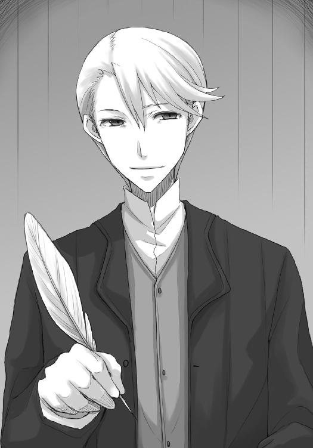
キーマンの頭の中には万枚に及ぶ地図があるといわれている。
この男は、これまでに二度しか会ったことのないロレンスがどんな順路で行商をしているのか、頭の中の地図で把握しているのだ。
「いつもの行商路ではありません。レノスに寄る用事がありましたので」
「ああ、なるほど」
キーマンの笑顔はホロの笑っていない笑顔よりもなにを考えているかわからない。
町商人は何十年も生まれた町で暮らし、そうすれば互いの性格や癖までもが筒抜けになるのに、そんな連中同士で腹の探り合いをする。そのせいで町商人の陰険さは行商人の比ではない。若くして別館ながらそこの主に納まっている若き貿易商人は、それなりの恐ろしさを持っている。
ロレンスは努めて平静に、商館に来た時の常として寄付するための銀貨を取り出しながら、言葉を紡いだ。
「そういえば、金の泉で面白い劇を見ましたよ」
「ふふふ。面白い劇とはさすがロレンスさん。通いの行商人でもなかなか見抜けないというのに」
ロレンスがトレニー銀貨を五枚積み上げることになど目もくれず、キーマンは秘密を共有して喜ぶ子供のように笑いながらカウンターの上に身を乗り出してきた。
「見え透いたやり取りでも、いつどこに毒針が仕込んであるかわかりませんからね。今頃本館のジーダ館長は我々の金袋を守るために出張っているでしょうね」
ケルーベのローエン商業組合を束ねるジーダ館長は名前しか知らないので、もしかしたらエーブが声をかけにいった癖のありそうな商人連中のうちに、その人がいたのかもしれない。
とすれば、エーブはケルーベに常駐してどこかの商会を率いているわけでもないのに、さまざまな商業組合の幹部組合員たちが徒党を組む前に一人で立ち向かっていることになる。
巨人に立ち向かう若き騎士の話に胸を熱くしない男がいるだろうか？
羨ましい、という気持ちが素直に胸の内でくすぶったが、エーブの前で出したそれはキーマンの前では決して出しはしない。
キーマンは、優秀ゆえに信用の置けない人間だからだ。
「毒針などありますか。私が聞いたところでは、北の地主側はもはや陸に上がった魚かと思われますが」
「ええ、それも何十年も前に陸揚げして、とっくのとうに干上がった、ね。ただ、今年は北への大遠征がなくなって金の動きが細っていますから。背に腹は替えられないかもしれない、ということです」
町の北側に住む地主たちに入る金が、三角洲の市場の使用料だというのなら、それはおそらく市場で徴収された税だろう。
そうなると、人と物の行き来が細れば、それは税収入の低下に直結する。
しかし、古今金貸しが儲け続け、借金した者が破産するのは、借金した相手が儲けようと損しようと、貸した側はいつも同じだけの金額を利子として受け取れるからだ。
「ここで恩情を示してさらに貸しを作ればあとあとさらにうまくなる、というのは通りすがりの者ならではの考えでしょうか」
キーマンはロレンスが積み上げたトレニー銀貨五枚を特に感慨もなく受け取り、寄付帳へと淡々と書き込んでいく。
巨大な貿易船が何隻も行き交うような帳簿を毎日眺めていたら、トレニー銀貨五枚などその程度の値打ちなのだ。
寄付としてトレニー銀貨を出したら大喜びしてくれたリュビンハイゲンの商館の主、ヤコブの大袈裟な振る舞いが懐かしくなる。
「いいえ、普通に考えるならそのとおりなのですが、生憎と相手側は死ぬまで利子を払い続けた人たちの息子であり、生まれた時から利子を払い続けている人たちなのです。十年ほど前にウィンフィール海峡で戦争が起こった際も、利子の支払いが数年に渡って滞り、我々南側は借金のいくらかの棒引きを申し出たそうです。もう、十分元が取れたから、と」
この金髪の若き貿易商は、自分の笑顔の種類を自在に操れる類の人間だ。
爽やかな笑みの下に蛇のような陰気さを少し織りまぜて、そんなことを言った。
「意固地になってるわけですか」
「お察しのとおり。意地でも利子を払い、いつかはきちんと完済するとね。こちら側としては洲の市場の面積を広げられれば、借金の利子分くらいはすぐに取り戻せますから。ですが、それがわかっているから向こう側はなおのこと意地になる。これ以上連中に儲けさせてなるものか、と」
呆れて物も言えない、とばかりに肩をすくめるキーマンに、ロレンスも同意だ。
これではその八つ当たりに使われるエーブがあまりにも気の毒だ。
ウィンフィール王国の没落貴族で、ローム川流域にそれなりに大きな影響力を持っているらしくとも、それをあっさりと捨てるように南へと下ろうとしているのは、このあたりが原因なのかもしれない。
のし上がるためにあちこちを利用して、その債務の支払いに首が回らなくなり始めたのだろう。
「もっと合理的に進めればいいのに、と思います。未だに北側と南側では婚姻はもとより、引越しすら難しいんですよ」
キーマンはぺらぺらと喋ってくれるが、親切心からでないことだけは確かだ。
行商人風情が金の泉の話を切り出すというのはどうせ野次馬根性からだろう、と思われているに違いない。
そうなれば、ローエン商業組合の看板を背負ったまま勝手に情報収集をされて、組合の方針とはまったく違うことを吹聴されては困る、と考えるのが彼らの思考法だ。
あれこれ喋って情報を与えるのは、誘導と、そして、これが組合の見解だという一種の警告であり、それから外れるとそれなりの制裁がある。
わからないうちは落とし穴のように恐ろしいそれも、わかり出すと逆にどこの商館に行ってもきちんとそれに従ってさえいれば商館が身を守ってくれる合言葉に思えてくる。
「なるほど。とすると、私が耳にした噂というのもあながち間違いではないのでしょうか」
「噂？」
情報の収集が何よりも重要な商館の人間であるキーマンは、カウンターの上にトレニー銀貨を五枚積み上げた時よりもよほど興味深そうな顔を向けてくるから苦笑ものだ。
行商人同士の会話なら、噂といってこんなに身を乗り出してくる相手は格下に見られることになる。
「ええ。実は、町の北側のジーン商会が、同じ北側の有力者の食い物にされている、と」
もちろんこれは憶測に過ぎなかったが、そう口にした瞬間に確信に変わった。
キーマンの表情は変わらなかった。
しかし、あまりにも変わらなさすぎたのだ。
「そんな話を......失礼ですが一体どこで？」
わざとらしくとぼけることもできただろうが、キーマンはロレンスに内心を見抜かれた、と気がついたのだろう。
厳しい目つきでそう言った。
ここが言葉の選びどころ。
ロレンスは、池に大きな石を投げ込んでみることにした。
「実は、レノスで元貴族という一風変わった──」
商人と取引を、という言葉は続かなかった。
その顔は笑い話を聞いたかのようなのに、カウンターの上に片肘をついていたロレンスの服の袖を軽く摑んだからだ。
顔の様子と、その身にまとう雰囲気がまるで正反対だ。
「ロレンスさん、旅の疲れがおありでしょう？ いかがですか、奥で軽く休憩されては」
商館は食堂もあるし宿泊するためのベッドや暖炉もある。
しかし、もちろんそんな言葉どおりの意味ではない。
餌は予想以上の大物を釣り上げたらしい。
「ええ、喜んで」
ロレンスは、素直な笑顔でそう言ったのだった。
商館の奥の、おそらくはキーマンの執務室に通されると、魚の香りがするスープを出された。
酒を片手にする話でもないし、子供のように甘い飲み物というわけにもいかない。
それに、旅人が訪れては旅立つこの町では、塩の味と滋養に満ちたこういった魚のスープといったもののほうが喜ばれることが多い。
ロレンスは一口それを飲んで、食べなれた鰊の味に少し昔を思い出した。
「さて、それで彼のボラン家の女当主とどういったご関係が？」
質問ではなくまるで尋問だ。
キーマンは自分の分のスープにまったく手をつけない。
ロレンスはそれを見て、一瞬なにか怪しげな効果を持った薬草でも盛られていやしないかと疑ってしまった。
「私は行商人ですから、もちろん舞踏会での踊りの相手ではありません」
「騒ぎになったという、毛皮の話でしょうか」
今日到着したばかりの情報か、あるいはレノスに駐在していた人間が早馬で昨日のうちに知らせていたのか。
ロレンスは隠すことでもないのでうなずいて、一つ咳払いをする。
「共に大きな商売をしようとしたのですが、土壇場で裏切られ出し抜かれましてね。悔しさを拭いきれず川を下り、文句を言いに来たわけです」
「ご冗談を」
手玉に取ることには慣れていても、取られることには慣れていないのか。
やや怒りの表情が顔に出ているキーマンは、どことなくホロを幼くした印象を受ける。
「取引までは本当ですし、私が川を下ってこちらにやってきたのもエーブさんを追いかけてのことです。ただ、その目的は、エーブさんの助言をいただければと思いまして」
「それは、商売の？」
ロレンスは首を横に振り続けた。
「旅の途中では不思議なことに巡り合うものです。そんな巡り合わせから、ある与太話を追いかける羽目になりまして」
「与太......話」
「ええ」
キーマンは空の星を眺め回すように視線をくるりと回し、言葉を続ける。
「狼の、骨の話ですね？」
「ええ。すぐに思いつかれるということは、やはりここでは有名な話なのですか」
「有名は有名ですが......ロレンスさんは本当にそんな話を？」
呆れるよりも、むしろ訝しんでいた。
なぜそんな話を追いかけるのか、と思うような話なのだろう。
「まあ、呆れてしまいますよね」
「いえ、そんなことはないですが......」
その言い訳が苦しいことは、本人が一番よく自覚しているはずだ。
「申し訳ない。隠しようもないですね。確かに呆れました」
「私の旅の連れが北の生まれでして。故郷に関することなので、どうしても真実を知りたいのだそうです」
北と南の貿易の拠点では、もちろん文化と信仰の衝突が日常茶飯事だ。
こんな理由のほうが、むしろこの町では説得力を持つ。
「なるほど......。ですが、私が呆れてしまったのは、その話を追いかけることそのものでは決してありません」
ジーン商会のレイノルズと同じ反応だ。
ただ、続いた言葉は違っていた。
「私が呆れてしまったのは、ロレンスさんがあのエーブ・ボランと面識を持ちながら、その伝を使ってわざわざ雲を摑むような話を追いかけているからです」
ロレンスは少し考える。
論理を走らせ、キーマンの考えを特定する。
「つまり、エーブさんの伝を使えば、いくらでも実のある話を追いかけられると？」
ロレンスが問いかけると、キーマンはとてもよい顔になってうなずいた。
「私がロレンスさんをここにお連れしたのは、彼女の名前というのはこの町で大変重要なものであり、また微妙なものであるからです」
「というと？」
エーブの名がこの町にとって重要であり微妙なものであれば、その理由もまた同じはず。
訊ねて答えてもらえるかは半々だったが、ロレンスはその賭けに勝てたらしい。
キーマンが咳払いを一つして、口を開いてくれた。
「彼女は元貴族という利点を使い、あちこちの権力者と秘密裏に手を組んでは金儲けに勤しんでいます。その利害関係がどうなっているのか、全貌を把握しているのはおそらく本人だけです。彼女への対応を一つ間違えるとどんな影響が出るのか誰もわかりません。私がロレンスさんをここにお呼びし、またこんな話をするのは、先ほどのお話と同じことです」
カウンターでされた北側と南側の関係の話。
あれはやはり、親切心からではなく、組合の考え方を説明されていたのだ。
「ですから、ロレンスさんがこの町で彼女と手を組みなにか商売をするのではなく、雲を摑むような話の手がかりを聞きに来た、というのは、私を驚かせると共に、安心もさせるものです」
キーマンは親しげな顔でそんな言葉を口にするが、それは裏返せばエーブとこの町で商売をするなということだ。
「ただ、狼の骨の話で彼女に助言を求めるのは正解だと思います。このローム川流域で、彼女ほど情報を持っている方はいないでしょうからね」
雲を摑むような与太話を追いかけるのなら構わない、ということだろう。
そして、それはそのままキーマンが狼の骨の話を与太話だと信じていることを示す。
「それにしましても、ロレンスさんはどういういきさつで彼女と商売を？ この町で彼女と商売をしたがっている人間は多いですが、取りつく島もないとはあのことですからね。反応を返してくれる相手であればまだどうにかなるのですが......」
当然気になるところだろう。
エーブがそれほどの重要人物であるのなら、組合としてもどうにかして手を組もうと画策しただろうからだ。
「私がどうこうではなく、向こうから声をかけてきたのですが、今ではなんとなくその理由がわかります」
「ほう？」
「権力者に取り入って、利用して、儲けを出して、その見返りを払えなくなってきたからでしょう。あるいは払うのが嫌になってきた。金の泉で南側の金袋の用心棒と渡り合っているのは、他ならぬエーブさんでしょう？」
キーマンはまたしても驚き、それを隠そうと無意識に思ったのか、顔を撫でてから、うなずいた。
「私はレノスでの商売で本当に騙されていました。大切な連れを質に入れて工面した金どころか、私自身の命まで賭けられていましてね。まあ、結局は......鉈とナイフが出てしまったのですが、私にあの話を持ちかけてきたのは、騙し、利用できるのがついに私のような旅の行商人しかいなくなった、というのが正解だと思います」
そう考えれば、毛皮を買う金を工面する時、奴隷商の商会があっさりと金を貸してくれた理由もわかる。
エーブの名はそれくらいに価値のあるものだったのだ。
「なるほど......確かにそれはありそうですね。ただ、鉈とナイフが出ておきながらもなお助言を請えるような間柄であるというのは、なんというか、羨ましいことです」
うまく言葉を選んだものだと感心する。
ロレンスは、苦笑いしながらこう答えた。
「子供のように金の詰まった袋を巡って殴り合いになれば本音も出てしまうでしょう？ 友人、とまではいかなくとも、気恥ずかしい思い出を共有する間柄、という感じでしょうか」
それは完全に真実を表してはいないが、それほど遠くもない。
キーマンはわかりそうでわからないのか、目を閉じてうなずきながらも人差し指をこめかみに当ててなにか考えているふうだった。
商館の責任ある地位についている者は、そんな野蛮な取引に出会わないからかもしれない。
ひがみとも、妙な優越感とも取れることを思っていると、ふとキーマンが顔を上げた。
「わかりました。ところで」
「はい」
ロレンスが無防備に聞き返した瞬間だった
「エーブ・ボランと組合。ロレンスさんはどちらを優先させますか？」
面食らう、とはこのことだ。
一瞬、目の前にいるのが誰なのかわからなくなった。
ただ、それは自分がそれくらい驚いていたということではなく、もっと別の理由からそう思ったのだと気がついた。
キーマンの雰囲気が違う。
ロレンスは一気に背中に冷たい汗が噴き出してきた。
つい今しがたまでエーブに関する話を雑談のようにしていたのに、それがとても大きな勘違いのように思えてきた。
事情を聞いてさあおしまい。
そういうことではなかったのだ。
「それは......もち、ろん、組合です」
ロレンスはなんとかそうとだけ答えたのだが、キーマンはうなずきもせず、ロレンスから視線を外した。
そのそっけなさは、ロレンスがカウンターに寄付としてトレニー銀貨を五枚置いた時のようなもの。
手玉に取られていた。
信じられないほど、あっさりと。
「では、当組合の組合員として、その名に相応しい振る舞いを期待しています。人脈は財産であり、財産とは資本です。大きな商売には大きな資本が必要ですからね」
にこりと、それは素晴らしい笑顔でキーマンは言った。
その口調は穏やかでありながら、有無を言わせぬ迫力を持っている。
油断するべきではなかった。
しかも、完全にエーブの重要性を見誤っていた。
挙句にロレンスはキーマンに組合を優先させるという言質を取られてしまっている。
それが契約内容を知らされないまま契約書に判を押したような、猛烈な居心地の悪さをロレンスにもたらしていたし、それは実際に気のせいではないのだ。
「エーブさんは取りつく島がなくて困っていたところなんですよ」
キーマンは笑顔のまま、世間話のようにそう言った。
ちょっとした口利きなどで協力してくれ、というような些細な話だとはとても思えない。
たとえ無様でも、せめてそのかけらだけでも知っておかなければどんなことに利用されるかわからない。
ロレンスがそう思って口を開きかけた、その瞬間だった。
「キーマンさん！ キーマン副館長！」
部屋の外からあわただしい足音と共にそんな声が飛び込んできた。
次いで、扉が激しくノックされ、またしてもキーマンの名を呼ぶ声。
なにかあったのだ。
しかし、キーマンは少しも慌てることなく、冷めたスープを飲んでいた。
「では、お時間をとらせました。どうやら別の仕事ができたようなので、失礼」
立ち上がり、平然と扉のほうに歩いていく。
そして、声をかける機を完全に逸したロレンスが呆然とその背中を目で追いかけていると、ふとその足が止まり、こちらを振り向いた。
「あ、そうそう」
その振る舞い方は、まるで目の肥えた衆人環視の中、常住坐臥演技することを求められる役者のようだった。
「ここでのお話を他言されると......」
キーマンはそのまま扉を開け、その向こうにいる商館の人間から慌てた様子の耳打ちを受け、ぴくりとも表情を変えずにうなずいている。
その頭に狼の耳が、腰からは尻尾が生えていなくとも、恐ろしい神や精霊に匹敵する人間は存在する。
そのことを、実感した。
「きっと後悔しますよ」
そう言ってロレンスのほうを見た時は、爽やかな貿易商の笑顔に戻っていた。
商館は蜂の巣を突ついたような騒ぎになっていた。
何人もの人間が商館の扉を開けて一階のカウンター前へと駆け寄っては、文を置いて再び外に飛び出していった。
その時、ケルーベでなにが起こっているのかを知りたければ、商館の中ほど最適な場所はなかっただろう。
しかし、ロレンスはキーマンの働きぶりを眺めながら、そんな騒ぎのことになど頭が回っていなかった。
反芻しているのは、キーマンとのあのやり取りだ。
ロレンスは他の商人同様、町でなにが起きているのかを冷静に見極めようとしている、といった澄まし顔をしてはいるが、その内心には有体にいって不安があった。
キーマンは、ロレンスがエーブと面識があるのを利用してなにかをしようとしている。エーブを餌にしてキーマンから情報を釣り上げようと思ったら、自分が釣られてしまっていたのだから世話がない。
そんな折、喧騒に満ちていた商館の一階の雰囲気が変わった気がした。
ロレンスも顔を上げると、開け放たれたままの入り口から、見なれた顔がこちらを覗き込んでいた。
用がすんだら宿で落ち合おうと言っていた、ホロだ。
「なにか御用ですか？」
扉の側にいた毛むくじゃらの商人が丁寧に対応しているのは、仲間からはぐれて道に迷った巡礼途中の修道女とでも思ったからか。
ホロはどう答えたものかと一瞬思案しているふうだったが、ロレンスが椅子から立ち上がるとすぐにこちらに気がついた。
「失礼。私の知人です」
騎士団や傭兵部隊の食料、その他の面倒を見る輜重隊を務める商人はたくさんいるし、巡礼の旅をする一行がそれなりに裕福ならば同じ役目を負った商人がつかないこともない。
ロレンスが変に慌てることもなくそう名乗り出たので、他の商人たちはそんなふうに思ったらしい。
少し羨ましそうな視線を向けられたのも、儲かりそうな顧客を連れていることに対してのものだろう。
唯一違うのは、キーマンだけだった。
ロレンスはそんな視線を背中に受けつつ、ホロと連れ立って外に出る。
外は平素と変わらぬ様子ではありつつも、よくよく見ればあちこちの商館の別館に文を届ける者だろう商人や小僧が血相を変えて走っているのが見えた。
「どうした？」
連れ立って賑やかな市場をゆっくり歩きながら、ロレンスはそう訊ねた。
「町がにわかに騒がしくなったのに、ぬしを一人にしておけぬ」
どういう意味だ、と言い返そうとしたものの、なにかが起こっては首を突っ込んできた身としては反論できはしない。
それに、なにかに巻き込まれかけているというのは間違いではない。
「で、お前こそ話は集められたのか？」
もちろんロレンスは平静を装って訊ねた。
すると、ホロは誇らしげに胸を張る、と思いきや、息を吐くように背中を丸めて首を横に振った。
「通り一遍のことしか聞けんかった。ぬしよりも可愛いたわけがおったから洗いざらい引きずり出してやろうと思ったんじゃがな、この急の騒ぎで追い出されてしまいんす。一体なにが起こっておるのかや？」
相手をするべきか否か悩むような言葉はこの際無視することにして、実用的な点だけ聞き返した。
「追い出された？ 教会を？」
「うむ。てっきり教会を脅かす悪魔でも町に現れたのかと思ったのじゃが......」
と、真面目くさった顔で言うのだからさすがに笑ってしまう。
「それだったら確かに一大事だろうが......教会が関わるようななにかだったのか」
「教会を追い出されて、わっちも騒ぎを追いかけてみようかと思ったんじゃがな、もうとにかくすごい人出でどうにもならんかった。それに、槍と剣を持った連中も大挙しておってな」
「兵が？」
「んむ。川のほうからなにか大事そうなものを担いできて、教会に運び込んだらしい、ということくらいしかわかりんせん。すごいお祭り騒ぎじゃった。ほれ、いつだったか、わっちを嫁にしたいとぬしと争った可愛い小僧がおった」
「クメルスンの町か」
嫌なことを思い出させるな、と顔をしかめると、ホロはくつくつと喉で笑う。
もっとも、今もしあんなことがもう一度あったとしても、あれほど大騒ぎになるだろうかと疑問に思う。
そうであれば、あれはあれでホロとの距離を一歩ずつ詰めていった過程でこそ味わえた大騒ぎということだ。
ホロが楽しそうに蒸し返すのも、きっとちょっとした懐かしさなのだろうとわかる。
「ただ、どんな事態になればそうなるんだ？」
「わっちに聞かれても困りんす。周りの連中の言葉に聞き耳を立てておっても要領を得んからの。一度ぬしに合流したほうがよいと思ったわけじゃ」
ロレンスは「そうか」と呟いて、ついさっきまでいた商館で耳にしたことを組み立ててみる。
「商館に入ってきていた話では、どうも北側の町の船が南側の商会の船に曳航されていったとかいうことだったから、俺はてっきり内政上の話だと思ったんだがな」
ホロはぴんと来ないようで、からかわれた時のような顔でロレンスのことを見ている。
わかるように話せ、ということだろう。
「ここの町は北と南が対立しているだろう？ だが、海に線を引くことまではできないからな。魚の群れが北に向かえば北で魚を獲るし、南に下れば南に行って魚を獲る。海や湖や川で魚を獲ろうとする時は、いつだって縄張りの問題で血を見るんだが、その類かと思ったんだ。まさか南の商会が海の上で勇ましく魚を獲る北側の船に惚れて突然船を買い取った、なんてことは考えられないだろう？」
縄張り云々で話されて納得がいったのか、ホロはゆっくりとうなずいた。
「それが、北の船を曳航して、兵士で警護しなければならないようななにかを陸揚げして、しかもそれを商会ではなく南の教会に運び込んだ......なんて、本当に人魚でも捕まえたんじゃないのか」
「人魚？」
ホロが小首をかしげて訊ねてくる。
意外に、知らないらしい。
「なんというか、伝説上の生き物だよ。すぐそこの海はウィンフィール海峡と呼ばれているんだが、その北の出口近辺には岩礁地帯があって船の難破が絶えなかった。で、昔から言い伝えがあるんだ。この世のものとは思えないほどの美貌と美声を持った美女たちが岩礁の上で妖艶に歌い、船乗りたちを惑わすせいで事故が絶えないのだと。しかし、白波が立つような岩礁の上になぜ美女たちが、と思う船乗りたちの疑問はすぐに氷解する。彼女らは体の上半分が美女で、下半分は魚だったんだ」
ホロは素直に感心するように話を聞いている。
海を知らないわけではないようなのに、どうやら聞いたことがなかったらしい。
ホロが聞いたことがないとなると、やはりこの言い伝えは単なる迷信なのかもしれない。
ロレンスがそんなことを思っていると、ホロは「ふむ」とうなずいて、こう口を開いた。
「人の雄は惑わされてばっかりじゃな」
確かに、言い伝えや伝説では精霊や化身の類にたぶらかされる話ばっかりだ。
しかし、ロレンスもそれなりにホロと渡り合ってきたのだから、切り返しの一つや二つ持っている。
「騙されまいと眉に唾つけて生活するよりも、気楽な調子でいいじゃないか」
切った張ったの鉄火場よりも、うららかな日差しの下のほうが好きなホロの性格はよくわかっている。
ロレンスの言葉にホロはフードの下でしばらく耳をひくひくさせたあと、「ま、わっちらも酒が好きじゃからな」とくすぐったそうに言ったのだった。
「じゃがな」
ホロは言って、笑顔のまま続けた。
「ぬしはあっちの罠に嵌まらなければ、こっちの罠に嵌まらなければならぬとでも教会の神様に誓っておるのかや？」
「え？」
「なにを隠し事しておるのかやと言っておる」
「う」
つい呻いてしまったのは、ホロを前に隠し事ができないことを改めて突きつけられたから。
ロレンスはもう少し自分の中で整理してからホロに話したかったが、キーマンとのやり取りを包み隠さず打ち明けた。
そして、聞き終わったホロの第一声がこれだった。
「たわけ」
キーマンはおよそ同じ人間とは思えない、と言いたいくらいだったが、それは言い訳にはならないだろう。
しかし、続けて口を開いたホロの口調は、実にあっけらかんとしたものだった。
「じゃがまあ、無理難題を言われたら断ればよかろう？」
そんなふうに、むしろきょとんとした顔で言われたら、まるで本当にそうできるかのように錯覚してしまうから怖い。
しかし、ロレンスは気を取り直して頭を搔く。
商人は契約を紙に残したがるが、実際には紙にしたためる前にまず口約束で契約が結ばれる。
その意味は、とても重い。
「ローエン商業組合には何十何百という商人が所属し、中には一年でリュミオーネ金貨を千枚単位で稼ぐ大商人もいる。俺なんか吹けば飛ぶような存在に他ならない。仮になにかしらのことを頼まれでもしたら絶対に断れない。馬鹿らしい、と思うだろう？ だが、そうだからこそ結束が保たれている、という面もある」
教会都市リュビンハイゲンで破産の危機に陥って、奴隷船か鉱山労働かといった選択肢を迫られた時でも、ロレンスは組合を裏切る選択肢は取らなかった。
商会はそういうところで、味方としては頼もしく、敵としては恐ろしい、金とペンで武装した一個の騎士団に他ならない。
「むう。まあ、確かに群れの小僧が古株になにか言われたら逆らえぬかもしれんな......」
「だろう？」
「うむ。じゃがまあ、そういう場所におる者は大抵失うものが多すぎて大それたことはできぬ。あの牝狐と面識のあるぬしと手を組んでなにかをしたいが、他の連中と手を組まれたら困るということでぬしを脅したのかもしれぬしの」
とかくしがらみや雰囲気といったことに支配されがちな話では、その場にいなかった者のほうがよほど冷静な判断ができる。
「それに、群れを束ねる立場としては、下が下手なことをせんように睨みを利かすのは基本中の基本じゃ。心配することはなかろう」
実際に一つの山や村を束ねていたホロが言うと、本当にそうなのかと思えるくらいに説得力がある。
酒と食い物に目がない、故郷を思い出してはめそめそしている町娘ではないのだ。
「ま、わっちゃあぬしがどうなろうとわっちの中の優先順位に従って行動するだけじゃがな」
ひらひらと手を振りながらホロは言って、ロレンスを置いて歩を速める。
なんとわがままで薄情なのかと怒るのは不正解。
かといって、冗談だろうと笑うのも不正解。
ロレンスはその後ろ姿に、こう声をかけた。
「その一番に俺がいたとしても、素直に言いはしないだろう？」
ホロは立ち止まって、振り向いた。
「んむ。ぬしが惑わされてはいかんからの」
際どく牙を見せる笑みは、ホロの正体がばれやしないかという意味でぞくりとする。
しかし、背筋に寒気を感じる時は、大抵は周りの気温が下がっているのではなく、自分の熱が上がっている時だ。
ロレンスはやれやれとため息をついて、歩く速度を落としたホロの隣に立つ。
そして、その手を握ってこう言った。
「そろそろいいか？ 一度コルと合流しよう」
振り向いたホロの顔は、期待通りに怒っていた。
「それはわっちの台詞じゃこのたわけ！」
三角洲から北側に渡るのは、幸運なことに一人分の料金ですんだ。
町の中でなにかがあれば、騒ぎは一瞬のうちに広まるもの。
しかもそれが川を挟んでのものとなれば、野次馬根性に火がつかざるを得ない。
皆が皆、北側から三角洲、三角洲から南側へと行きたがるので、逆の方向に行く船は空荷ばかりだった。
ここで船賃を値切らなければ噓だ、というわけで、値切った分はホロに焼いた巻貝の身を買ってやった。
「コルには内緒だからな」
と、言う間もなく、ホロはぺろりと平らげてご満悦だった。
町で起きていることを追いかけるならば、あのまま三角洲に残るか、あるいは南側に渡るのが最善かとも思われたが、ホロの話を聞く限りそうとも思えない。
キーマンに宿泊先を教えなかったのは、わずかな防護策。
万が一ということもある。
ホロはまだしも、コルを人質にとられでもしたらどんな無理難題でも聞かなければならなくなる。
そんなわけでいったん宿に戻ると、コルは疲れきったようにテーブルに突っ伏していた。
「あ、おかえりなさい......」
妙に顔が引きつっている。
なにかあったのだろうか、と思ったのもつかの間、テーブルの上に置かれた質の悪そうな鰊の燻製や、半分欠けていたり折れ曲がったりしている黒ずんだ銅貨を見てなんとなく察することができた。
物乞いに扮して話を聞きに行ったら、そこでも大人気だったのだろう。
「......疲れました」
「見ればわかるが、その分だと相当話は聞けたんじゃないのか」
ホロは疲れきった笑みを浮かべるコルに近寄ると、両手で目尻のあたりをぐにぐにといじくっている。
ロレンスも駆け出しの頃、愛想笑いのしすぎで顔が引きつり寝ていると顔の筋肉が勝手に動いていることがあった。
もちろんその頃は、自分で強張った顔をほぐすしかなかったのだが。
「ええと......はい。やっぱりロレンスさんがおっしゃっていたのと同じです。ジーン商会は儲けているはずなのにろくな食べ物を食べていないし、滅多に施しもしてくれないと」
「だとすると、あの鶏の卵も下手すると市場に持っていって売っているのかもな」
コルの顔をぐにぐにと揉みながら、ホロは少し遠い視線になる。
「文字通りの大盤振る舞いだったのかや」
「かもしれない。となると、狼の骨の話、レイノルズは本気なのかもな」
あるいは、最後の望みなのか。
キーマンの話では、エーブはその時々で最大の利益を上げられるような誰かと、秘密裏にしか交渉を持たないということだった。
そんな商売の仕方であれば、なにか明確な目的を持たない限りエーブに近づきたいと思う輩はいないだろう。
なぜなら、とにかくなんでもいいから接触を持って商売を拡大したい、というのはあまりにも危険な賭けになる。どこで誰とどんな利益でエーブがつながっているかわからないからだ。
となれば、やはりレイノルズは狼の骨を手に入れるためにエーブと協力したがっている、と考えるべきだ。
レイノルズは狼の骨がどこにあるかを知ってはいるが、その持ち主と交渉する伝がなく、仲介をエーブに頼みたがっている、というのがしっくりくる。
名の売れた貴族や大司教が骨を持っている、というのは十分に考えられること。
しかし、彼らはそこらへんの商人と交渉を持つことはない。
彼らが交渉を持つのは、貴族の称号を金で買えるほどの大商人か、あるいは、貴族そのものだ。
「わっちの聞いてきた話でも、補強できそうな感じじゃったな」
「というと？」
「この間の大騒ぎした町にある教会は、実に勇敢にこの辺りに神の教えを広めておるそうで、その勢いはこの川の流域一帯の神の羊たちを鼓舞しておるそうじゃ。その勢いは異教徒たちの根城たる北の山々にも及んでおり、最前線で異教徒たちと戦う神の戦士たちは大いに勇気を得ていると」
コルはがばっと体を起こし、ホロのことをまっすぐに見る。
その話は、下手をすればコルの故郷も教会の手に落ちていることを示す。
「じゃが、北の異教徒たちの抵抗はすさまじく、目下彼らの改宗が遅々として進んでおらぬため、わっちが向こうに帰る時は親類縁者から誤った思想を吹き込まれても道に惑いませぬようにお気をつけください、だそうじゃ」
コルは目に見えてほっとし、その脱力のあまり肩幅が半分になったように見えたくらいだ。
教会お得意の、噓は言っていないが聞いた印象は紛らわしい、という話をたっぷりホロは聞かされたに違いない。
ホロはそんな話し方を笑顔で聞いていられるほど気が長いほうではない。
機嫌が悪くなければ、故郷のことで誰かをからかったりはしないだろう。
「異教徒に対しては絶対に弱気なところを見せてはならないのが教会だからな。それだけ真実に近い言い方をしていたということは、実情はかなり絶望的だということだ。とすれば、レノスの町の教会が司教座を置きたがっている、なんてことを鑑みるに、狼の骨を手に入れて形勢逆転を狙うというのはあながち突飛な話でもなくなってくる」
「じゃろうな。骨の話を出したら、異教徒の教えがいかに間違っているかを示すために、早急に手に入れなければなりません、じゃと。たわけどもが」
吐き捨てるようにホロは言って、ローブがめくれ上がるくらいに尻尾を膨らませて、ベッドに荒々しく腰掛けた。
ロレンスはそんなホロにかける言葉もなく、小さくため息をついてから現状をまとめた。
「ジーン商会が狼の骨を探しているのは間違いないだろう。そして、その在り処はわかりかけている。あるいは、教会の手に渡りかけていると言ってもいいかもしれない」
「そのなんとかいう商会に、行けばいいのかや」
ホロの上目遣いは、いつだって怖い。
二本の牙をちらつかせながら言うホロに、ロレンスは首を横に振った。
「全てを暴力に頼って解決してみることを想像してみればいい。必ずお前の存在が表に出てくることになって、教会はいきり立つだろうな。異教の神が実在する。正しき信仰の下に生きる者たちよ、立ち上がり剣を持て、と」
歯向かう者全てを嚙み砕いてくれる、と言うほどホロは子供ではない。
物量の差は理解しているだろうし、なにより、その行為が停滞気味の教会に再び権威を与えることになるというのがわからないわけがない。
「できれば、金。最悪、密かに盗み出すのがいいだろうな」
「そんな甘っちょろいことで──」
ホロがそう言いかけたのを止めたのは、ロレンスの静かな視線。
「大金は簡単に人を殺す。金さえあれば、お前の故郷を丸裸にすることだってできるだろうさ。甘っちょろいわけじゃない」
ロレンスは商人で、商人とは金を稼ぐことに命を賭ける。
その辛さもわかっているし、また、その威力も知っている。
納得できそうでできないのか、ホロは低く唸ってから、そっぽを向いた。
「だが、事態をそう認識したところで、なにか前向きになるかというと、そうでもないんだよな」
「......なぜじゃ。なんとかいう商会があの牝狐に協力を求めておるのであれば、選択肢が二つもある」
「二つ？」
賢狼と謳われるその頭脳の本領発揮か、とロレンスが振り向くと、ホロはコルの頭を叩きながら得意げに言った。
「こやつの知恵はあの商会を脅せるかもしれないんじゃろう？」
ジーン商会が取り扱っている銅貨の謎。
ロレンスは「なるほど」と呟き、それからもう一つ言葉を続けた。
「あと一つは？」
ホロはその言葉になんとも不思議な笑みを浮かべて、するりとロレンスに近づいてくる。
なにか嫌な予感がするのは、明確な理由があるのではなく、まさしくホロとすごしてきた経験からだった。
「商会が望むようにあの牝狐に渡りをつけてやり、狼の骨がどこにあるかは頼み事をされた牝狐から聞き出せばよい」
ホロとロレンスは頭一つ分身長が違う。
ロレンスの目の前に立たれると、ホロははっきりと上を向くことになるが、どちらかというと圧倒されているのはロレンスだ。
「ジーン商会のほうは、まだ可能性があるが、そっちは明確な欠点があるだろう？」
「そうかや？」
なにか秘策があるのか。
ロレンスはそう思ったのだが、常識的な判断は明確に否と告げている。
「そうだ。だって、そんなことをしてエーブにはなんの利益がある？ 俺らが狼の骨はどこにあると聞けば、エーブはまず間違いなく、横取りされることを警戒するだろう。どうしてそんなことをあのエーブが......」
と、ロレンスは言いかけて、ホロの挑発的な笑みで気がついた。
尻尾が不機嫌そうにゆらゆら揺れているのは、そういうことなのだ。
「たぶらかせばよい。ぬしはこの賢狼をたぶらかそうとしておるんじゃ。そのくらいわけなかろう？」
色恋はまともな取引を飛び越える。
ロレンスが商人として何年もやってきた経験から得たことを、この狼はすでに知っている。
ただ、ホロがこのことをこんなにも不機嫌そうに言う理由がわからない。
それが実行可能かどうかは置いておくとして、方法論としては確かにありうる。
その可能性を述べるくらいならばこんなにも不機嫌にはならないはず。
ロレンスがホロの笑みにたじろいでいると、ふとホロが後ろを振り向いた。
「コル坊、目を伏せて耳をふさぎんす」
「え......」
と、ためらったのもつかの間。
とっくにホロに躾けられているらしいコルは、素直に従うから恐ろしい。
ホロは満足げにため息をついて、こちらを振り向く。
残念ながら、こちらはコルほど躾が行き届いていない、不出来な行商人だ。
「わっちが気がついておらんかったとでも思うかや」
ホロはついに笑みを消して、ロレンスの耳を摑むとぐいと引き寄せる。
「な、なにを──」
「なにを食べたかは、ぬしらでも口についた食べかすを見ればわかる。じゃが、わっちゃあ匂いでもわかる。どんなに些細なものでも、あれだけ近づけばな」
あれだけ近づけば、という言葉で、それがいつのことなのかすぐにわかった。
金の泉の側でエーブの話を聞き、ロレンスが情けなくも落ち込んだところを酒場の二階で慰めてもらった時のことだ。
だが、その時のことをなぜ今更ホロが怒るのか。
ロレンスはそう思って、なにかおかしいことに気がついた。
エーブと出会った直後のことと、エーブをたぶらかすという話。
そして、なにを食べたかは匂いでわかる、などというもってまわった言い回し。
「あ」
ロレンスが気がつくのと同時に、ホロはまつげの本数も数えられる距離にまで顔を近づけてくる。
「ぬしが命知らずの雄でないことを祈るばかりじゃ。勇気と無謀の違いを教える手間が省けるからの」
金の泉でエーブと話した時、ロレンスが飲んでいたビールをエーブも飲んだ。
旅人ならば回し飲みなどいちいち気にすることはない。
ただ、それは行商人の常識に他ならず、ホロまでがそうとは限らない。
「あのな、誤解だ」
せめてそこだけは毅然と主張すると、ホロは乱暴にロレンスの耳から手を離し、当然のことのように静かに言った。
「そんなことはわかっておる。わっちに隠し事はできぬと教えたまでじゃ」
大して痛かったわけではないが、ロレンスは自分の耳をさすりながらやれやれと視線をそらす。
不安なら不安だともっとはっきりと言ってくれれば可愛げがあるのに、と言ったら耳を嚙みちぎられるだろう。
それに、エーブの話云々はあくまでも可能性で、そんな可能性に賭けるのはいよいよ切羽詰まった時だ。
それとも、そんな手段すら本気で視野に入れているということだろうか。
ホロが、素直に言うことを聞いてテーブルに突っ伏しているコルを起こすのを眺めながらそんなことを考える。
ロレンスは、なんとなくわかった気がした。
ホロは本当に不安なのだ。
狼の骨の話が現実味を帯びてきて、ますますそれが強くなっているのかもしれない。
「とりあえず、今なすべきことは」
ホロの妙に威勢のよい声で、ロレンスは物思いから我に返る。
コルはホロに指示されてテーブルの上を片づけている。
一体なにを始めるつもりか、と思っていたら、ホロはいつの間にかロレンスの腰から抜き取っていた財布を軽く振りながら、こう言ったのだった。
「いい加減意地を張らず、コル坊に教えを請うことじゃ。もっとも、ぬしがどうしても牝狐をたぶらかすほうを選ぶというなら話は別じゃがな？」
ロレンスは、もちろん肩をすくめて、ため息をついたのだった。
窓にガラスを張れるのは一流の商会だけ。
普通はなにも張らないか、せいぜいが油をしみ込ませた布を張るだけだ。
だから、外がどれほど寒かろうとも、大抵は木窓を一杯に開けて外の明かりを取り込もうとする。
もちろんロレンスたちが泊まる宿の部屋でも例外ではなく、外に向かって開け放たれた窓からは外の喧騒と共に外の冷たい空気が容赦なく入り込んでくる。
しかし、その時だけはそこから入ってくる冷たい風のことを忘れていた。
別にそれが気にならないほど熱いことをしていたわけではない。
茫然自失とは、このことだ。
「......馬鹿な......」
ロレンスはそう呟くのがやっとだった。
目を何度もこすって確認する。
もちろん、それでテーブルの上の現実が変わるわけではない。
「んむ......常識というのは確かに厄介な相手じゃが......それにしても......のお？」
商売上の詐欺的な手口はいくつも知っているが、それらは複雑であればあるほど強力だった。
両替商の両替詐欺は、時として数百種にも上る古今東西の貨幣の複雑な相場から生まれるものだし、商品の売買を巡る詐欺には大抵複雑なめくらましか、込み入った時間軸の取引が絡む。
もちろん単純明快な手口というものもありはするが、ほとんどの場合、それは手口とは対照的に詐欺師の口上が巧妙になっている。
種も仕掛けも単純なものにこれほど驚いたのは、久しぶりだった。
「ええっと......枚数は覚えていないのですけど、多分この方法を使えば、多少の調整を経て、銅貨を詰めた箱が五十八箱から六十箱になるんだと......思います」
ロレンスとホロの二人があまりにも驚いているので、コルは自信なさげにそう言った。
「いや、きっとそうなんだろうと思う。しかし、なるほど。これはばれないだろうな」
「じゃろうな。それにしても......んむう」
ホロは悔しげに呻き、コルの頰をつねったりしている。
ロレンスはそんなことをする気すら起こらない。
コルが気がついた、輸入した時は五十七箱の銅貨を詰めた箱が、輸出する時には六十箱になっている不思議。
その答えは、貨幣を一列ずつ同じ数だけ並べて綺麗に箱に詰めるか、あるいは互い違いに詰めて並べていくかの違いだった。
どちらももちろん箱の中にぴったりと入り、仮に銅貨を何枚か盗んだとしたらすぐに抜き取られたとわかる。
しかも、口頭や文章の上で「箱の中にぴったりと貨幣を詰める」と言われたらまずわからないうえに、そもそも大きさの決まった箱に銅貨をきっちり詰めて運搬するのは枚数を数える手間を省くのと、途中で貨幣を抜き取られてもすぐに気がつくようにするためだ。だから、ある時ある場所で、そこに何枚詰まっているかを気にするのは最終的にその箱を受け取る買い主だけになる。
途中の道程で箱の中身が何枚の貨幣になっていようと誰も気にはしない。
なぜなら、関税は箱の数にかけられるのであって、運送料もまた箱の数によって決まるのだから。
「じゃが、これは他に誰も気がつかなかったのかや」
「ん？」
「コル坊が賢いのは認めるがな、世の中賢い連中は多い。何年もやっておれば、この手口を知っておる者に出会うことだってあろう？」
ローム川でジーン商会に銅貨の箱を運んでいた船主のラグーサは、この運搬を年に数回、二年だか続けていると言っていた。
確かに二年間に渡ってやっていれば、この手口を知る者の一人や二人が銅貨の箱を開けて中身を覗いてみたかもしれない。
ただ、重要なことが一つある。
「ジーン商会はおそらく関税と運送料を節約して余分に利益を上げているのだろうが、この手口をやって不正に利益を得ていると気がつくには条件がいる」
「ふむ？」
「......あ！ 明細ですね？」
ホロに頰をつままれていても、考え事となれば気にならない。
コルはそんな様子でたちまち笑顔になって答えると、はっと我に返ってホロのことを見た。
ホロがコルの頰をつねる手に力を込めたのは、それが正解だったからだ。
「そう。輸出と輸入の明細があって初めて、不正をしているのではないかと疑うことができる。常にこの詐欺を疑うには、世に流通する商品でこの手口を行えるものがあまりにも多すぎる。いちいち調べはしないだろう」
用心深く生きているつもりでも、目に入らないことのなんと多いことか。
ロレンスはテーブルの上に並べられた貨幣の一枚を手にとって、ため息をついた。
「じゃが」
と、ひとしきりコルをいじめたホロが声を上げた。
「これであの商会を脅す武器は手に入ったじゃろう？」
ホロがらんらんと目を輝かせて言う。
ロレンスはそれに水を注そうかどうしようか迷った挙句、隠すのは逆効果だと思った。
失望はあとから来たほうが影響が大きい。
「残念だが」
ロレンスがそう切り出すと、ホロの笑顔がそのまま固まる。
「武器としては、ちょっと貧弱すぎる」
「なぜじゃ？」
下手な不機嫌顔よりもよほど怖い。
しかし、言を翻したところで問題が解決するわけではない。
「銅貨の詰まった箱を二箱分少なくして、関税と運送料を誤魔化して利益を得る。確かにこれが表沙汰になればジーン商会はなんらかの罰金を科されるか、あるいは商会としての信用を失う。しかし......」
「しかし、その不利益と、骨の話の利益の差が大きすぎる。この服を買った時の話じゃろ？」
ホロは自分の服をつまんでそう言った。
不満そうな顔の割に落ち着いているのは、納得せざるを得ないことだと気がついたからか。
「そういうことだ。ジーン商会が面白半分に狼の骨の話を追いかけていたら、ちょうどよい武器になったかもしれないが」
ホロは不満そうではあったが、手がかりの一つがなくなったことについてしょげることはなかった。
ホロがしょげるよりも先に、銅貨の謎解きをしたコルのほうがしょげていたからだ。
自分の知恵が役に立てると期待していたのだろう。
ついさっきまでコルの頰をつねっていたホロは、姉よろしくコルの頭を手荒く撫でている。
「ま、それだけ問題が大きいということじゃからな。それに、林檎を一個売買するように気軽にやられるよりましといえばましじゃ」
「そのとおりだ。ある一手が駄目だとわかったら、次の一手を出せばいい」
もちろん、言うは易し、行うは難し、だが。
レイノルズが狼の骨の話と天秤にかけてもよいくらいのなにかを摑めればよいのだが、そんなものを都合よく摑めたら誰も苦労はしない。
あるいは、レイノルズだって情報を収集して結果骨の在り処の手がかりなりを手に入れたのだろうから、自分たちもそれに沿って情報を集めるべきだろうか。
ケルーベの町で商売をしているレイノルズが手に入れられたのだから、情報の断片くらいはキーマンも知っているかもしれない。
キーマンがなにを企んでいるのかわからないが、エーブのことに絡んでロレンスになにか頼み事をしたがっているのは間違いがないので、その報酬として情報を要求することは可能だろう。
町ではなにか問題があったらしいのでしばらくは無理そうだが、キーマンの手があくまで待ってもそれは別に構わない。
問題があるとすれば。
「次の一手を考えるとしても、問題なのは、エーブがいつこの町からいなくなるか、だ。口ぶりではこの町の面倒くさいしがらみを全て捨て去る感じだったからな。相当長い期間に渡って帰ってこないつもりかもしれない。そして、それをレイノルズが知ったとなればどうか」
「すぐに話を持ちかけかねんな」
敵はいつだって時間だ。
ロレンスが唸っていると、ホロは続けて口を開いた。
「となれば牝狐をたぶらかすほかあるまい」
つい先ほどあれほど怒ったくせに、とロレンスは視線を向ける。
しかし、いよいよとなればそんな馬鹿げた選択肢も考慮しなければならない。
機会を逃したら最後、永遠に手に入らなくなる品物というのは実際に多々存在する。
教会の権威に関わるようなものとなれば、闇から闇に消えてしまう可能性は大いにありうる。
ホロはコルの髪の毛をいじりながら、ロレンスは自分の顎鬚をいじりながらあれこれ可能性を考える。
コルもされるがままなのできっとなにかを考えているのだろうが、三人寄れば文殊の知恵というわけにはいかない。
空しく時間だけが流れていき、考えるのに飽きたらしいホロはコルから離れてベッドに行き、腰掛けるやもそもそと尻尾を取り出した。
それを見て、ロレンスがコルを見ると、コルも同じようにこちらを見ていた。
とりあえず休憩ですね、というその視線と苦笑いにうなずきかけた、その折だった。
「む」
と、当のホロが顔を上げて、耳を廊下のほうに向けたのだ。
ロレンスをからかうために、部屋の外を歩く人間の足音を正確に聞き分けていたホロ。
その耳の正確性は、すぐに示されることになった。
「ロレンスさん。クラフト・ロレンスさん」
扉をノックすると共に名前が呼ばれた。
その声は宿の主人だが、わざわざ主人が客室に来るというのはどういうことか。
三人で目配せをするまでもなく、コルがさっと腰を上げて扉に駆け寄った。
料金は前金で払っているし、借りたコップや皿を割ったという記憶もない。
ロレンスがそんなことを考えていると、開けられた扉の向こうには、きょろきょろと辺りを窺っている、妙に猫背になった宿の主人がいた。
「おお、いらっしゃいましたか」
「ええ。どうされましたか？」
「はい。それがですね、先ほどこちらを渡すように頼まれまして」
「私に？」
宿の主人がわざわざなにを渡すのかと思っていると、懐から取り出されたのは一枚の封書。
ロレンスが受け取ってそれを開くと、綺麗な字でこう書かれていた。
「リドンの宿屋に来てくれ......石像の話がしたい。委細は宿の主人に......任せる？」
呟きながら内容を読み上げ、顔を上げると主人もロレンスの手の中の封書に目を向けていた。
そして、ロレンスと目が合った瞬間に、大きくうなずかれた。
「ははあ、そういうことですか。畏まりました。お仕立ては一人で？」
なんのことかわからなかったが、ロレンスはもう一度紙に目を落として続きを見る。
最後の一行に、「一人で」とあった。
「畏まりました。至急馬車を仕立てます。少々お待ちくださいませ」
「あ......はあ」
なんとも間抜けな返事だったが、ロレンスがそう答えると主人は恭しく頭を下げて小走りに駆けていった。
「どうしたんじゃ？」
「いや、よくわからないが......ああ、そうか。ここはエーブから紹介してもらった宿屋だからな」
ロレンスはテーブルまで戻り、文を置いて呟いた。
ホロはてっきり自分のところにまで持ってきてくれるものとばかり思っていたようで、不満げな顔でベッドから下りる。
「なにか緊急の用ができたんだろう。ずいぶん手の込んだことだ」
「一人で大丈夫かや」
文を二本の指でつまみ上げ、胡散臭いものを品定めするようにくんくんと匂いを嗅いでいる。
思いきり顔をしかめたので、エーブのものに間違いないのだろう。
「きちんとたぶらかしてくるよ」
「たわけ」
ホロは言って、もう一度同じ言葉を繰り返した。
「一人で大丈夫かや」
今度は、ロレンスも茶化さない。
「危ない目に遭わせるつもりなら他にいくらでも方法がある。それに、なにかしらの理由があるはずだからな」
「......」
ホロは不満げに口を閉じ、尻尾をぱたぱたとさせている。
またなにか罠に嵌められやしないかと心配してくれているのか、それとも、頼りないと思っているのか。
どちらにせよ、一人で来てくれと書かれているのであれば、一人で行くつもりだ。
こちらが先に疑えば、エーブはもっと疑ってくるだろう。
ただ、そうであるとロレンスが言ったところでホロは不機嫌になりそうな気がする。
ロレンスが言葉に迷っていると、助っ人が現れた。
ずっと事の推移を見守っていた、コルだ。
「大丈夫ですよ、ホロさん。ロレンスさんが留守の間は、僕がいますから」
コルのそんな捨て身の冗談を聞かされたら、誰だって笑わざるを得ない。
ホロは目を見開いて、それから吹き出した。
ロレンスよりもさらに一回り歳が下のコルにこんな気の遣われ方をしたら、賢狼ホロがわがままを言えるわけがない。
やがて笑いが収まると、軽くため息をついて腰に手を当てた。
「というわけだそうじゃ。わっちゃあコル坊に見守られながらぬしの帰りを待っていんす」
ロレンスはコルに目配せをする。
笑顔で返事をされたら、ありがたく感謝するほかない。
「じゃあ、ちょっと行ってくる。怪しい奴が来ても扉を開けるなよ？ そいつは狼かもしれないからな」
冗談めかして言うと、ホロは馬鹿馬鹿しい、とばかりに鼻を鳴らす。
「ま、朗報がなかった時に、わっちが人の姿であり続けられるかどうかは、わかりんせんがな」
まったく冗談になっていないが、その返事はお預けとなった。
一体エーブにどんな貸しがあるのか、大至急の言葉に恥じない速さで馬車を仕立てたらしい主人がロレンスのことを呼びに来たからだ。
「では、詳しいことは御者にお聞きください」
この分だとリドンの宿屋というのが本当に宿屋であるかどうかすら疑わしい。きっとどこかの家をそう呼んでいるだけなのだろう。
ロレンスはうなずいて、主人の先導についていく。
コルを連れてきたのは正解だ。
捨て身の冗談を言った時のコルの顔を思い出しながら、そう胸中で呟いたのだった。
宿の裏口から外に出ると、そこに待っていたのは黒塗りの馬車、というわけではなく普通の馬車で、それでもロレンスは主人から外套を受け取り目深にかぶることになった。
秘密裏にロレンスに会いたがっているということはよくわかったが、わからないのはエーブがこんなにも宿に影響力を行使できるというその点だ。
なにか貸しがあるのだとしても、妙な気がした。
その懸念は、ほどなくしてリドンの宿屋と呼ばれた建物に着いてますます強くなった。
うっかりすると馬車がつっかえてしまいそうな路地を行き、軒先で靴職人や桶職人がこの寒さにも負けず威勢よく仕事をしているような区画にその建物はあった。エーブがロレンスを連れて案内した隠れ家のように、建物は古く黒ずんでいて年季を感じさせる。
道を挟んだすぐ向かい側では、服屋の工房なのか大きな皮を三人がかりで裁ち切っている最中だ。
貴族はあらゆる労働を嫌う。
区画としてはあまり上品な人間の住む場所ではなかった。
それに、そんな職人街に入ってからというもの、ロレンスは彼らの視線に奇妙なものを感じていた。
こういった場所に来るのはまず間違いなく顔見知りの者たちばかりだから、怪訝な視線を向けられるのは当然だとしても、なにかそれとは違うようなものを向けられていた。
言うなれば、それこそこちらを監視しているような、そんな視線だった。
「お客様をお連れしました」
ロレンスの乗る馬車を駆っていた御者は、建物の前に乗りつけるや杖で扉をノックする。
ずいぶんとざっくばらんな感じに驚きながらも、ノックの仕方が少し変わっていたのでなにかの符丁なのだろう。
程なくして扉は開き、中から顔を見せたのはロレンスの知らない顔ではなかった。
三角洲でエーブと共にいた連中のうちの、目つきの良くない若い男の一人だった。
「中へ」
そして、やはりロレンスを品定めするように見ると、短く言って顔を引っ込めた。
なにか大きな構造の中に巻き込まれたといった感が拭えないが、それに気がついたからといってどうこうはできない。
もっとも、恐れているばかりでは損なので、ロレンスは商人としての好奇心で武装する。
無口な御者に軽く礼を言って馬車を降りると、臆することもなく扉に手をかけた。
廃屋一歩手前の家に相応しくみすぼらしい扉だが、木材はそれなりのものを使っているし、なによりも軋まない。
扉を開けて中に入れば、先ほど顔を出した男が壁に寄りかかってこちらを見ていた。
商人ならばどんなところに品を届けても笑顔でいなければならない。
ロレンスがにこりと笑みを返すと、隠しもせず腰から長剣をぶら下げている男は、廊下の奥を指差して目を閉じた。
壁は石と木が半々で、床は土を固めた土間になっている。
元は職人の工房だったのかもしれない。
ざり、ざり、と足音を立てて中に入っていくと、この季節はその匂いを嗅ぐだけで心が安らかになる木の燃える匂いがしてきた。
廊下の突き当たりの扉を開けると、作業場兼居間といった作りになっている。ただ、今では単なる倉庫にされているようで、木箱や樽が生活感の感じられない様子で積み上げられていた。
そんな部屋の左側には暖炉があり、そちら側は多少なりとも人が時間を過ごせるような形になっていた。
「驚いたか？」
椅子に座り、暖炉の前で火に当たっていたエーブが羊皮紙の束から顔を上げた。
その様子は領民の陳情書に目を通す女貴族に見えなくもなかったが、振り向いたエーブの顔を見て少し驚いた。
その唇の左端が、赤く腫れていた。
「寒いから扉は閉めてくれ。鍵はかからないが」
それが冗談だと気がつくのにも時間がかかったほど。
よもや転んでぶつけたというわけではなかろうから、誰かに殴られたのだろう。
「突然呼び出して悪かったな」
「......いいえ。お美しい方に秘密の隠れ家に呼び出されるのであれば光栄です」
笑顔で言えば下手な冗談に。
真顔で言えばその逆に。
「秘密の隠れ家、か。まあ、座ったらどうだ。生憎とオレは給仕をしないがね」
あいている椅子を示してエーブは言うが、その目はロレンスが椅子に座るのを見届ける前に手元の羊皮紙に落ちていた。
「住みなれた我が家というには、少しばかり温かみがないですね」
エーブはテーブルに左肘をついて、やはりずっと暖炉のほうを向いたまま手元の羊皮紙を見ている。
ロレンスの言葉にも返事を返さない。
「まあ、夏には涼しくて結構なことかと思いますが」
「今は冬だぜ」
渋々といった感じに返ってきた言葉に、ロレンスはにこりと笑ってこう言った。
「なおのこと結構ですね。外に出れば暖かい」
それでようやくエーブが顔を上げてくれた。
口元が痛々しいが、楽しそうに目元で笑ってくれた。
「くっく。そのとおり。さっさと外に出たいところだ」
「なぜ、こんなところに？」
閉じ込められているのですか、という言葉は、きっと部屋の外で聞き耳を立てているだろう男に配慮して。
エーブはため息をつき、羊皮紙の束をテーブルの上に置いて口を開いた。
「あんただっていざという時の武器は隠しておくだろう？」
「......確かにそうですね」
元貴族で、キーマンのような商業組合の幹部すらが一目置いているエーブは、ケルーベの町の地主たちの切り札なのかもしれない。
テーブルの上に置かれた古びた羊皮紙にさっと目を通すと、文言の配列や定型句から土地取引のそれなのだとわかった。
つまり、エーブはここで一人で作戦会議をさせられているのだろう。
「もっとも、こんなところに剣をぶら下げた鍵つきで閉じ込められているのはな、この契約のとばっちりを受けているわけじゃない。ましてや、あんたを呼んだのは一緒に危ない橋を渡ろうぜと持ちかけるためでもない」
材木と毛皮の町レノスでこの上ないほど危険な取引を持ちかけてきたエーブならではの冗談だ。
ロレンスの笑顔が引きつってしまったのは、演技ではない。
「まあ、捕まってくれてよかった。駄目だったら今晩はパンを小さくちぎって食べなければならなくなった」
ロレンスは楽しい語らいの時間から、商談に入ったのだと自覚する。
エーブの言葉の意味するところは簡単だ。
その左頰を殴った者に、右頰も殴られるということだ。
「あんたを呼んだのはほかでもない、町で騒ぎが起こっているだろう？」
「ええ......町のこちら側の漁師の方の船が南に着岸したとか」
「そう。まったく神が見計らったかのような頃合だった。その話が伝わったのはオレたちが洲を引き上げてこちら側に戻ってきた直後だ。この町は川を挟んだら別の町。町になにかしらの騒ぎが起こると、混乱の回避のために川を渡ることができなくなる。オレたちは顔が割れているからな、騒ぎが起き始めた時点で川を渡れなかった。情報を集めに行った密偵どもは、南側に行くことはできても帰るのが間に合わなかった」
町から町への行商の旅に暮らすロレンスには縁遠い話だが、そういった縄張り争いから起因する話が理解できないわけではない。
エーブがそんな話をし、ロレンスを呼びつけたというその目的はわかった。
ただ、その重要性のほどがわからない。
商人の勘としては、背筋を伸ばさなければならないようなものなのではないかと、思っていたのだが。
「で、察しがいいあんただからわかってるとは思うが、知っている情報が欲しい。多分、あんたはぎりぎりまであの洲の商館にいたはずだ。なにかしら聞いてるだろう？」
エーブはロレンスが商館にいたことを知っている、といった口ぶりだ。
合理的に考えれば、ロレンスがローエン商業組合の所属であることをエーブは知っているのだから、商館にいたと予測するのは難しいことではない。
しかし、この局面でこの話を出されたら、エーブをここに閉じ込めている連中の手の者が監視していた、ということを疑わないわけにはいかない。
もちろん、エーブがロレンスにそう思わせる罠、というのも否定できはしないのだが。
「多少、ですが」
「多少でもいい」
テーブルの上に置かれた羊皮紙に視線を落としたのは、どこまで話を隠すかと考えたため。
ただ、数瞬の間をあけて顔を上げた時には、包み隠さず話していた。
「こちら側に所属する船が、南の商会の船に連れられていった。荷はわかりませんが、その中身は剣で守るのに相応しく、また、教会に持ち込まれるに値するものだったそうです」
相手が欲しがっている情報を、そっくりそのまま見返りも要求せず話してしまったのは、打算がなかったわけではない。
「......それは、伝聞か？」
「連れが教会近くまで行ったそうです」
ロレンスが言うと、エーブは大きく息を吐き、目を閉じて天井を仰ぐ。
そして、すぐに体を戻して目を開いた。
「やはり、そうか」
エーブに噓をつかなかったのは正解だった。
ロレンスからわずかの情報を引き出すために駆け引きをするほどエーブは暇ではないのだ。
「あんたが話を出し惜しみするような小物でなくてよかった」
「大物であれば呼びつけられてのこのこと来はしませんけどね」
「確かにそうだ。だが、大物では通れない小さな道が世の中にはたくさんある」
町に起きた騒ぎの話を、ロレンスから聞き出そうなどというのは分の悪い賭けだろう。
仮にロレンスが商館にいたとしても、情報を得られるかどうかは疑わしい。
それでもなお人目をしのぶような方法でロレンスをここに呼びつけたのは、他に用があるからに他ならない。
そして、漠然と予測していたその用というのも、エーブの言葉でほぼ知れた。
「私に、小道を通ってこいと？」
「あんたはこの町で特異な立場にいる。この町とはろくなつながりもないのに、この町の連中がもっともつながりを持ちたがる相手と楽しく会話することができる」
エーブはにっこりと笑い、目まで細めてくる。
その言葉を聞いてロレンスの脳裏をよぎったのは、エーブと面識があると告げた時の、キーマンの顔だ。
「もちろん、ただでとは言わない。この話はオレをここに閉じ込めるような、小さな小道はその腹がつっかえて通れないような連中から言いつけられたことだ」
羊皮紙の一枚をひらひらとさせる。
署名と印のある契約書。
古い字体のそれは、この町の三角洲を巡る契約書だった。
「生憎と金だの物だのは不足がちだが、人脈と権力だけは健在だ。商売の大きな足しにはなる」
「頸木には？」
ロレンスが言うと、エーブは顔から演技の笑みを消して、無表情になった。
「......なるな」
そして、自分の左頰を撫でて、掌を見たのは血がついたかどうかを見るためだろう。
「あんたは、その傷はどうしたのですか、と聞かないんだな」
「どうしたのですか？」
ロレンスが即座に聞き返すと、エーブは肩を揺らして笑って町娘のように口元を押さえた。
本当に楽しそうだったのが、逆に痛々しい。
「敵わないな。なにもあんたに頼むのは、あんたが立ち位置として最適だったからというだけではない」
「でも、私に危ない橋を渡らせて座りが悪いわけでもない」
これは雑談ではない。
気を許した時が、危ない橋を無料で渡らされる時だ。
「オレが隙を突くのと、あんたが完璧に守りきるのは同等の難易度ではない」
「ええ。連れとのやり取りで骨身にしみています」
防戦一方のロレンスはいつかエーブに負けるだろうということはわかっている。
エーブはうなずき、表情を改めた。
「もう多分間違いない。こっち側の漁師が海で捕まえたのはイッカクだ」
「イッ......」
と、ロレンスは声を上げかけ、慌てて後ろの扉を振り向いた。
「あいつは聞き耳を立てるような安い仕事を任されているわけじゃない。オレをここに閉じ込めている奴は、オレにこんなことをしておきながら、オレが完璧にへそを曲げることを恐れている」
その言葉をどこまで信用していいものかわからないが、疑ったところでどうしようもない。
ロレンスはうなずき、前に向きなおって、改めて聞きなおした。
「イッカクとは、あの、不老長寿の？」
「そう。角を生やした海獣だ。生肉を食らえば長寿が得られ、その角を粉にして飲めば万病が癒える」
ロレンスは迷信だと信じているし、もちろんエーブの口ぶりも本気ではない。
「氷と同じ冷たさがないと死んでしまうと聞きましたが、こんな南にまで来るものなのですか？」
「船乗りが言うには、北の海の天気の荒れ具合によっちゃあ向こうの魚や生き物がこっちに流されてくることもあるらしい。オレもイッカクは聞いたことがないがね。取り扱うのも、大抵がその骨だという鹿の骨か角だ」
不老長寿や万病を癒やす秘薬の話は数多ある。
それも、異教徒の土地にあるものほど正教徒たちは信じたがる傾向がある。
世界中の人間が死後に老いも病もない安らぎと幸福だけがある世界に行きたがるということは、世界中がそうではないということを証明するのと同じように、教会の教えがあるところでは少なくとも不老長寿は得られないというわけだ。
各地を渡り歩いたり、あちこちの商品や商談を見聞きする商人や旅人、それに死と老いと常に隣り合わせの傭兵達は、もちろんそんなものは全てが紛い物で迷信だとわかっている。
しかし、わからない連中がいるのだ。
土地に縛られ、自分の領土から出たことのない貴族などが典型例になる。
生きたイッカクであれば、そこら中の貴族が大金を持って駆けつけるだろう。
「ただ......ということは、まさか」
「そう。イッカクがいれば、こちら側の連中はまさかの逆転劇が演じられるというわけだ」
椅子の脚が折れた、と思ったのは話の大きさの前に体が一瞬すくんだせいかもしれない。
どう見ても仲が良くないこの町の中で、形勢が一瞬で逆転するような代物が捕まった。
戦争が起こる。
ロレンスは即座にそう直感した。
「南側の連中は、あくまでもこちらを制御しておきたい。対等の立場になられちゃ困るんだな。イッカクがいればそれを売った代金で借金を返してなお余りあるし、あるいはどこかの領主を抱き込んで戦争も辞さない覚悟も持ちうる。そりゃあ、是が非でもこちらに渡したくないだろうさ。奪って、売れば、一石二鳥。すごい金額になるぜ」
教会に運び込んだのは、北側が武力に訴えるのを少しでも牽制するためだろう。
もしも教会に攻め込んだとしたら、それは教会への戦争行為となる。
「どうだ。もしもこの小道をくぐり抜けたら、ずいぶんすごいものが待っていると思わないか？」
そのとおりだ。
エーブはきっとロレンスがローエン商業組合の組合員であることを最大限活用しようというのだろう。
この町で南と北の人間の仲は最悪といえる。
その中で、エーブとつながりを持つことができ、なおかつこの町でその存在が注目されていないロレンスは稀有な存在に他ならない。
密偵にするならばこれ以上の適任者はいないかもしれない。
ただ、ロレンスにはおくびにも出さなかったことがある。
エーブと知己であるということは、すでにキーマンに話してしまっている。
「どうだ。やってくれないか。いや......」
エーブはわざとらしく頭を振って、まっすぐにこちらを見なおした。
「どんな見返りならやってくれる？」
これは間違いなく組合を裏切る行為になる。
エーブももちろんそれはわかっているだろうし、南の人間にとって商業組合というものがどういうものなのかも理解しているに違いない。
その上でこう言っているのだ。
どんな見返りでも、ロレンスが両手で抱えられる程度のものならどんな願いでも叶えられるという自信があるから。
そして、実際にそれほどの利益の絡む話であるから。
「考えさせてもらう、というのは？」
エーブは、無言で首を横に振る。
密偵になってくれないか、という頼みを断れば、それは即座に敵方に回ったと認識されてもおかしくはない。
少なくとも、そう思って対応するべきだ。
だとすれば、迷う、というのはあり得ない。
それは、どちら側につくのかを迷うことに他ならないし、そんな密偵ほど信用のならないものはない。
しかし、ロレンスは迷っていた。
キーマンがどんなことを企んでいるのかはわからないが、これは使えるからだ。
こんな話をされたとキーマンに伝えたらどうなる？
キーマンの走狗になれたとしたら、自分はどれほどの利益を上げることができる？
天秤の両方の皿には途方もない利益が積み上がっていき、容易に片方には傾かない。
商人ならば損得を考えるのが筋だ。
いや、むしろそれ以外のなにを考える？
「狼の骨の話、だったか」
そんなロレンスの胸中を見透かしてか、それとも最初から交渉の一部に組み込むつもりだったのか、エーブは短くそう言った。
「勘のいいあんたらのことだろうから、レイノルズが本気だということは薄々感づいているんだろう？ それに、あいつはオレに協力を求めたがっている」
エーブはうっすらと笑う。
やはりレイノルズと狼の骨の話はロレンスたちが予想したとおりのことになっており、それはエーブも知るところだった。
この分だと、エーブはレイノルズが誰と渡りをつけたがっているのかもある程度予測しているのかもしれない。
「......知っていて、我々に紹介状を書きましたね？」
「怒るか？」
「いいえ。予想が当たって嬉しい限りです」
エーブは皮肉な笑みを浮かべて、一度椅子から立ち上がると、薪を暖炉の中に二つ放り込んだ。
「北側で薪の暖炉に当たれる奴は数少ない。ほとんどが泥炭だ」
「ですが、貧しい者への施しはこちらのほうが多いそうですよ」
「くっく。あの坊やならどこに行っても人気者だろう」
エーブがどれほど掌に汗をかいているか確かめたいくらいだ。
その表情はころころと変わるが、一貫して本音を覆い隠していることくらいわかる。
「どうだい。悪い話じゃないと思うんだがな」
「悪い話ではないでしょうね」
しかし、悪魔はいつだって素晴らしい能力と引き換えに命を奪っていく。
ロレンスがこの話を受ければ、それは間違いなく組合の利益を損なうことになる。
それどころか、ばれたとしたら組合を追放されるか、さもなければ制裁を受けるだろう。
ホロは心配ないと言っていたが、どうしたって、あの豹変したキーマンの冷たい表情を思い出す。
商人としてはもちろん、大袈裟ではなく生命そのものが終わる可能性があった。
「あんた、キーマンに出会ったか」
表情に出なかったのは、別に強靭な自制心が働いたからではない。
エーブの言葉が的確すぎて、表情に出ないほど驚いたのだ。
「情報を集めに商館に行けば、話を聞くうえでオレの名前が必ず出るだろうからな。その時のあいつの対応も目に浮かぶようだ」
純粋に楽しそうに、それこそ旧知の友人の話をするようにエーブは言う。
それとも、エーブにとってはキーマンすらがその程度の相手なのか。
いや、そんなわけはない、とロレンスは自分に言い聞かせた。
「ええ......素晴らしい商人でしたね」
「確かにな。どこの組合にも天賦の才に恵まれた奴がいる。それがあいつだ」
エーブは生き生きとした口調でそう言った。
「それで、そのキーマンさんがどうかしましたか？」
「無理はするものじゃない。あいつは執念深くオレのことを狙っているからな。相当脅かされただろう？」
細められたエーブの目は、銀色に染まった氷の森が似合う狼のそれだ。
「......ええ」
「まあ、あいつが怖いのは間違いない。オレも何度か煮え湯を飲まされた」
エーブはテーブルの上を見つめ、口元にうっすらと笑みを浮かべる。
思い出は、笑えないことほど笑みを伴う。
しかし、いつまでもその中に浸っているほど、エーブは暇ではない。
「なあ」
「なんでしょうか」
エーブは、さらりと言った。
「いっそのこと、組合など抜けてしまったらどうだ」
驚く前に、馬鹿らしい、と思った。
「組合を抜けた商人が、一体どこに行けば？」
広大な商業網と、数々の特権、知名度、それに伴うさまざまな利益。
そして、世界各地に仲間がいるという安心感。
その庇護の外に出ることは、ある日突然破産することとなんら変わらない。
「うちに来ればいい」
羊皮紙の隅を指でいじりながら、エーブは呟くように言った。
「うちに？」
「ああ。うちに来ればいい」
レイノルズが言った、ボラン商会という単語。
あれは、実在するものだったのだろうか。
ロレンスがそんなことを思っていると、エーブが視線を遠くし、自分の口元を指差しながら口を開いた。
「オレがこんなところに閉じ込められているのはな、この傷をつけた奴の命だ」
自分の口元を差すエーブの指は、ホロとはまた違った女の指だ。
細く、長いのにしっかりとしたその白い指。
ロレンスは、人魚の歌声に負けまいとする船乗りのように、耳に鉛を流し込む覚悟を決めた。
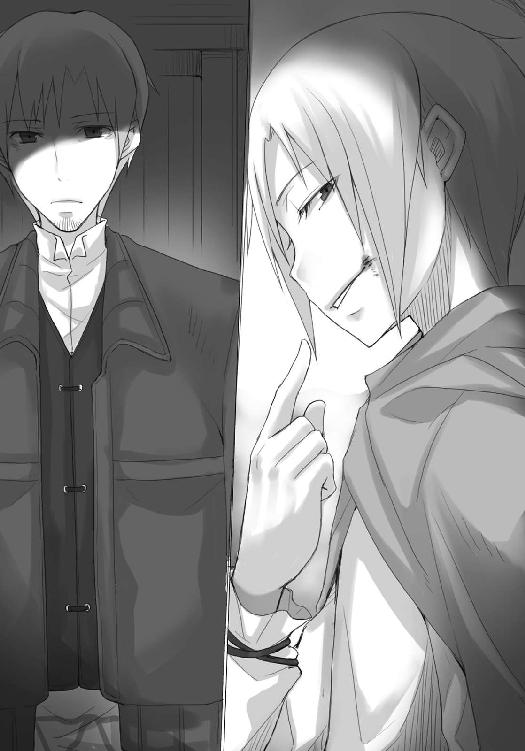
「この三角洲の契約を結んだ土地持ちの、孫に当たる。歳はオレより二つ下だがな、癇の強さと金への執着心は同じくらいだ。そして、それらと同じくらいに、オレのことが大事らしい」
皮肉っぽい笑み。
その顔が寂しそうに見えたのは、錯覚なのか。
「あいつはこの町を出ることを夢見ている。イッカクを手に入れ、その資金を元手に南に下り、大商会を作ろうと大真面目な顔で言う。お前とならば親父どもの鼻を明かせると息巻いてな。オレを殴ったその右手で、オレの肩を摑むんだ」
言葉が切れたその合間に、エーブは小さく笑いそうになり、それを深呼吸で誤魔化したのがわかった。
ただ、飲み込んだその笑みは、血となり肉となり、エーブの意志の下に顔に現れた。
「これを裏切らない手はないだろう？」
エーブは恐ろしいことを口にしている。
ロレンスを口説くのはそもそも組合を裏切ってイッカクに関する情報を集めさせるためだ。
それは地主たちがケルーベの町での主導権を再び手に入れるために、という理由からのもの。
しかし、それは表向きであってエーブに直接命令している地主の息子は、イッカクを手に入れたらケルーベの町を捨てて南に行こうと言っている。
そして、エーブはその息子を裏切ろうと言う。
ロレンスに向かって。
裏切った、その口で。
「キーマンはオレを利用しようとするはずだ」
エーブの言葉にロレンスの頭が追いつかない。
口にされる言葉の一つ一つが重すぎて、切り替えが間に合わない。
「あのどら息子がオレにべた惚れなのを知っているからな。オレを通じてあのどら息子を騙す算段をつけるはずだ」
目隠しをして戦場に赴いているようなものだ。
ロレンスの知らない情報、知り得ない情報、あるいはその真偽を判断することすらできない情報から、エーブは絵を描いている。
そんな絵の説明をされてもわからない。
わかるわけがない。
「目的は、地主たちの息の根を止めること。大方、土地の権利と引き換えにイッカクを引き渡す契約を結ぼうとするんだろうよ。権利書はキーマンの手に渡り、イッカクは息子に持ち逃げされる。荒唐無稽だと思うだろう？ だが、そんな話をオレの口からどら息子にさせてみな。まともな取引はいつだって？」
エーブは観客を窒息させないように、観客にも解くことのできる問題を出してきた。
「色恋に飛び越えられますからね」
満足げにうなずいたのは、ロレンスが椅子を立たなかったからか。
「キーマンがこんなことを考える理由ももちろんわかるさ。老人たちは変化を嫌う。打破したほうがよい環境であっても、長年続いてきたそれを変える気概は今更ない。それは北側も南側も同じ。それに若者が憤るのもまた同じ。キーマンは必死に頭を巡らせているだろうな。妙な釣り合いで動いているこのケルーベの町を刷新し、しかもなお他の組合や商会を出し抜いて自分の名を高めるにはどうすればいいかと。そのためには誰をどのように利用すればいいかと。怜悧に、合理的に、自分の目的のために」
「という絵を用いた罠を、貴女は巡らせているのかも知れない」
ロレンスには、そう言うのが精一杯だった。
エーブは片手の掌をこちらに見せて、降参の姿勢を取る。
馬鹿にされているのは、もちろんわかっている。
「それらの話の真偽を私は確かめることができない。そんな時に私が自分の判断のよりどころにすることはなんだと思いますか」
ローム川流域を縄張りにする狼は、楽しそうに笑って答えた。
「過去の経験」
「私は一度騙されていますからね」
「そのとおりだ。だが、昔の商人はいいことを言った」
つり上げた唇の下から牙が見えないことが、不思議でならなかった。
「騙されたと思って、乗ってみればいい」
エーブはそう言って、くつくつと笑う。
酔っているのかと思うほどだ。
いや、酔っているのだろう。
この、騙し絵の中に騙し絵があるような、幻惑的なやり取りに。
ロレンスは覚悟を決めて椅子から立ち上がった。
この場にこれ以上いることは、危険でしかない。
「答えは、否、でいいんだな？」
足元がふらつきかねないほど酔っ払ったような会話の直後だというのに、その声は真冬の川の水のように冷たい。
ロレンスは、背中に冷たいものが這ったのは、そのせいだと思った。
「キーマンはおそらくあんたに協力を要請するだろう。あんたは非常に都合のいい立場にあるからな。ところで......」
と、エーブは楽しそうな笑みを浮かべた。
「ジーン商会のテッド・レイノルズはオレの人脈を使いたがっている。オレがその気になりさえすれば、きっとオレの耳元で取引を望む相手の名前を囁くことだろう。あんたらは、確か狼の骨の話を追いかけていたのではないか？」
元貴族の女商人、エーブ・ボラン。
ロレンスは、無意識に腰にくくりつけているナイフに手をかけていた。
「オレが丸腰だと思っているのなら、おめでたい勘違いだ」
エーブの顔から笑みが消える。
聞き耳を立てていないとは言っていたが、扉の外には剣をぶら下げた見張りがいる。よもやその辺のごろつきを雇っているとは思えない。
それに、剣戟は商人のするべきことではない。
ロレンスはゆっくりとナイフから手を離し、一礼すると背を向けて歩き出した。
エーブの言葉が届いたのは、ロレンスが扉に手をかけた瞬間だった。
「後悔するぞ」
キーマンと同じ言葉。
ロレンスは歯を食いしばり、扉を開けた。
廊下では相変わらず、見張りの男が目を閉じて壁に寄りかかっていた。
ロレンスが無言ですれ違いざま目を向けると、腰に下げられているそれは留め金が外されいつでも抜けるようになっていた。
「口外するなよ」
そして、そんな一言を呟いた。
返事はおろかうなずきもしなかったのは、言われるまでもないことだから、というわけではない。
口外できるわけがなかった。
行商人として一人前だと自認したのはもう何年も前だし、自分が世間にとってどれくらい小さいものであるかはとっくに理解しているつもりだった。
だというのに、恐ろしい構造の一端を垣間見た。
彼らは信じられない金額で遊ぶ博打打ちだ。
住む世界そのものが違う。
そんな思いが、拭いきれなかった。
玄関の扉を開けると馬車が待機しており、それはロレンスのために用意されたものだ。
「どうぞ、お客様」
御者の向こう側に見えるのは、相変わらず皮を裁ち切っている三人の職人たち。
ロレンスは気がついた。
彼らは見張りなのだ。
差し出された外套を受け取り、目深にかぶりながら馬車に乗り込んだ。
キーマンに庇護を求めるべきか、と自問する。エーブがあそこまで手の内を明かした以上、ロレンスを放置しておくとはとても思えないからだ。
あるいは、ここでケルーベから逃げ出すことも選択肢にのぼってくる。
相場のわからない市場からは一切の取引を行わずに逃げるべきだ。
ロレンスは黙考し、気がついたら宿の裏口に着いていた。
強張る顔の筋肉を動かして御者に礼を言い、裏口から宿に入って大きくため息をつく。
扉の開け閉めで気がついたのか、主人が顔を覗かせてきたので、ロレンスは無言で外套を返した。ひどい顔をしているのか、主人は気遣うように飲み物を勧めてきたが、断ってまっすぐ部屋に向かった。
最善策は、ここを嗅ぎつけられる前に、あるいはキーマンが本気になる前に逃げることだ。
そうすれば狼の骨の話に関する手がかりを失うことになる。
しかし、ジーン商会が本気でその話を追いかけていることはわかったのだから、どこか別の町でジーン商会を軸に話を集めればどうにかなる可能性はあった。
ロレンスは扉に手をかけて、開ける。
今すべきなのは、この迫りくる嵐を前に、自分の乗る小さな船を守ること。
その時の顔は、きっとどんな絵描きでも描くことはできなかっただろう。
「ぬしよ、こんなものが来たんじゃが」
ホロがロレンスに向けて掲げた羊皮紙には、一目でわかる印があった。
ローエン商業組合の組合印。
真っ赤な蠟に押されたその印が悪魔の署名に見えたとしても、大袈裟ではないだろう。
口の中がからからに乾いているのに、必死に唾を飲み込もうとする。
とっくに組合には宿泊先がばれていた。
キーマンは本気だ。
そして、エーブの言っていたことは本当だ。
ロレンスの頭上を越えて話が進んでいく。
大きな歯車が、ぎしぎしと軋み音を立てていた。
続く
あとがき
お久しぶりです。支倉凍砂です。
今回は表題のとおり上下巻構成の上巻という運びになりました。
なぜ、どうして、という疑問にお答えしているとそれだけで本が一冊できてしまうので多くは語らないのですが、最大の原因はプロットからは書き上がる総枚数が計算できないことです。
必要なことだけ埋めているつもりだったのに枚数が増える増える。
四苦八苦してページを削って一回原稿を完成させたものの、量も多いしちょっと歪なので上下巻にして下巻は手直ししましょうということでした。
というわけで美しい二ヶ月連続刊行、ということにはならず多少間が開いてしまいますが、お待ちいただけると幸いです。
下巻はロレンスがかっこいいはずです。
少なくとも、プロット上ではそうなっています！
ところで、この前すごい変わった食べ物を食べましたのでここにご報告します。
なんと、ツキノワグマの背脂の刺身です。
店主がすごい狩人で、沖縄で琉球猪を仕留め、奈良で鹿を仕留め、仕留めた獲物を調理して出すお店なのです。鹿については噓をつきましたが、猪は本当だそうです。
で、ツキノワグマの背脂。
事前に聞いていた話では馬の鬣に近いといわれていたのですが、食べてみると塩味のしないバターみたいな感じでした。口に入れるとすぐに溶けていき、まったく臭みがなく、ほんのり脂の甘みがして、筋もないので本当にバターを食べてるみたいでした。
高層ビルに囲まれた横丁で、店の外の通りに折りたたみ式の椅子を出して、ビールとか入ってる冷蔵庫をテーブル代わりにして食事をするという実に野趣溢れるシチュエーションで食べたこともあって、大変においしかったです。
とかそんな話を書いていたら焼肉が食べたくなったので今晩は焼肉にしようかと思います。
ついでにページも埋まったのでこのへんで。
では、下巻でまたお会いしましょう。
支倉凍砂
支倉凍砂
１９８２年12月27日生まれ。第12回電撃小説大賞〈銀賞〉受賞。最近の好きな言い訳は、質量保存の法則によればケーキを２００ｇ食べたとしてすべて脂肪になっても２００ｇの体重増に過ぎないので大丈夫。いえ、大丈夫のはずなんです。
文倉十
１９８１年生まれ、京都府出身のＡＢ型。現在関東にて、フリーで細々と活動中。この本が出るころには終わっているはずですが現在引越し準備に追われています。終わるかなこれ......。
電撃文庫
狼と香辛料VIII
対立の町〈上〉
支倉凍砂
二〇十三年四月二十五日 配信
発行者 塚田正晃
発行所 株式会社アスキー・メディアワークス
〒一〇二─八五八四 東京都千代田区富士見一─八─十九
(C)2008 ISUNA HASEKURA/ASCII MEDIA WORKS
本書（電子版）に掲載されているコンテンツ（ソフトウェア／プログラム／データ／情報を含む）の著作権およびその他の権利は、すべて株式会社アスキー・メディアワークスおよび正当な権利を有する第三者に帰属しています。
法律の定めがある場合または権利者の明示的な承諾がある場合を除き、これらのコンテンツを複製・転載、改変・編集、翻案・翻訳、放送・出版、公衆送信（送信可能化を含む）・再配信、販売・頒布、貸与等に使用することはできません。